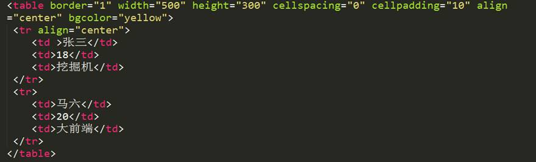
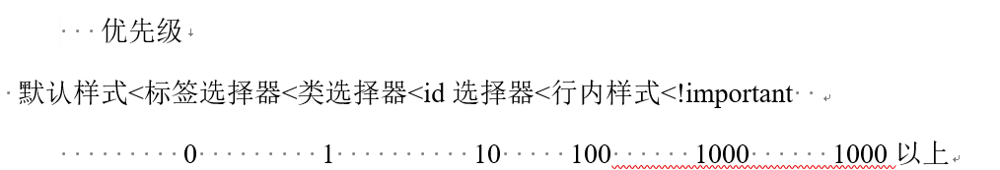
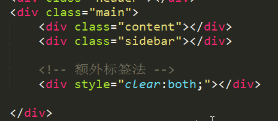
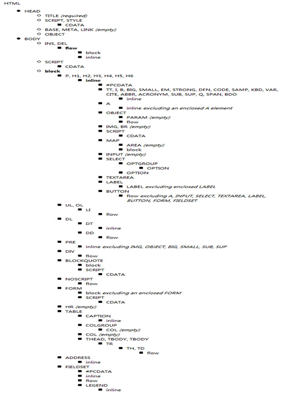
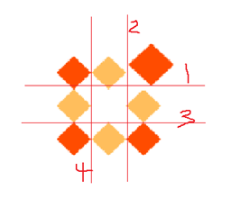
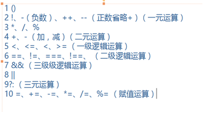
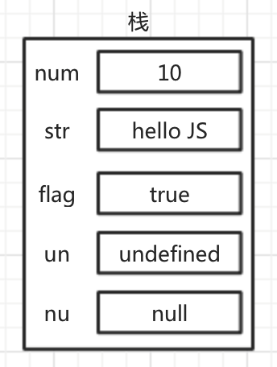

- 计算机入门
- HTML入门
- HTML5基础
- CSS基础语法
- CSS3
- JS基础语法
- DOM基础
- BOM基础
- 移动web知识
- Canvas
- 正则
- js高级
- jQuery
- Git与GitHub
- php基础语法
前端内容整理
学习网站：
MDN （开发者网站）*https://developer.mozilla.org/zh-CN/*
提问解答：*https://segmentfault.com/*
计算机入门
Windows常用快捷键：
| Windows+D | 返回桌面 |
|---|---|
| Windows+D | 打开资源管理器 |
| Windows+R | 打开运行 |
| Alt+tab | 切换软件 |
| Ctrl+tab | 统一软件文档简切换 |
| F2 | 重命名 |
| F5 | 刷新页面 |
| F11 | 全屏 |
Submit 快捷键
| Ctrl+shift+k | 删除一行 |
|---|---|
| Ctrl+h | 查找替换 |
| Ctrl+f | 查找 |
| Ctrl+L | 快速选择一行 |
| Ctrl+shift+↑（↓） | 快速上移（下移）一行 |
| Ctrl+shift+s | 另存为 |
| Shift+delete | 删除行 |
sublime快捷键使用： *http://blog.csdn.netdetails/11530751*
webstorm常用快捷键
| Ctrl+/或Ctrl+Shift+/ | 注释（// 或者/*…*/ ） |
|---|---|
| Shift+F6 | 重构-重命名 |
| Ctrl+X | 删除行 |
| Ctrl+D | 复制行 |
| Ctrl+G | 查找行 |
| Ctrl+Shift+Up/Down | 代码向上/下移动。 |
| F2 或Shift+F2 | 高亮错误或警告快速定位 |
| 写代码，按Tab | 生成代码 |
| 选中文本，按Ctrl+Shift+F7 | 高亮显示所有该文本，按Esc高亮消失。(因为这个功能我就可以发放心的放弃sublime了) |
| Ctrl+B或Ctrl+鼠标左键单击 | 快速打开光标处的类或方法，（NB的功能） |
| Ctrl + Alt + B | Go to implementation(s) 跳转方法实现处 |
| Ctrl + Shift + I | Open quick definition lookup 打开定义快速查找 |
| Alt + Up/Down | Go to previous/next method 跳转到上一个/下一个方法 |
| Ctrl+E | 最近打开的文件 |
| Alt+F1 | 查找代码所在位置 |
| Ctrl+Alt+L | 格式化代码 |
| Ctrl+R | 替换文本 |
| Ctrl+F | 查找文本 |
| Ctrl+P | 方法参数提示 |
| F3 | 查找下一个 |
| Shift+F3 | 查找上一个 |
| alt+Shift+F | 将当前文件加入收藏夹 |
| ctrl+alt+s | 打开配置窗口 |
| ctrl+Shift+N | 通过文件名快速查找工程内的文件（必记） |
| ctrl+Shift+alt+N | 通过一个字符快速查找位置（必记） |
| Shift+enter | 重新开始一行（无论光标在哪个位置） |
| Ctrl+Alt+T | with…（if, else, try, catch, for, etc）用 * 来围绕选中的代码行，（ * 包括 if 、 while 、 try catch 等） |
| Ctrl + Shift + U | Toggle case for word at caret or selected block 光标所在位置大小写 |
| Ctrl + Delete | Delete to word end 删除文字结束 |
| Ctrl + Backspace | Delete to word start 删除文字开始 |
| Ctrl + E | Recent files popup 弹出最近打开的文件 |
| F11 | Toggle bookmark 切换标记，我觉得叫书签更好，就是sublime text 的F2 |
| Ctrl + Shift + F12 | Toggle maximizing editor 切换最大化编辑器 |
| Alt + Shift + F | Add to Favorites 添至收藏夹 |
Fireworks的基本使用
| 新建文件 | ctrl+n |
|---|---|
| 打开文件 | ctrl+o |
| 调出和隐藏标尺 | ctrl+r |
| 清除辅助线 | 视图—辅助线----清除辅助线 |
| 放大镜状态下 | 单击左键：放大： |
alt+鼠标左键：缩小 |
| 抓手 | 压住空格键，指针变为抓手 |
| 测量距离 | ★先拉出2根辅助线
★切换到指针工具
★将光标放到2根辅助线之间，按住shift键 |
Notepad++快捷键
| Alt+H | 隐藏行 |
|---|---|
| Ctrl+Tab | 实现在多个打开的窗口间切换 |
| Ctrl+Shift+Q | 区块注释 |
| Ctrl+K | 行注释(取消Ctrl+Shift+K) |
| 打开文件 | Ctrl+O |
| 另存为 | Ctrl+Alt+S |
| 全部保存 | Ctrl+Shift+S |
| 关闭当前文件 | Ctrl+W |
| 打印文件 | Ctrl+P |
| 退出 | Alt+F4 |
| 撤销 | Ctrl+Z |
| 恢复 | Ctrl+Y |
| 列编辑 | Alt+C |
| 转为大写 | Ctrl+Shift+U |
| 转为小写 | Ctrl+U |
| 复制当前行 | Ctrl+D |
| 删除当前行 | Ctrl+L |
| 分割行 | Ctrl+I |
| 合并行 | Ctrl+J |
| 上移当前行 | Ctrl+Shift+Up |
| 下移当前行 | Ctrl+Shift+Down |
| 添加/删除单行注释 | Ctrl+Q |
| 设置行注释 | Ctrl+K |
| 取消行注释 | Ctrl+Shift+K |
| 区块注释 | Ctrl+Shift+Q |
| 函数自动完成 | Ctrl+Space |
| 查找 | Ctrl+F |
| 在文件中搜索 | Ctrl+Shift+F |
| 查找下一个 | F3 |
| 查找上一个 | Shift+F3 |
| 选定并找下一个 | Ctrl+F3 |
| 行定位 | Ctrl+G |
| 定位匹配括号 | Ctrl+B |
| 设置/取消书签 | Ctrl+F2 |
| 下一书签 | F2 |
| 上一书签 | Shift+F2 |
更多：*http://www.cnblogs.com/exmyth/archive/2013/04/16/3024158.html*
HTML入门
HTML常用标签
常见单标签：
meta, link, input, image, hr, br
Image标签常用属性
| Src | 图片地址 |
|---|---|
| Alt | 替换文字（图片显示不正常时显示） |
| Tiltle | 提示文字（鼠标悬停显示） |
| Width | 宽 |
| Heiht | 高 |
指定图像的尺寸
最后，另外一种改善性能的方法是把图像矩形边界的高度和宽度都包含在它的标签里面。通过指定这些尺寸，就可以省去其他一些额外步骤，扩展功能的浏览器不必再用额外步骤下载、检验并计算图像在文档中的尺寸。然而，这种做法有一个不好的地方。如果用户关闭了自动下载图像的功能，浏览器还是会把为图像预留的空间以指定的尺寸显示出来。这样留给读者的通常是一个空的框架，虽然对于该问题还没有解决方案，但是我们还是鼓励您使用这些尺寸属性，因为我们鼓励一切能够改善网络性能的行为。
标准的属性中应该包含width与height，有利与SEO优化
图片标签之SEO效果解说：*http://www.chinaz.com/web/2008/0905/37186.shtml*
img标签的border属性，
border：none; //为兼容低版本ie
a标签常用属性
| Href | a链接跳转路径 |
|---|---|
| tilte | 提示文本（鼠标悬停显示） |
| Target(_self/_blank) | 打开链接方式 |
| <a href=”#sd”) | 锚链接（#不要忘） |
| href=”javascript:;” | 取消链接跳转事件 |
设置a链接不跳转：*http://www.jb51.net/article/37904.htm*
meta标签
| 形式 | 作用 |
|---|---|
| <meta charset=”UTF-8”> | 字符集 |
| <meta name=”keywords” content=”…”> | 网页关键字 |
| <meta name=”description” content=”…”> | 网页描述 |
| <meta http-equiv=”refresh” content=”5; http://…”> | 网页重定向 |
link标签
| <link rel=”stylesheet” href=”1.css”> | 链接外部样式表 |
|---|---|
| <link rel=”icon” href=”favicon.ico”> | 设置icon图标 |
使用较少的标签
| 宜用 | 不宜用 | 作用 |
|---|---|---|
| strong | b | 强调 |
| em | i | 文本倾斜 |
| del | s | 删除线 |
| ins | u | 下划线 |
尽量不用标签设置样式，使用CSS
font标签可以在行内设置样式，但属于不推荐使用的标签，span标签推荐使用，可以将文字在行内分成几段，但没有color等属性，需要用css设置样式。
span标签是在行内定义一个区域，也就是一行内可以被<span>划分成好几个区域，从而实现某种特定效果。<span>本身没有任何属性。font标签意思是:规定文本的字体、字体尺寸、字体颜色。<font>标签常用的属性有:color（文本颜色）、size（文本大小）、face（文本字体）等。font是html4.0时代的，虽然大多数浏览器都支持，但是属于过时的，不标准的，不被w3c推荐的标签。
其他不常用标签
| sub | 表示下标 |
|---|---|
| sup | 表示上标 |
列表标签
有序列表ol
<ol> 标签定义有序列表。
| 属性 | 值 | 描述 |
|---|---|---|
| compact | compact | HTML5 中不支持。HTML 4.01 中不赞成使用。规定列表呈现的效果比正常情况更小巧。 |
| reversed | reversed | 规定列表顺序为降序。(9,8,7…) |
| start | number | 规定有序列表的起始值。 |
| type | 1/A/a/I/i | 规定在列表中使用的标记类型。 |
无序列表ul
| 属性 | 值 | 描述 |
|---|---|---|
| compact | compact | HTML5 中不支持。HTML 4.01 中不赞成使用。规定列表呈现的效果比正常情况更小巧。 |
| type | disc/square/circle | 不赞成使用。请使用样式取代它。规定列表的项目符号的类型。 |
表单标签
| form | 表单标签 |
|---|---|
| fieldset | 表单域 |
| legend | 表单域名称 |
| label | 点击时将焦点转移到for属性指向的ID |
| input | 输入 |
input标签属性
1.type属性
| button | 定义可点击按钮（多数情况下，用于通过 JavaScript 启动脚本）。 |
|---|---|
| checkbox | 定义复选框。 |
| file | 定义输入字段和 “浏览”按钮，供文件上传。 |
| hidden | 定义隐藏的输入字段。 |
| image | 定义图像形式的提交按钮。 |
| password | 定义密码字段。该字段中的字符被掩码。 |
| radio | 定义单选按钮。 |
| reset | 定义重置按钮。重置按钮会清除表单中的所有数据。 |
| submit | 定义提交按钮。提交按钮会把表单数据发送到服务器。 |
| text | 定义单行的输入字段，用户可在其中输入文本。默认宽度为 20 个字符。 |
特殊字符

重点： < > © ¥
表格

表格标签：
| table | 最外围标签，创建表格 |
|---|---|
| caption | 表头标签 |
| tr | 行 |
| td | 列 |
| thead | 表格头部，后边三个不常用 |
| tbody | 表格身体 |
| tfoot | 表格尾部 |
表格常用属性：
| border | 边框 |
|---|---|
| width | 宽 |
| height | 高 |
| cellspacing | 单元格之间的距离 |
| cellpading | 内容距边框的距离 |
| align=“left | center |
| valign=”bottom | top” |
| bgcolor | 背景颜色 |
| colspan=“2” | 合并同一行上的单元格 |
| rowspan=“2” | 合并同一列上的单元格 |
label for id 获取光标焦点
<lablel for=”username”>用户名：</label>
<input type=”text” class=”username” id=”username”>;
HTML 全局属性
HTML 属性赋予元素意义和语境。
下面的全局属性可用于任何 HTML 元素。
HTML 全局属性
| 属性 | 描述 |
|---|---|
| accesskey | 规定激活元素的快捷键。 |
| class | 规定元素的一个或多个类名（引用样式表中的类）。 |
| contenteditable | 规定元素内容是否可编辑。 |
| contextmenu | 规定元素的上下文菜单。上下文菜单在用户点击元素时显示。 |
| data-* | 用于存储页面或应用程序的私有定制数据。 |
| dir | 规定元素中内容的文本方向。 |
| draggable | 规定元素是否可拖动。 |
| dropzone | 规定在拖动被拖动数据时是否进行复制、移动或链接。 |
| hidden | 规定元素仍未或不再相关。 |
| id | 规定元素的唯一 id。 |
| lang | 规定元素内容的语言。 |
| spellcheck | 规定是否对元素进行拼写和语法检查。 |
| style | 规定元素的行内 CSS 样式。 |
| tabindex | 规定元素的 tab 键次序。 |
| title | 规定有关元素的额外信息。 |
| translate | 规定是否应该翻译元素内容。 |
表单
表单域form
<form action=“1.php” method= “get”>
| action | 指向处理信息文件 |
|---|---|
| method=”get | post” |
表单信息分组fieldset标签
Fieldset标签对表单进行分组
Legend标签，分组名称，包含在fieldset标签里
文本输入框input
Input常用重点属性type
| Type= | 类型 | 备注 |
|---|---|---|
| text | 文本输入框 | |
| password | 密码输入框 | |
| radio | 单选框 | Name值相同为一组，一组只能选一个 |
Checked=“checked”设置为默认选中项
可以通过label for ID 将文字与按钮关联 |
| checkbox | 多选框 | Checked= “checked”设置为默认选中项 |
| file | 文件上传控件 | |
| submit | 文件提交按钮 | |
| button | 普通按钮 | 表单中button与type= “button”不同 |
| image | 图片按钮 | 显示为图片，有按钮的功能 |
| reset | 重置按钮 | 将信息重置到默认状态 |
Input常用属性：
| maxlength=”6” | 限制输入字符长度 |
|---|---|
| readonly=”readonly” | 状态设置为只读 |
| disable=”disable” | 输入框为未激活状态 |
| name=”username” | 输入框的name值 |
| vlue | 将输入框的内容传给处理文件 |
下拉列表select:
Select标签是下拉列表标签，双标签，
Option标签是下拉列表的选项，包含在select标签内部
Optgroup标签，对下拉列表进行分组
常用属性
| multiple=”multiple” | 将下拉列表设置为多选项 | Select标签使用 |
|---|---|---|
| selected=”selected” | 设置默认选中项目 | Option标签使用 |
| Label=”” |
<optgroup label=”北京”> | 分组名称 | 作为optgroup标签的一个属性使用 |
多行文本框
textarea标签
| cols=”130” | 控制输入字符长度（列数） |
|---|---|
| rows=”10” | 控制输入的行数 |
Html全局属性
| 属性 | 描述 |
|---|---|
| accesskey | 规定激活元素的快捷键。 |
| class | 规定元素的一个或多个类名（引用样式表中的类）。 |
| contenteditable | 规定元素内容是否可编辑。 |
| contextmenu | 规定元素的上下文菜单。上下文菜单在用户点击元素时显示。 |
| data-* | 用于存储页面或应用程序的私有定制数据。 |
| dir | 规定元素中内容的文本方向。 |
| draggable | 规定元素是否可拖动。 |
| dropzone | 规定在拖动被拖动数据时是否进行复制、移动或链接。 |
| hidden | 规定元素仍未或不再相关。 |
| id | 规定元素的唯一 id。 |
| lang | 规定元素内容的语言。 |
| spellcheck | 规定是否对元素进行拼写和语法检查。 |
| style | 规定元素的行内 CSS 样式。 |
| tabindex | 规定元素的 tab 键次序。 |
| title | 规定有关元素的额外信息。 |
| translate | 规定是否应该翻译元素内容。 |
易混格式
src与url
| Css中背景图片地址 | background: url(“images/qq.png”); |
|---|---|
| Img标签地址 | <img src=”” alt=”“> |
| Script标签 | <script src=”“></script> |
设置选中
| checkbox 多选框 | Checked= “checked”设置为默认选中项 |
|---|---|
| Option标签使用 | selected=”selected” 设置默认选中项目 |
emmet快捷键：
emmet是我们在sublime中的一个插件在这个插件中集成很多的快捷键。
又称emmet语法
html:
| 生成结构的快捷键 | ！+ tab,可以生成html5的结构代码 |
|---|---|
| 生成id名和类名 | 标签名.类名#id名+tab |
没有标签名.类名+tab ==>div |
| 生成同级元素 | 标签名+标签名+标签名 “+”tab |
| 生成子类标签 | 标签名>子标签名>子标签名>子标签名+tab
标签名>子标签名>子标签名>子标签名^^子标签名+tab
^表示上升一级 |
| 带固定数量的标签 | ul>li*5+tab |
| 带有序号名称 | ul>li.abc$*3 + tab |
| 生成带有内容的标签 | ul>li>a{item}*5 |
css
| width:30px==>w30+tab |
|---|
| Height:30px==>h30+tab |
| Margin:30px==>mg30+tab |
| Padding:30px==> pd30+tab |
| Line-height:12px==>lh12px+tab |
| Background==>bg+tab |
更多:
HTML 元素参考
这一页列出了所有的 HTML elements (元素)。元素按功能分类，以帮助你轻松地寻找元素。尽管本文是为新手写的，但我们希望它能帮到所有人。
*https://developer.mozilla.org/zh-CN/docs/Web/HTML/Element*
HTML5 标签列表
这里列出了所有标准化的 HTML5 元素，使用起始标签描述，按照功能分组。与列出所有标准化的、非标准化的、有效的、废弃的标签的 HTML 元素索引 不同的是，该页只列出有效的 HTML5 元素。新网站应当只使用这里列出的元素。
https://developer.mozilla.org/zh-CN/docs/Web/Guide/HTML/HTML5/HTML5_element_list
HTML5基础
HTML5并不仅仅只是做为HTML标记语言的一个最新版本，更重要的是它制定了Web应用开发的一系列标准，成为第一个将Web做为应用开发平台的HTML语言。
HTML5不兼容IE8及之前版本.
语义化标签
常用标签
| <nav> | 表示导航 |
|---|---|
| <header> | 表示页眉 |
| <footer> | 表示页脚 |
| <section> | 表示区块 |
| <article> | 表示文章 如文章、评论、帖子、博客 |
| <aside> | 表示侧边栏 如文章的侧栏 |
| <figure> | 表示媒介内容分组 与 ul > li 做个比较 |
| <mark> | 表示标记 (带用“UI”，不怎么用) |
| <progress> | 表示进度 (带用“UI”，不怎么用) |
| <time> | 表示日期 |
本质上新语义标签与<div>、<span>没有区别，只是其具有表意性，使用时除了在HTML结构上需要注意外，其它和普通标签的使用无任何差别，可以理解成<div class=”nav”> 相当于 <nav>。不要好奇，它只是一个标签！
尽量避免全局使用header、footer、aside等语义标签。
iframe标签
iframe 元素会创建包含另外一个文档的内联框架（即行内框架）。
可以把需要的文本放置在 <iframe> 和 </iframe> 之间，这样就可以应对无法理解 iframe 的浏览器。
常用属性
| 属性 | 值 | 描述 |
|---|---|---|
| align | left/right/top/middle/bottom | 不赞成使用。请使用样式代替。规定如何根据周围的元素来对齐此框架。 |
| frameborder | 1/0 | 规定是否显示框架周围的边框。 |
| height | pixels/% | 规定 iframe 的高度。 |
| longdesc | URL | 规定一个页面，该页面包含了有关 iframe 的较长描述。由于浏览器对 longdesc 属性的支持性非常差，没有必要使用该属性。 |
| marginheight | pixels | 定义 iframe 的顶部和底部的边距。 |
| marginwidth | pixels | 定义 iframe 的左侧和右侧的边距。 |
| name | frame_name | 规定 iframe 的名称。 |
| sandbox | ”“/allow-forms/allow-same-origin/allow-scripts/allow-top-navigation | 启用一系列对 <iframe> 中内容的额外限制。 |
| scrolling | yes/no/auto | 规定是否在 iframe 中显示滚动条。 |
| seamless | seamless | 规定 <iframe> 看上去像是包含文档的一部分。 |
| src | URL | 规定在 iframe 中显示的文档的 URL。 |
| srcdoc | HTML_code | 规定在 <iframe> 中显示的页面的 HTML 内容。 |
| width | pixels/% | 定义 iframe 的宽度。 |
更多：http://www.w3school.com.cn/tags/tag_iframe.asp
兼容性
(我们在测试ie 的兼容的时候，有一个叫做ietest 的软件，这个软件可以模拟ie6-ie11)
在不支持HTML5新标签的浏览器里，会将这些新的标签解析成行内元素(inline)对待，所以我们只需要将其转换成块元素(block)即可使用，但是在IE9版本以下，并不能正常解析这些新标签，但是却可以识别通过document.createElement(‘tagName’)创建的自定义标签，于是我们的解决方案就是将HTML5的新标签全部通过document.createElement(‘tagName’)来创建一遍，这样IE低版本也能正常解析HTML5新标签了，在实际开发中我们更多采用的是通过检测IE浏览器的版本来加载三方的一个JS库来解决兼容问题。
表单
输入类型
根据input的type不同，表单表现不同：
| 输入email格式 | |
|---|---|
| tel | 手机号码 |
| url | 只能输入url格式 |
| number | 只能输入数字 |
| search | 搜索框 |
| range | 范围 滑动条 |
| color | 拾色器 |
| time | 时间 |
| date | 日期 不是绝对的 |
| –datetime | 时间日期 |
| month | 月份 |
| week | 星期 |
部分类型是针对移动设备生效的，且具有一定的兼容性，在实际应用当中可选择性的使用。
表单元素（标签）
<datalist> 数据列表
与input 配合使用
<input type=”text” list=”data”>
<datalist id=”data”>
<option>男</option>
<option>女</option>
<option>不详</option>
</datalist>
<keygen> 生成加密字符串
keygen 元素
keygen 元素的作用是提供一种验证用户的可靠方法。
keygen 元素是密钥对生成器（key-pair generator）。当提交表单时，会生成两个键，一个是私钥，一个公钥。
私钥（private key）存储于客户端，公钥（public key）则被发送到服务器。公钥可用于之后验证用户的客户端证书（client certificate）。
<output>
不可当做数据提交
<meter>
表示度量器，不建议用作进度条
<progress>标签
定义运行中的进度（进程）。可以使用 <progress> 标签来显示 JavaScript 中耗费时间的函数的进度。
<progress value=”205” max=”100”>
属性
| 属性 | 值 | 描述 |
|---|---|---|
| max | number | 定义完成的值。 |
| value | number | 定义进程的当前值。 |
表单属性
Input标签属性
| placeholder | 占位符 |
|---|---|
| autofocus | 获取焦点 |
| multiple | 文件上传多选或多个邮箱地址 |
| autocomplete | 自动完成，用于表单元素，也可用于表单自身(on/off) |
| form | 指定表单项属于哪个form，处理复杂表单时会需要 |
| novali date | 关闭验证，可用于<form>标签 |
| required | 必填项 |
| pattern | 正则表达式 验证表单 |
手机号:<input type=”tel” name=”tel” required=”required” pattern=”^(\+86)?1[3,5,8](\d{9})$”>
表单重写没有提及，自行验证，共包含
应用于提交按钮上，如：<input type=”submit” formaction=”xxx.php”>
表单事件
oninput
用户输入内容时触发，可用于移动端输入字数统计
oninvalid
验证不通过时触发
多媒体
在HTML5之前，在网页上播放音频/视频的通用方法是利用Flash来播放，但是大多情况下，并非所有用户的浏览器都安装了Flash插件，由此使得处理音频/视频播放变的非常复杂，并且移动设备的浏览器并不支持Flash插件。
音频
HTML5通过<audio>标签来解决音频播放的问题。
并且可以通过附加属性可以更友好控制音频的播放，如：
autoplay 自动播放
controls 是否显示默认播放控件
loop 循环播放
preload 预加载 同时设置autoplay时此属性失效
由于版权等原因，不同的浏览器可支持播放的格式是不一样的
多浏览器支持的方案，如下图
视频
HTML5通过<video>标签来解决音频播放的问题。Src属性必选
同样，通过附加属性可以更友好的控制视频的播放
autoplay 自动播放
controls 是否显示默认播放控件
loop 循环播放
preload 预加载，同时设置了autoplay，此属性将失效
width 设置播放窗口宽度
height 设置播放窗口的高度
由于版权等原因，不同的浏览器可支持播放的格式是不一样的
关于<video>标签所支持的视频格式和编码：
MP4 = MPEG 4文件使用 H264 视频编解码器和AAC音频编解码器
WebM = WebM 文件使用 VP8 视频编解码器和 Vorbis 音频编解码器
Ogg = Ogg 文件使用 Theora 视频编解码器和 Vorbis音频编解码器
多浏览器支持的方案，如下图
HTML5 Audio/Video 方法
| addTextTrack() | 向音频/视频添加新的文本轨道 |
|---|---|
| canPlayType() | 检测浏览器是否能播放指定的音频/视频类型 |
| load() | 重新加载音频/视频元素 |
| play() | 开始播放音频/视频 |
| pause() | 暂停当前播放的音频/视频 |
HTML5 Audio/Video 属性
| audioTracks | 返回表示可用音轨的 AudioTrackList 对象 |
|---|---|
| autoplay | 设置或返回是否在加载完成后随即播放音频/视频 |
| buffered | 返回表示音频/视频已缓冲部分的 TimeRanges 对象 |
| controller | 返回表示音频/视频当前媒体控制器的 MediaController 对象 |
| controls | 设置或返回音频/视频是否显示控件（比如播放/暂停等） |
| crossOrigin | 设置或返回音频/视频的 CORS 设置 |
| currentSrc | 返回当前音频/视频的 URL |
| currentTime | 设置或返回音频/视频中的当前播放位置（以秒计） |
| defaultMuted | 设置或返回音频/视频默认是否静音 |
| defaultPlaybackRate | 设置或返回音频/视频的默认播放速度 |
| duration | 返回当前音频/视频的长度（以秒计） |
| ended | 返回音频/视频的播放是否已结束 |
| error | 返回表示音频/视频错误状态的 MediaError 对象 |
| loop | 设置或返回音频/视频是否应在结束时重新播放 |
| mediaGroup | 设置或返回音频/视频所属的组合（用于连接多个音频/视频元素） |
| muted | 设置或返回音频/视频是否静音 |
| networkState | 返回音频/视频的当前网络状态 |
| paused | 设置或返回音频/视频是否暂停 |
| playbackRate | 设置或返回音频/视频播放的速度 |
| played | 返回表示音频/视频已播放部分的 TimeRanges 对象 |
| preload | 设置或返回音频/视频是否应该在页面加载后进行加载 |
| readyState | 返回音频/视频当前的就绪状态 |
| seekable | 返回表示音频/视频可寻址部分的 TimeRanges 对象 |
| seeking | 返回用户是否正在音频/视频中进行查找 |
| src | 设置或返回音频/视频元素的当前来源 |
| startDate | 返回表示当前时间偏移的 Date 对象 |
| textTracks | 返回表示可用文本轨道的 TextTrackList 对象 |
| videoTracks | 返回表示可用视频轨道的 VideoTrackList 对象 |
| volume | 设置或返回音频/视频的音量 |
HTML5 Audio/Video 事件
| abort | 当音频/视频的加载已放弃时 |
|---|---|
| canplay | 当浏览器可以播放音频/视频时 |
| canplaythrough | 当浏览器可在不因缓冲而停顿的情况下进行播放时 |
| durationchange | 当音频/视频的时长已更改时 |
| emptied | 当目前的播放列表为空时 |
| ended | 当目前的播放列表已结束时 |
| error | 当在音频/视频加载期间发生错误时 |
| loadeddata | 当浏览器已加载音频/视频的当前帧时 |
| loadedmetadata | 当浏览器已加载音频/视频的元数据时 |
| loadstart | 当浏览器开始查找音频/视频时 |
| pause | 当音频/视频已暂停时 |
| play | 当音频/视频已开始或不再暂停时 |
| playing | 当音频/视频在已因缓冲而暂停或停止后已就绪时 |
| progress | 当浏览器正在下载音频/视频时 |
| ratechange | 当音频/视频的播放速度已更改时 |
| seeked | 当用户已移动/跳跃到音频/视频中的新位置时 |
| seeking | 当用户开始移动/跳跃到音频/视频中的新位置时 |
| stalled | 当浏览器尝试获取媒体数据，但数据不可用时 |
| suspend | 当浏览器刻意不获取媒体数据时 |
| timeupdate | 当目前的播放位置已更改时 |
| volumechange | 当音量已更改时 |
| waiting | 当视频由于需要缓冲下一帧而停止 |
事件流水: *http://www.cnblogs.com/Kevin-Zhao/articles/5065709.html*
DOM扩展
获取元素
新增选择器：querySelector；querySelectorAll。
1、document.getElementsByClassName (‘class’) 通过类名获取元素，以类数组形式存在。
2、document.querySelector(‘div’) 通过CSS选择器获取元素，符合匹配条件的第1个元素。
3、document.querySelectorAll(‘selector’) 通过CSS选择器获取元素，以类数组形式存在。
类名操作
1、Node.classList.add(‘class’) 添加class
2、Node.classList.remove(‘class’) 移除class
3、Node.classList.toggle(‘class’) 切换class，有则移除，无则添加
4、Node.classList.contains(‘class’) 检测是否存在class
Node指一个有效的DOM节点，是一个通称。
自定义属性
命名：date-info=””，获取：node.dateset[‘info’]，
Date-my-name=’itcast’,获取是使用驼峰命名法：node.dateset[‘maName’]
Node.dataset是以类对象形式存在的
新增API
多媒体
方法
load() 加载、play() 播放、pause() 暂停
属性
currentTime 视频播放的当前进度、
duration:视频的总时间
paused:视频播放的状态.
事件：
oncanplay: 事件在用户可以开始播放视频/音频（audio/video）时触发。
ontimeupdate:通过该事件来报告当前的播放进度.
onended:播放完时触发
全屏
video.webkitRequestFullScreen();
拖拽
在HTML5的规范中，我们可以通过为元素增加draggable=”true”来设置此元素是否可以进行拖拽操作，其中图片、链接默认是开启的。
页面中设置了draggable=”true”属性的元素可以被拖拽称为拖拽元素，页面中任何一个元素都可以成为拖拽后的目的地，称为目标元素。
事件
拖拽元素
| ondrag | 应用于拖拽元素，整个拖拽过程都会调用 |
|---|---|
| ondragstart | 应用于拖拽元素，当拖拽开始时调用 |
| ondragleave | 应用于拖拽元素，当鼠标离开拖拽元素时调用 |
| ondragend | 应用于拖拽元素，当拖拽结束时调用 |
目标元素
| ondragenter | 应用于目标元素，当拖拽元素进入时调用 |
|---|---|
| ondragover | 应用于目标元素，当停留在目标元素上时调用 |
| ondrop | 应用于目标元素，当在目标元素上松开鼠标时调用 |
| ondragleave | 应用于目标元素，当鼠标离开目标元素时调用 |
历史
提供window.history，对象我们可以管理历史记录，可用于单页面应用，Single Page Application，可以无刷新改变网页内容。 旧版本浏览器.. history.back() 回退 history.forward() 前进
地理定位
在HTML规范中，增加了获取用户地理信息的API，这样使得我们可以基于用户位置开发互联网应用，即基于位置服务 (Location Base Service)
获取地理信息方式
1.IP地址
2.三维坐标
GPS（Global Positioning System，全球定位系统） 目前世界上在用或在建的第2代全球卫星导航系统（GNSS）有：1.美国 Global Positioning System （全球定位系统） 简称GPS；.2.苏联/俄罗斯 GLOBAL NAVIGATION SATELLITE SYSTEM （全球卫星导航系统）简称GLONASS（格洛纳斯）；3.欧盟（欧洲是不准确的说法，包括中国在内的诸多国家也参与其中）Galileo satellite navigation system（伽利略卫星导航系统） 简称GALILEO（伽利略）；4.中国 BeiDou(COMPASS) Navigation Satellite System（北斗卫星导航系统）简称 BDS ；5.日本 Quasi-Zenith Satellite System （准天顶卫星系统） 简称QZSS ；印度 India Regional Navigation Satellite System（印度区域卫星导航系统）简称IRNSS；以上6个系统中国都能使用。
Wi-Fi
手机信号
3.用户自定义数据
隐私
HTML5 Geolocation(地理位置定位) 规范提供了一套保护用户隐私的机制。必须先得到用户明确许可，才能获取用户的位置信息。
API详解
navigator.getCurrentPosition(successCallback, errorCallback, options) 获取当前地理信息
navigator.watchPosition(successCallback, errorCallback, options) 重复获取当前地理信息
当成功获取地理信息后，会调用succssCallback，并返回一个包含位置信息的对象position。Coords(坐标)
position.coords.latitude纬度 position.coords.longitude经度
当获取地理信息失败后，会调用errorCallback，并返回错误信息error
可选参数 options 对象可以调整位置信息数据收集方式

更多: *http://www.cnblogs.com/lhb25/archive/2012/07/10/html5-geolocation-api-demo.html*
Web存储
随着互联网的快速发展，基于网页的应用越来越普遍，同时也变的越来越复杂，为了满足各种各样的需求，会经常性在本地存储大量的数据，传统方式我们以document.cookie来进行存储的，但是由于其存储大小只有4k左右，并且解析也相当的复杂，给开发带来诸多不便，HTML5规范则提出解决方案。
Storage 存储
window.sessionStorage
window.localStorage
(向本地保存数据,有可能在浏览器内存里面，有可能在硬盘上面.)
特性
1、设置、读取方便
2、容量较大，sessionStorage约5M、localStorage约20M
3、只能存储字符串，可以将对象JSON.stringify() 编码后存储
window.sessionStorage
1、生命周期为关闭浏览器窗口
2、在同一个窗口下数据可以共享
window.localStorage
1、永久生效，除非手动删除
2、可以多窗口共享
方法
setItem(key, value) 设置存储内容
getItem(key) 读取存储内容
removeItem(key) 删除键值为key的存储内容
clear() 清空所有存储内容
key(n) 以索引值来获取存储内容
其它
WebSQL、IndexDB 已经被w3c 放弃了.. 生命周期差异，存储空间差异 WebSQL、IndexDB
全屏
HTML5规范允许用户自定义网页上任一元素全屏显示。
requestFullscreen() 开启全屏显示
cancleFullscreen() 关闭全屏显示
不同浏览器需要添加前缀如：
webkitRequestFullScreen、mozRequestFullScreen webkitCancleFullScreen、mozCancleFullScreen
通过document.fullScreen检测当前是否处于全屏
不同浏览器需要添加前缀
document.webkitIsFullScreen、document.mozFullScreen
全屏伪类
:full-screen .box {}、:-webkit-full-screen {}、:moz-full-screen {}
var docElm = document.documentElement;
if (docElm.requestFullscreen) {
docElm.requestFullscreen();
}
else if (docElm.mozRequestFullScreen) {
docElm.mozRequestFullScreen();
}
else if (docElm.webkitRequestFullScreen) {
docElm.webkitRequestFullScreen();
}
网络状态
我们可以通过window.onLine来检测，用户当前的网络状况，返回一个布尔值
window.online用户网络连接时被调用
window.offline用户网络断开时被调用
window.addEventListener(“online”,function(){
alert(“已经建立了网络连接”)
})
window.addEventListener(“offline”,function(){
alert(“已经失去了网络连接”)
})
应用缓存
HTML5中我们可以轻松的构建一个离线（无网络状态）应用，只需要创建一个cache manifest文件。
优势
1、可配置需要缓存的资源
2、网络无连接应用仍可用
3、本地读取缓存资源，提升访问速度，增强用户体验
4、减少请求，缓解服务器负担
缓存清单
一个普通文本文件，其中列出了浏览器应缓存以供离线访问的资源，推荐使用.appcache为后缀名，添加MIME类型 AddType text/cache-manifest .appcache 例如我们创建了一个名为demo.appcache的文件，然后在需要应用缓存在页面的根元素(html)添加属性manifest=”demo.appcache”，路径要保证正确。
manifest文件格式
1、顶行写CACHE MANIFEST
2、CACHE: 换行 指定我们需要缓存的静态资源，如.css、image、js等
3、NETWORK: 换行 指定需要在线访问的资源，可使用通配符
4、FALLBACK: 当前页面无法访问时退回的页面(回退; 后退) 换行 当被缓存的文件找不到时的备用资源 可自行查阅资料
其它
1、CACHE: 可以省略，这种情况下将需要缓存的资源写在CACHE MANIFEST
2、可以指定多个CACHE: NETWORK: FALLBACK:，无顺序限制
CACHE:需要缓存那些资源.
NETWORK:不需要缓存那些资源，必须在网络下面才能访问.
FALLBACK:当访问不到某个资源时，自动由另外一个资源替换.
CACHE MANIFEST
CACHE:
#此部分是需要缓存的资源
1.jpg
js/jquery.min.js
NETWORK:
js/demo.js
# 可以使用 * 好替代
FALLBACK:
one.css two.css 会缓存two.css 当找不到one.css 会去找two.css 文件.
3、#表示注释，只有当demo.appcache文件内容发生改变时或者手动清除缓存后，才会重新缓存。
4、chrome 可以通过chrome://appcache-internals/工具和离线（offline）模式来调试管理应用缓存
Font Awesome 字体框架
*http://fontawesome.dashgame.com/*
Font Awesome为您提供可缩放的矢量图标，您可以使用CSS所提供的所有特性对它们进行更改，包括：大小、颜色、阴影或者其它任何支持的效果
CSS基础语法
CSS入门
CSS书写位置
| 行内式 | 属性=“值” 不建议使用，权重较大 |
|---|---|
| 内联式 | <style></style>标签包裹 |
| 外链式 | <link rel=”stylesheet” href=”wcss.css” type=”text/css” /> |
类的命名
★类选择器命名规则
◎不能用纯数字或者数字开头来定义类名
◎不能使用特殊符号或者特殊符号开头（“_“除外）来定义类名
◎不建议使用汉字来定义类名
◎不推荐使用属性或者属性的值来定义类名
块级元素与行内元素
| 块元素 | Block | Div, h1-h6, p,ul,li | 特点:独占一行，可以设置宽高， 嵌套（包含）下，子块元素宽度（没有定义情况下）和父块元素宽度默认一致。 |
|---|---|---|---|
| 行内元素 | inline | Span, a, strong, em, del, ins | 特点：在一行上显示，不能直接设置宽高，元素的宽和高就是内容撑开的宽高。 |
| 行内块元素 | Inline-block |
盒模型基础
CSS学习笔记——盒模型，块级元素和行内元素的区别和特性 *http://www.cnblogs.com/laobeiV5/p/5114202.html*
CSS选择器
常用选择器
| 基础选择器 | 标签选择器 | 元素标签 |
|---|---|---|
| 类选择器 | “.” | |
| Id选择器 | “#” | |
| 通配符选择器 | “*” | |
| 复合选择器 | 交集选择器 | 两个选择器直接相连 |
| 后代选择器 | 两个选择器利用空格连接 |
不必须是子代，无限隔代 |
| | 子代选择器 | 两个选择器利用>相连
选中直接的下一代 |
| | 并集选择器 | 利用逗号相连， |
伪类
a:link{属性:值} 链接默认状态
a:visited{属性:值} 链接访问后的状态
a:hover{属性:值} 鼠标悬停显示状态
a:active{属性:值} 链接激活的状态
：focus{属性:值} 获取焦点的状态（即点击时的状态）
注意：伪类书写时要按照书序，love-hate原则，l-v-h-a
CSS常用属性属性：
文本属性font：
常用文本属性
字体样式：字体颜色 字体风格 字体大小 字体粗细 是否倾斜 大型小写 复合写法
| 属性 | 解释 | 值 |
|---|---|---|
| font-style | 文本风格 | Normal |
| font-weight | 文本粗细 | 100-900,正常500加粗700 |
不推荐：bold |
| font-family | 字体 | “Microsoft YaHei”,”微软雅黑”,”SimSun”,”宋体” |
|---|---|---|
| line-height | 行高 | |
| color | 文本颜色(前景色) | |
| Background-color | 背景颜色 | |
| text-align | 内容的水平的对齐方式 | Left |
| text-indent | 首行缩进 | 2em |
文本属性连写：
font: font-style font-weight font-size/line-height font-family
font: italic 700 16px/40px 微软雅黑
注意：font后属性连写需要按顺序，且文字大小与字体必须写。
字体转ASCII码：
文字属性继承性
总结：文字的所有属性都可以继承。
◆特殊情况：
h系列不能继承文字大小。（会在继承的基础上再改变）
a标签不能继承文字颜色。（会有默认的优先级更高的颜色）

a标签文本修饰
text-decoration: none | underline | line-through
a标签下划线设置
li标签文本初始化
list-style:none;
其他
text-transform:uppercase;/*全部大写*/
text-transform:lowercase;/*全部小写*/
text-transform:capitalize;/*首字母大写*/
/*强制单词内换行*/
word-break:break-all;
/*强制不换行*/
white-space:nowrap;
/*文字溢出省略号*/
text-overflow:ellipsis;
font-variant 属性
font-variant 属性设置小型大写字母的字体显示文本，这意味着所有的小写字母均会被转换为大写，但是所有使用小型大写字体的字母与其余文本相比，其字体尺寸更小。
font-variant:small-caps
浏览器会显示小型大写字母的字体。
文本样式
文本样式 控制文本样式 文本对齐方式 首行缩进 文本修饰 字间距 词间距 文本不换行 强制换行 文本省略号 溢出隐藏
行高补充
浏览器默认文字大小：16px
直接设置行高
| 设置的行高（单位不同） | 设置字体大小 | 最终行高的值 | 备注 |
|---|---|---|---|
| 20px | 20px | 20px | 行高设定值 |
| 2em | 20px | 40px | 行高×字体 |
| 150% | 20px | 30px | 行高×字体 |
| 2 | 20px | 40px | 行高×字体 |
总结:单位除了像素以为，行高都是与文字大小乘积。
给父元素设置行高，通过继承得到行高
| 父元素行高（单位不同） | 父元素文字大小 | 子元素文字大小 | 行高 | 备注 |
|---|---|---|---|---|
| 40px | 20px | 30px | 40px | 直接继承行高 |
| 2em | 20px | 30px | 40px | （行高×父元素字体）→继承 |
| 150% | 20px | 30px | 30px | （行高×父元素字体）→继承 |
| 2 | 20px | 30px | 60px | （父元素行高→子元素继承）×子元素字体 |
总结:不带单位时，行高是和子元素文字大小相乘，em和%的行高是和父元素文字大小相乘。行高以像素为单位，就是定义的行高值。
◆推荐行高使用像素为单位。
文本间距
word-spacing 属性
word-spacing 属性增加或减少单词间的空白（即字间隔）。
该属性定义元素中字之间插入多少空白符。针对这个属性，“字” 定义为由空白符包围的一个字符串。如果指定为长度值，会调整字之间的通常间隔；所以，normal 就等同于设置为 0。允许指定负长度值，这会让字之间挤得更紧。
注释：允许使用负值。
| 值 | 描述 |
|---|---|
| normal | 默认。定义单词间的标准空间。 |
| length | 定义单词间的固定空间。 |
| inherit | 规定应该从父元素继承 word-spacing 属性的值。 |
letter-spacing 属性
letter-spacing 属性增加或减少字符间的空白（字符间距）。
该属性定义了在文本字符框之间插入多少空间。由于字符字形通常比其字符框要窄，指定长度值时，会调整字母之间通常的间隔。因此，normal 就相当于值为 0。
注释：允许使用负值，这会让字母之间挤得更紧。
| 值 | 描述 |
|---|---|
| normal | 默认。规定字符间没有额外的空间。 |
| length | 定义字符间的固定空间（允许使用负值）。 |
| inherit | 规定应该从父元素继承 letter-spacing 属性的值。 |
text-indent 属性
text-indent 属性规定文本块中首行文本的缩进。
注释：允许使用负值。如果使用负值，那么首行会被缩进到左边。
注意：在 CSS 2.1 之前，text-indent 总是继承计算值，而不是声明值。
用于定义块级元素中第一个内容行的缩进。这最常用于建立一个“标签页”效果。允许指定负值，这会产生一种“悬挂缩进”的效果。
| 值 | 描述 |
|---|---|
| length | 定义固定的缩进。默认值：0。 |
| % | 定义基于父元素宽度的百分比的缩进。 |
| inherit | 规定应该从父元素继承 text-indent 属性的值 |
颜色表示
颜色RGB
R:red;g:green;b:blue;
rgba
Rgba法：a 代表alpha 不透明度,值:0-1.
color: rgba(122,122,211,0.5)
颜色 HEX
十六进制值使用三个双位数来编写，并以 # 符号开头。
Transparen属性t
transparent是全透明黑色(black)的速记法，即一个类似rgba(0,0,0,0)这样的值。
在CSS1中，transparent被用来作为background-color的一个参数值，用于表示背景透明。
在CSS2中，border-color也开始接受transparent作为参数值， color也接受transparent作为参数值。
在CSS3中，transparent被延伸到任何一个有color值的属性上。
opacity 属性
opacity: value|inherit;
value 规定不透明度。从 0.0 （完全透明）到 1.0（完全不透明）。inherit 应该从父元素继承 opacity 属性的值。
透明度
opacity 属性
设置元素的不透明级别。
内容一起透明.(火狐谷歌IE9+)取值范围： 0-1
filter 属性
置或检索对象所应用的滤镜效果。
最常用的滤镜效果是不透明效果，如果要实现50%的不透明度（其它高级浏览器的实现参阅opacity）：
示例代码：
div{filter:alpha(opacity=50);} /* for IE8 and earlier */
div{opacity:.5;} /* for IE9 and other browsers */
以上2段代码的效果相同
filter: alpha(opacity=50);
注意：IE6/7/8/9/支持，10及以上不支持
其他：
rgba 父透子不透
display属性
display 属性规定元素应该生成的框的类型。
这个属性用于定义建立布局时元素生成的显示框类型。对于 HTML 等文档类型，如果使用 display 不谨慎会很危险，因为可能违反 HTML 中已经定义的显示层次结构。对于 XML，由于 XML 没有内置的这种层次结构，所有 display 是绝对必要的。
| 值 | 描述 |
|---|---|
| none | 此元素不会被显示。 |
| block | 此元素将显示为块级元素，此元素前后会带有换行符。 |
| inline | 默认。此元素会被显示为内联元素，元素前后没有换行符。 |
| inline-block | 行内块元素。（CSS2.1 新增的值） |
| list-item | 此元素会作为列表显示。 |
| run-in | 此元素会根据上下文作为块级元素或内联元素显示。 |
| compact | CSS 中有值 compact，不过由于缺乏广泛支持，已经从 CSS2.1 中删除。 |
| marker | CSS 中有值 marker，不过由于缺乏广泛支持，已经从 CSS2.1 中删除。 |
| table | 此元素会作为块级表格来显示（类似 <table>），表格前后带有换行符。 |
| inline-table | 此元素会作为内联表格来显示（类似 <table>），表格前后没有换行符。 |
| table-row-group | 此元素会作为一个或多个行的分组来显示（类似 <tbody>）。 |
| table-header-group | 此元素会作为一个或多个行的分组来显示（类似 <thead>）。 |
| table-footer-group | 此元素会作为一个或多个行的分组来显示（类似 <tfoot>）。 |
| table-row | 此元素会作为一个表格行显示（类似 <tr>）。 |
| table-column-group | 此元素会作为一个或多个列的分组来显示（类似 <colgroup>）。 |
| table-column | 此元素会作为一个单元格列显示（类似 <col>） |
| table-cell | 此元素会作为一个表格单元格显示（类似 <td> 和 <th>） |
| table-caption | 此元素会作为一个表格标题显示（类似 <caption>） |
| inherit | 规定应该从父元素继承 display 属性的值。 |
display: table-cell
设置了display:table-cell的元素对宽度高度敏感，对margin值无反应，响应padding属性，基本上就是活脱脱的一个td标签元素了。
*http://www.zhangxinxu.com/wordpress/2010/10/%E6%88%91%E6%89%80%E7%9F%A5%E9%81%93%E7%9A%84%E5%87%A0%E7%A7%8Ddisplaytable-cell%E7%9A%84%E5%BA%94%E7%94%A8/*
背景
背景属性
| background-color | 背景颜色（table中使用bgcolor） |
|---|---|
| background-image | 背景图片 |
| Background-repeat | 背景平铺repeat(默认) |
| Background-position | left |
| Background-attachment | 背景是否滚动 scroll |
| background-size | 规定背景图片的尺寸。length |
| background-origin | 规定背景图片的定位区域。padding-box |
| background-clip | 规定背景的绘制区域。 |
| inherit | 规定应该从父元素继承 background 属性的设置。 |
更多：
http://www.w3school.com.cn/cssref/pr_background.asp
background-origin 属性
background-origin 属性规定 background-position 属性相对于什么位置来定位。
| 值 | 描述 |
|---|---|
| padding-box | 背景图像相对于内边距框来定位。 |
| border-box | 背景图像相对于边框盒来定位。 |
| content-box | 背景图像相对于内容框来定位。 |
background-clip 属性
background-clip 属性规定背景的绘制区域。
background-clip: border-box|padding-box|content-box;
| 值 | 描述 |
|---|---|
| border-box | 背景被裁剪到边框盒。 |
| padding-box | 背景被裁剪到内边距框。 |
| content-box | 背景被裁剪到内容框。 |
background-size 属性
background-size 属性规定背景图像的尺寸。
background-size: length|percentage|cover|contain;
| 值 | 描述 |
|---|---|
| length | 设置背景图像的高度和宽度。第一个值设置宽度，第二个值设置高度。如果只设置一个值，则第二个值会被设置为 “auto”。 |
| percentage | 以父元素的百分比来设置背景图像的宽度和高度。第一个值设置宽度，第二个值设置高度。如果只设置一个值，则第二个值会被设置为 “auto”。 |
| cover | 把背景图像扩展至足够大，以使背景图像完全覆盖背景区域。背景图像的某些部分也许无法显示在背景定位区域中。 |
| contain | 把图像图像扩展至最大尺寸，以使其宽度和高度完全适应内容区域。 |
注意：
★方位值只写一个的时候，另外一个值默认居中。
★写2个方位值的时候，顺序没有要求。
background-position: right buttom;
★写2个具体值的时候，第一个值代表水平方向，第二个值代表垂直方向。
Background-position: 20px 30px;
背景属性连写
Background: red url(“1.png”) no-repeat 20px 40px scroll;
★：连写的时候没有顺序要求，url为必写项。
background-position 属性规定图片在盒子中的起始位置,其值指的是盒子中的坐标,即相对盒子左上角的为距离.
background-size 是后来才出现的属性，它加入 background 的缩写规范是跟在 background-position 的值后面，用“/”隔开（有些旧版本浏览器不支持缩写），例如：
background: url() no-repeat right top / 100% 100%;
边框
边框属性
| border-width | 规定边框的宽度。参阅：border-width 中可能的值。 |
|---|---|
| border-style | 规定边框的样式。参阅：border-style 中可能的值。 |
| border-color | 规定边框的颜色。参阅：border-color 中可能的值。 |
| inherit | 规定应该从父元素继承 border 属性的设置。 |
边框属性连写
去掉边框：
border: 0 none;
同一条边框连写：
border-top: red solid 5px;
四个边框值相同的写法
Border: 3px solid red;
特点：没有顺序要求，线型为必写项。
边框合并（用于表格）:
border-collapse: collapse;
border-style 属性
可能的值
| 值 | 描述 |
|---|---|
| none | 定义无边框。 |
| hidden | 与 “none” 相同。不过应用于表时除外，对于表，hidden 用于解决边框冲突。 |
| dotted | 定义点状边框。在大多数浏览器中呈现为实线。 |
| dashed | 定义虚线。在大多数浏览器中呈现为实线。 |
| solid | 定义实线。 |
| double | 定义双线。双线的宽度等于 border-width 的值。 |
| groove | 定义 3D 凹槽边框。其效果取决于 border-color 的值。 |
| ridge | 定义 3D 垄状边框。其效果取决于 border-color 的值。 |
| inset | 定义 3D inset 边框。其效果取决于 border-color 的值。 |
| outset | 定义 3D outset 边框。其效果取决于 border-color 的值。 |
| inherit | 规定应该从父元素继承边框样式。 |
轮廓线
| Outline-style
轮廓线样式 | none 默认。定义无轮廓。
dotted 定义点状的轮廓。
dashed 定义虚线轮廓。
solid 定义实线轮廓。
double 定义双线轮廓。双线的宽度等同于 outline-width 的值。 |
|-------------------------------------------------------------------------|------------------------------------------------------------|
| outline | 在一个声明中设置所有的轮廓属性。 |
| outline-color | 设置轮廓的颜色 |
| outline-width | 设置轮廓的宽度 |
图片和文字垂直居中对齐
vertical-align
vertical-align对inline-block最敏感。默认属性是:vertical-align: baseline;
该属性定义行内元素的基线相对于该元素所在行的基线的垂直对齐。允许指定负长度值和百分比值。这会使元素降低而不是升高。（即该元素基线相对于该行基线下降）。在表单元格中，这个属性会设置单元格框中的单元格内容的对齐方式。
设置于内部具体元素。
vertical-align: baseline; //以基线为准水平对齐
vertical-align: middle; //图片和文字垂直居中对齐
100%与auto
100%子盒子会继承父盒子的宽高。父盒子继承body宽高。Body继承html的宽高。
盒子属性：auto:适应盒子自身的宽度或者高度。（对自己负责）
盒子属性：100%:适应盒子父盒子的宽度或者高度。（对爸爸负责）
Margin
定义和用法：margin 简写属性在一个声明中设置所有外边距属性。该属性可以有 1 到 4 个值。 说明：这个简写属性设置一个元素所有外边距的宽度，或者设置各边上外边距的宽度。
块级元素的垂直相邻外边距会合并，而行内元素实际上不占上下外边距。行内元素的的左右外边距不会合并。同样地，浮动元素的外边距也不会合并。允许指定负的外边距值，不过使用时要小心。
注释：允许使用负值。
| 值 | 描述 |
|---|---|
| auto | 浏览器计算外边距。 |
| length | 规定以具体单位计的外边距值，比如像素、厘米等。默认值是 0px。 |
| % | 规定基于父元素的宽度的百分比的外边距。 |
| inherit | 规定应该从父元素继承外边距。 |
padding，margin区别
padding不支持负值,不支持auto
增加padding，减小width
最开始设置width时，默认padding为0，所有空间都是内容，因此，当增加padding时，就要减少盒子宽度width，而margin则是一步到位，然后才算盒子宽度（或者说margin不影响最终盒子的显示宽度）。
垂直方向外边距合并
两个盒子垂直一个设置上外边距，一个设置下外边距，取的设置较大的值。
max-width 属性与min-width 属性
max-width 定义元素的最大宽度。
min-width 属性设置元素的最小宽度。
嵌套的盒子外边距塌陷
解决方法: 1 给父盒子设置边框
2给父盒子overflow:hidden; bfc 格式化上下文
Bfc
如何触发 BFC
满足下面任一条件的元素，会触发为 BFC ：
浮动元素，float 除 none 以外的值
绝对定位元素，position（absolute，fixed）
display 为以下其中之一的值 inline-blocks，table-cells，table-captions
overflow 除了 visible 以外的值（hidden，auto，scroll）
但是，”display:table” 本身并不产生 BFC，而是由它产生匿名框，匿名框中包含 “display:table-cell” 的框会产 BFC。 总之，对于 “display:table” 的元素，产生 BFC 的是匿名框而不是 “display:table”。
其他：
深入理解BFC
*http://www.w3cplus.com/css/understanding-bfc-and-margin-collapse.html*
详说 Block Formatting Contexts (块级格式化上下文)
*http://www.cnblogs.com/leejersey/p/3991400.html*
Css可见性
元素可见性属性
| overflow: hidden | 溢出隐藏 |
|---|---|
| visibility: hidden | 隐藏元素，隐藏之后还占据原来的位置 |
| display: none | 隐藏元素，隐藏之后不占据原来的位置 |
| Display: block | 元素可见 |
| opacity | 设置透明度 |
Display:none 和display:block 常配合js使用。
display: none与 visibility: hidden
display属性设定为“none”的元素将不产生任何的框（Box），也就是说，元素对布局没有影响，浏览器将不显示该元素，包括其后代元素。更不会占位。
而如果设定“visibility : hidden”则会生成元素框，只是元素“不可视”，而其他非视觉的属性都将生效，例如widht、padding等。
浮动
浮动设置：
float: left | right;
特点：
★元素浮动之后不占据原来的位置（脱标）
元素脱标以后，不占原来位置，它的之后的同级元素会向前移动，占据它的位置，而如果浮动元素父元素没有设置高度，父元素同级的元素也会向上移
★浮动的盒子在一行上显示
★行内元素浮动之后转换为行内块元素。（不推荐使用，转行内元素最好使用display: inline-block;）
浮动的作用
◆文本绕图
◆制作导航
◆网页布局
清除浮动
当父盒子没有定义高度，嵌套的盒子浮动之后，下边的元素发生位置错误。
◆清除浮动不是不用浮动，清除浮动产生的不利影响。
清除浮动的方法
清除浮动的方法
clear: left | right | both
工作里用的最多的是clear: both;
额外标签法
在最后一个浮动元素后添加标签（相当于在父元素内）。
<div style=”clear:both;”></div>

给父集元素使用overflow: hidden;
使用overflow： hidden，会触发 bfc
但如果有内容出了盒子，不能使用这个方法。
伪元素清除浮动，推荐使用
.clearfix:after {
content:”.”;
display:block;
height:0;
line-height:0;
visibility: hidden;
clear:both;
}
/*兼容IE浏览器*/
.clearfix{
zoom:1;
}
Overflow属性
overflow 属性规定当内容溢出元素框时发生的事情。
这个属性定义溢出元素内容区的内容会如何处理。如果值为 scroll，不论是否需要，用户代理都会提供一种滚动机制。因此，有可能即使元素框中可以放下所有内容也会出现滚动条。
| 值 | 描述 |
|---|---|
| visible | 默认值。内容不会被修剪，会呈现在元素框之外。 |
| hidden | 内容会被修剪，并且其余内容是不可见的。 |
| scroll | 内容会被修剪，但是浏览器会显示滚动条以便查看其余的内容。 |
| auto | 如果内容被修剪，则浏览器会显示滚动条以便查看其余的内容。 |
更多：
详说清除浮动
*http://kayosite.com/remove-floating-style-in-detail.html*
定位
定位方式
| 静态定位（position: static） | 默认状态，标准流 |
|---|---|
| 相对定位（Position: relative;） | ★使用相对定位，位置从自身出发。 |
★还占据原来的位置。
★子绝父相（父元素相对定位，子元素绝对定位）
★行内元素使用相对定位不能转行内块 |
| 绝对定位（position: absolute） | ★元素使用绝对定位之后不占据原来的位置（脱标）
★元素使用绝对定位，位置是从浏览器出发。
★嵌套的盒子，父盒子没有使用定位，子盒子绝对定位，子盒子位置是从浏览器出发。
★嵌套的盒子，父盒子使用定位，子盒子绝对定位，子盒子位置是从父元素位置出发。
★给行内元素使用绝对定位之后，转换为行内块。（不推荐使用，推荐使用display:inline-block;） |
| 固定定位（Position: fixed） | ★固定定位之后，不占据原来的位置（脱标）
★元素使用固定定位之后，位置总是从浏览器出发。
★元素使用固定定位之后，会转化为行内块（不推荐，推荐使用display: inline-block;） |
定位方向:
left | right | top | bottom
定位的盒子居中显示
★:margin:0 auto; 只能让标准流的盒子居中对齐。
★定位的盒子居中：先左右走父元素盒子的一半50%，在向左走子盒子的一半(margin-left:负值。)
z-index
z-index 属性设置元素的堆叠顺序。拥有更高堆叠顺序的元素总是会处于堆叠顺序较低的元素的前面。
注释：元素可拥有负的 z-index 属性值。
注释：Z-index 仅能在定位元素上奏效（例如 position:absolute;）！
说明 该属性设置一个定位元素沿 z 轴的位置，z 轴定义为垂直延伸到显示区的轴。如果为正数，则离用户更近，为负数则表示离用户更远。
Cursor
cursor 属性规定要显示的光标的类型（形状）。
该属性定义了鼠标指针放在一个元素边界范围内时所用的光标形状（不过 CSS2.1 没有定义由哪个边界确定这个范围）。
| 值 | 描述 |
|---|---|
| url | 需使用的自定义光标的 URL。注释：请在此列表的末端始终定义一种普通的光标，以防没有由 URL 定义的可用光标。 |
| default | 默认光标（通常是一个箭头） |
| auto | 默认。浏览器设置的光标。 |
| crosshair | 光标呈现为十字线。 |
| pointer | 光标呈现为指示链接的指针（一只手） |
| move | 此光标指示某对象可被移动。 |
| e-resize | 此光标指示矩形框的边缘可被向右（东）移动。 |
| ne-resize | 此光标指示矩形框的边缘可被向上及向右移动（北/东）。 |
| nw-resize | 此光标指示矩形框的边缘可被向上及向左移动（北/西）。 |
| n-resize | 此光标指示矩形框的边缘可被向上（北）移动。 |
| se-resize | 此光标指示矩形框的边缘可被向下及向右移动（南/东）。 |
| sw-resize | 此光标指示矩形框的边缘可被向下及向左移动（南/西）。 |
| s-resize | 此光标指示矩形框的边缘可被向下移动（南）。 |
| w-resize | 此光标指示矩形框的边缘可被向左移动（西）。 |
| text | 此光标指示文本。 |
| wait | 此光标指示程序正忙（通常是一只表或沙漏）。 |
| help | 此光标指示可用的帮助（通常是一个问号或一个气球）。 |
CSS三大特性
| 层叠性 | 当多个样式作用于同一个（同一类）标签时，样式发生了冲突，总是执行后边的代码(后边代码层叠前边的代码)。和标签调用选择器的顺序没有关系。（重点是CSS中属性的书写顺序） |
|---|---|
| 继承性 | 总结：文字的所有属性都可以继承。 |
◆特殊情况：
h系列不能继承文字大小。
a标签不能继承文字颜色。 |
| 优先级 | 默认样式<标签选择器<类选择器<id选择器<行内样式<!important
0 1 10 100 1000 1000以上
优先级特点：a)继承的权重为0,b)权重会叠加 |
CSS初始化
腾讯：
body,ol,ul,h1,h2,h3,h4,h5,h6,p,th,td,dl,dd,form,fieldset,legend,input,textarea,select{margin:0;padding:0}
body{font:12px”宋体”,”Arial Narrow”,HELVETICA;background:#fff;-webkit-text-size-adjust:100%;}
a{color:#2d374b;text-decoration:none}
a:hover{color:#cd0200;text-decoration:underline}
em{font-style:normal}
li{list-style:none}
img{border:0;vertical-align:middle}
table{border-collapse:collapse;border-spacing:0}
p{word-wrap:break-word}
新浪：
body,ul,ol,li,p,h1,h2,h3,h4,h5,h6,form,fieldset,table,td,img,div{margin:0;padding:0;border:0;}
body{background:#fff;color:#333;font-size:12px; margin-top:5px;font-family:”SimSun”,”宋体”,”Arial Narrow”;}
ul,ol{list-style-type:none;}
select,input,img,select{vertical-align:middle;}
a{text-decoration:none;}
a:link{color:#009;}
a:visited{color:#800080;}
a:hover,a:active,a:focus{color:#c00;text-decoration:underline;}
淘宝：
body, h1, h2, h3, h4, h5, h6, hr, p, blockquote, dl, dt, dd, ul, ol, li, pre, form, fieldset, legend, button, input, textarea, th, td { margin:0; padding:0; }
body, button, input, select, textarea { font:12px/1.5tahoma, arial, \5b8b\4f53; }
h1, h2, h3, h4, h5, h6{ font-size:100%; }
address, cite, dfn, em, var { font-style:normal; }
code, kbd, pre, samp { font-family:couriernew, courier, monospace; }
small{ font-size:12px; }
ul, ol { list-style:none; }
a { text-decoration:none; }
a:hover { text-decoration:underline; }
sup { vertical-align:text-top; }
sub{ vertical-align:text-bottom; }
legend { color:#000; }
fieldset, img { border:0; }
button, input, select, textarea { font-size:100%; }
table { border-collapse:collapse; border-spacing:0; }
标签包含规范
◆div可以包含所有的标签。
◆p标签不能包含div h1等标签。
◆h1可以包含p，div等标签。（尽量不要用）
◆行内元素尽量包含行内元素，行内元素不要包含块元素。

规避脱标流
◆尽量使用标准流。
◆标准流解决不了的使用浮动。
◆浮动解决不了的使用定位。
margin:0 auto;
margin-left: auto; //左边边框尽可能大
css之内容移除（网页优化）
利用缩进
使用text-indent:-5000em;
a {
display: inline-block;
text-indent: -5000em;
}
利用overflow:hidden
将元素高度设置为0,使用内边距将盒子撑开，给盒子使用overflow:hidden;将文字隐藏。
.box {
width: 300px;
height: 0;
padding-top: 100px;
overflow: hidden;
}
bfc
再次清晰一下块级和行内:
*http://www.cnblogs.com/tanxu/p/3140321.html*
深入理解BFC:
*http://www.cnblogs.com/xiaohuochai/p/5248536.html*
CSS深入理解流体特性和BFC特性下多栏自适应布局:
*http://www.zhangxinxu.com/wordpress/2015/02/css-deep-understand-flow-bfc-column-two-auto-layout/*
BFC原理详解:
*https://segmentfault.com/a/1190000006740129*
*http://sentsin.com/web/529.html*
现在对这种概念性的东西了解的还太少，以后继续补充。
hack写法
*后面的属性 IE6 IE7能识别，IE8 IE9……都不能识别；”_“后面的属性，只有IE6能识别，其他版本（IE7 8 9 更高级别）都不能识别
CSS3
新增选择器
属性选择器
[]标签属性来选择器：
^: 开头 $:结尾 *：包含
E[title] : 选中页面的E元素，并且E需要带有title属性
E[title=”abc”] :选中页面的E元素，并且E需要带有title属性,属性值为abc
E[title^=”abc”] :选中页面的E元素，并且E需要带有title属性,属性值以abc开头
E[title$=”abc”] :选中页面的E元素，并且E需要带有title属性,属性值以abc结尾
E[title*=”abc”] :选中页面的E元素，并且E需要带有title属性,属性值包含abc
结构伪类选择器：
E:first-child
选中父元素中的第一个子元素，但如果该元素标签与冒号前标签不同，选择无效
h1:first-child {
border: 1px solid black;
background-color: pink;
}
last-child
选中父元素中的最后一个子元素
:nth-child()
根据输入的序号选择元素。输入n时， n: 0,1,2,3,4……，0到正无穷；偶数： 2n even；奇数：2n-1 odd；前5个： -n+5。
p:nth-child(2) {
border: 1px dotted red;
margin: 10px;
}
nth-last-child(3)
从后向前选择， 选中倒数第3个
注意：所选到的元素的类型 必须是指定的类型E,否则选择无效；
empty
表示元素为空的状态
target
表示元素被激活的状态 要配合锚点使用
伪元素：
::before 与 ::after
通过css模拟出html效果
E::before
E::after 必须有content 属性
伪元素选择器：
E::first-letter
选中第一个字母
E::first-line
选中第一行
E::selection:
表示选择的区域 通过设置 color background
注意: 1 伪元素必须有content属性, 2 单标签没有伪元素
更多：http://blog.csdn.net/qq_25292481/article/details/52577320
颜色模式
CSS3中新增了两种颜色模式：
RGBA:
red green blue (0-255) alpha: 透明度 （0-1）
HSLA:
H:色调 0-360
S:饱和度 0%-100%
L:亮度 0%-100%
A：alpha 透明度 0-1
文本
Text-shadow
文本阴影效果，参数：水平位移 垂直位移 模糊程度 阴影颜色;
text-shadow: 24px 27px 22px #333;
显示文字凹凸效果：
.tu{
text-shadow: -1px -1px 1px #fff, 1px 1px 1px #000;
}
.ao{
text-shadow: -1px -1px 1px #000, 1px 1px 1px #fff;
}
盒子模型：box-sizing属性
三个盒子： content-box padding-box border-box
内减模式
box-sizing: border-box
外加模式
box-sizing: content-box (默认值)
私有化前缀：
浏览器内核：Mozilla（Firefox，Flock等）、WebKit（Safari、Chrome等）、Opera（Opera浏览器）、Trident（IE浏览器）
浏览器私有化前缀：
-webkit-: 谷歌 苹果
-moz-:火狐
-ms-：ie
-o-：欧朋
边框
其中边框圆角、边框阴影属性，应用十分广泛，兼容性也相对较好，具有符合渐进增强原则的特征，我们需要重点掌握。
边框圆角：
border-radius:30px;
border-radius:30px 40px 50px 60px;
赋值规律： 从左上开始，顺时针赋值，如果这个角没有值 ，去对角；
圆角处理时，脑中要形成圆、圆心、横轴、纵轴的概念，正圆是椭圆的一种特殊情况。可分别设置长、短半径，以“/”进行分隔，遵循“1，2，3，4”规则，“/”前面的1~4个用来设置横轴半径（分别对应横轴1、2、3、4位置 ），“/”后面1~4个参数用来设置纵轴半径（分别对应纵轴1、2、3、4位置 ）。赋值可以使用px与%。目前最安全的做法，就是将每个圆角边框的风格和宽度，都设为一样的值，并且避免使用百分比值。
border-radius: 40px/60px;
注意：圆角都是先绘制出弧形，然后缩放至适合盒子的大小，因此，当最短的半径也大于相应的盒子边长时，半径等比例放大，不影响边框圆角。
边框阴影：
box-shadow 属性向框添加一个或多个阴影。
提示：请使用 border-image-* 属性来构造漂亮的可伸缩按钮！
box-shadow: h-shadow v-shadow blur spread color inset;
box-shadow: 水平位移 垂直位移 模糊程度（值不能为负） 阴影大小 阴影颜色 外/内阴影(inset)
设置边框阴影不会改变盒子的大小，即不会影响其兄弟元素的布局。可以设置多重边框阴影，实现更好的效果，增强立体感。
| 值 | 描述 |
|---|---|
| h-shadow | 必需。水平阴影的位置。允许负值。 |
| v-shadow | 必需。垂直阴影的位置。允许负值。 |
| blur | 可选。模糊距离。 |
| spread | 可选。阴影的尺寸。 |
| color | 可选。阴影的颜色。请参阅 CSS 颜色值。 |
| inset | 可选。将外部阴影 (outset) 改为内部阴影。 |
边框图片：
属性：
border-image-source: 图片路径
border-image-slice: 裁剪
border-image-width: 边框宽度
border-image-repeat: 边框图片的平铺，值： repeat: 图片显示不完整round: 图片平铺 优化了，图片会完整显示， stretch: 拉伸
背景：
多个背景
背景可以改变大小，可以有多个背景：多个背景按照正常的语法格式书写，每个背景使用逗号隔开
Background-size
background-size：规定背景图像的尺寸，值：第一个值设置宽度，第二个值设置高度。可以是px或%。
cover：把图像扩大，完全覆盖背景区域。图像的某些部分也许无法显示。
contain：把图像图像扩展至最大尺寸，以使其宽度和高度完全适应内容区域， 不一定铺满
background-size: 30px 30px;
background-size: 30% 30%;
background-size: cover; 覆盖
background-size: contain; 包含
背景原点：
background-origin:content-box/padding-box/border-box
背景裁剪：
设置的图片将会被“切割”成九宫格形式，然后进行设置。
其中四个角位置、形状保持不变，中心位置水平垂直两个方向平铺。如下图
background-clip: content-box/padding-box/border-box
round和repeat之间的区别
round 会自动调整尺寸，完整显示边框图片。
repeat 单纯平铺多余部分，会被“裁切”而不能完整显示。
更改裁切尺寸
background-slice: 34 36 27 27 分别设置裁切如下图

渐变
线性渐变
linear-gradient线性渐变指沿着某条直线朝一个方向产生渐变效果。
background-image: linear-gradient(方向，起始颜色，终止颜色);
方向：to left right bottom top 35deg
径向渐变
radial-gradient：径向渐变指从一个中心点开始沿着四周产生渐变效果，参数： radial-gradient（辐射半径, 中心的位置，起始颜色，终止颜色）;
<radial-gradient> = radial-gradient([ [ <shape> || <size> ] [ at <position> ]? , | at <position>, ]?<color-stop>[ , <color-stop> ]+)
辐射范围和中心点
值：（circle/ellipse,圆/椭圆，） size，即圆半径 (半径越大，渐变效果越大)，值为% 或 px，圆的半径不能是%。中心点：即圆的中心 (中心点的位置是以盒子自身)， 中心点位置：at left right center bottom top，也可以是坐标，px值。
background: radial-gradient(at left center, yellow, green);
以左上角为圆的中心点
background: radial-gradient(150px at 0px 0px, yellow, green);
渐变起始色
<length>：用长度值指定起止色位置。不允许负值
<percentage>：用百分比指定起止色位置。不允许负值
渐变终止色
形状：circle/ellipse；尺寸：px/%,圆不用%，颜色可以用多个，每个后跟px/%,用“，”隔开
更多：*http://www.css88.com/book/css/values/image/radial-gradient().htm*
*https://www.w3cplus.com/content/css3-gradient*
过渡
过渡是CSS3中具有颠覆性的特征之一，可以实现元素不同状态间的平滑过渡（补间动画），经常用来制作动画效果。
补间动画：自动完成从起始状态到终止状态的的过渡。不用管中间的状态
帧动画：扑克牌切换.通过一帧一帧的画面按照固定顺序和速度播放。如电影胶片
关于补间动画更多学习可查看*http://mux.alimama.com/posts/1009*
特点：当前元素只要有“属性”发生变化时，可以平滑的进行过渡。
属性：width…/all，曲线：linear/ease ease-in，加速 ease-out，减速 ease-in-out :先加速后减速
transition: 过渡属性 持续时间 运动曲线 延迟时间
transition-property
设置过渡属性
transition-duration
设置过渡时间 用来控制速度linear(匀速)
曲线：linear/ease ease-in，加速 ease-out，减速 ease-in-out :先加速后减速
transition-timing-function
设置过渡速度
transition-delay
设置过渡延时 超过时间后执行动画.
transform：转换
常用属性
| none | 定义不进行转换。 |
|---|---|
| matrix(n*5) | 定义 2D 转换，使用六个值的矩阵。 |
| matrix3d(n*16) | 定义 3D 转换，使用 16 个值的 4x4 矩阵。 |
| translate(x,y) | 定义 2D 转换。 |
| translate3d(x,y,z) | 定义 3D 转换。 |
| translateX(x) | 定义转换，只是用 X 轴的值。 |
| translateY(y) | 定义转换，只是用 Y 轴的值。 |
| translateZ(z) | 定义 3D 转换，只是用 Z 轴的值。 |
| scale(x,y) | 定义 2D 缩放转换。 |
| scale3d(x,y,z) | 定义 3D 缩放转换。 |
| scaleX(x) | 通过设置 X 轴的值来定义缩放转换。 |
| scaleY(y) | 通过设置 Y 轴的值来定义缩放转换。 |
| scaleZ(z) | 通过设置 Z 轴的值来定义 3D 缩放转换。 |
| rotate(angle) | 定义 2D 旋转，在参数中规定角度。 |
| rotate3d |
(x,y,z,angle) | 定义 3D 旋转。 |
| rotateX(angle) | 定义沿着 X 轴的 3D 旋转。 |
| rotateY(angle) | 定义沿着 Y 轴的 3D 旋转。 |
| rotateZ(angle) | 定义沿着 Z 轴的 3D 旋转。 |
| skew(x-angle,y-angle) | 定义沿着 X 和 Y 轴的 2D 倾斜转换。 |
| skewX(angle) | 定义沿着 X 轴的 2D 倾斜转换。 |
| skewY(angle) | 定义沿着 Y 轴的 2D 倾斜转换。 |
| perspective(n) | 为 3D 转换元素定义透视视图。 |
更多：http://www.w3school.com.cn/cssref/pr_transform.asp
2D转换
转换是CSS3中具有颠覆性的特征之一，可以实现元素的位移、旋转、变形、缩放，甚至支持矩阵方式，配合过渡和动画知识，可以取代大量之前只能靠Flash才可以实现的效果。在css3 当中，通过transform(变形) 来实现2d 或者3d 转换,其中2d 有，缩放，移动，旋转。
1) 缩放 scale(x, y) 可以对元素进行水平和垂直方向的缩放，x、y的取值可为小数，不可为负值；
2) 移动 translate(x, y) 可以改变元素的位置，x、y可为负值；
x 在水平方向移动。y 在垂直方向移动。
3) 旋转 rotate(deg) 可以对元素进行旋转，正值为顺时针，负值为逆时针；
注意：所有的3d旋转，对着正方向去看，都是顺时针旋转
绝对定位盒子居中
position: absolute;
left: 50%;
transform: translate(-50%);
定位时left值为50%，向右移动父盒子一半宽度，transform:translate向左移动盒子一半宽度
perspective：属性
perspective：观点；远景；透视图。设置元素被查看位置的视图。
perspective 属性定义 3D 元素距视图的距离，以像素计。该属性允许您改变 3D 元素查看 3D 元素的视图。
当为元素定义 perspective 属性时，其子元素会获得透视效果，而不是元素本身。
transform-style
可以让里面的子盒子保持3d 效果，加给父盒子。值： preseve-3d: 让子盒子 位于3d空间里面，flat： 子盒子被扁平化
animation
animation 属性
animation 属性是一个简写属性，用于设置六个动画属性：
| animation-name | 规定需要绑定到选择器的 keyframe 名称。。 |
|---|---|
| animation-duration | 规定完成动画所花费的时间，以秒或毫秒计。 |
| animation-timing-function | 规定动画的速度曲线。 |
| animation-delay | 规定在动画开始之前的延迟。 |
| animation-iteration-count | 规定动画应该播放的次数。 |
| animation-direction | 规定是否应该轮流反向播放动画。 |
语法:animation: name duration timing-function delay iteration-count direction;
注意:
animation-iteration-count：infinite(无数次)。
动画的方向animation-direction： normal 正常 ， alternate： 反向。
Steps()方法:
steps 函数指定了一个阶跃函数
第一个参数指定了时间函数中的间隔数量（必须是正整数）
第二个参数可选，接受 start 和 end 两个值，指定在每个间隔的起点或是终点发生阶跃变化，默认为 end。
*http://www.cnblogs.com/aaronjs/p/4642015.html*
*https://segmentfault.com/a/1190000007042048*
animation-fill-mode
animation-fill-mode:设置动画结束盒子盒子的状态：
-
forwards：保持动画结束后的状态
-
backwards：保持动画开始前的状态
@keyframes
@keyframes 规则用于创建动画。在 @keyframes 中规定某项 CSS 样式，就能创建由当前样式逐渐改为新样式的动画效果。
用百分比来规定变化发生的时间，或用关键词 “from” 和 “to”，等同于 0% 和 100%。0% 是动画的开始，100%是动画的完成。为了得到最佳的浏览器支持，应该始终定义 0% 和 100% 选择器。
@keyframes myfirst
{
0% {background: red;}
25% {background: yellow;}
50% {background: blue;}
100% {background: green;}
}
多列
| column-count | 规定元素应该被分隔的列数。 |
|---|---|
| column-fill | 规定如何填充列。 |
| column-gap | 规定列之间的间隔。 |
| column-rule | 设置所有 column-rule-*属性的简写属性。 |
| column-rule-color | 规定列之间规则的颜色。 |
| column-rule-style | 规定列之间规则的样式。 |
| column-rule-width | 规定列之间规则的宽度。 |
| column-span | 规定元素应该横跨的列数。 |
| column-width | 规定列的宽度。 |
| columns | 规定设置column-width和 column-count的简写属性。 |
有兼容性问题
伸缩布局
CSS3在布局方面做了非常大的改进，使得我们对块级元素的布局排列变得十分灵活，适应性非常强，其强大的伸缩性，在响应式开中可以发挥极大的作用。
主轴：Flex容器的主轴主要用来配置Flex项目，默认是水平方向。侧轴：与主轴垂直的轴称作侧轴，默认是垂直方向的。方向：默认主轴从左向右，侧轴默认从上到下。
主轴和侧轴并不是固定不变的，通过flex-direction可以互换。
必要元素：
a、指定一个盒子为伸缩盒子 display: flex
b、设置属性来调整此盒的子元素的布局方式 例如 flex-direction
c、明确主侧轴及方向
d、可互换主侧轴，也可改变方向
display: flex
伸缩布局,设置给父元素,对其中的元素(子元素)的布局产生影响
flex-direction
设置主轴方向, 该属性通过定义flex容器的主轴方向来决定felx子项在flex容器中的位置,值:
row 横向,从左到右,默认
reverse 横向,从右向左
column 垂直,向下
column-reverse 垂直,向上
justify-content
主轴对齐方式,设置或检索弹性盒子元素在主轴（横轴）方向上的对齐方式。
flex-start:默认方式
flex-end:沿着主轴结束方向对齐,类似从右向左
center: 居中,间距为margin,无margin无间距
space-around:均匀分布,margin相同
space-between:两端到最外端,内部平分
align-items
侧轴对齐方式,设置或检索弹性盒子元素在侧轴（横轴）方向上的对齐方式。
flex-star:从侧轴开始的方向对齐(默认)
flex-end:从侧轴结束的地方对齐
center: 居中
baseline:基线,默认同flex-start
stretch:拉伸,子盒子设置:height:auto;
align-self
同align-items,设置于子元素本身,可覆盖父元素设置的algin-items，包括flex-start、flex-end、center、stretch
flex:n
给子元素设置,设置有flex值的元素,将按值的比例分配这几个元素的宽度
li:nth-child(1) {
flex:1
}
li:nth-child(2) {
flex:3
}
/*这两个盒子会按照1:3的宽度比例分配*/
li:nth-child(3) {
/*这个盒子不设置flex,宽度不变,并且不受前两个盒子影响*/
}
flex-wrap
自动换行:
值:wrap/no-wrap;是/否 自动换行
align-content
侧轴对齐方式(多行),堆栈排列，可对应用flex-wrap: wrap后产生的换行进行控制
值:包括flex-start、flex-end、center、space-between、space-around、stretch
order
设置于子元素,控制子元素的顺序,数值小的排在前面。可以为负值。兼容性不好
Web字体
开发人员可以为自已的网页指定特殊的字体，无需考虑用户电脑上是否安装了此特殊字体，从此把特殊字体处理成图片的时代便成为了过去。
支持程度比较好，甚至IE低版本浏览器也能支持。
字体格式
不同浏览器所支持的字体格式是不一样的，我们有必要了解一下有关字体格式的知识。
TureType(.ttf)格式
.ttf字体是Windows和Mac的最常见的字体，是一种RAW格式，支持这种字体的浏览器有IE9+、Firefox3.5+、Chrome4+、Safari3+、Opera10+、iOS Mobile、Safari4.2+；
OpenType(.otf)格式
.otf字体被认为是一种原始的字体格式，其内置在TureType的基础上，支持这种字体的浏览器有Firefox3.5+、Chrome4.0+、Safari3.1+、Opera10.0+、iOS Mobile、Safari4.2+；
Web Open Font Format(.woff)格式
woff字体是Web字体中最佳格式，他是一个开放的TrueType/OpenType的压缩版本，同时也支持元数据包的分离，支持这种字体的浏览器有IE9+、Firefox3.5+、Chrome6+、Safari3.6+、Opera11.1+；
Embedded Open Type(.eot)格式
.eot字体是IE专用字体，可以从TrueType创建此格式字体，支持这种字体的浏览器有IE4+；
SVG(.svg)格式
.svg字体是基于SVG字体渲染的一种格式，支持这种字体的浏览器有Chrome4+、Safari3.1+、Opera10.0+、iOS Mobile Safari3.2+；
了解了上面的知识后，我们就需要为不同的浏览器准备不同格式的字体，通常我们会通过字体生成工具帮我们生成各种格式的字体，因此无需过于在意字体格式间的区别差异。
下载字体的网站.
推荐http://www.zhaozi.cn/、http://www.youziku.com/ 查找更多中文字体
字体图标
把网页常用的一些小的图标，借助工具帮我们生成一个字体包，然后就可以像使用文字一样使用图标了。
优点：
1、将所有图标打包成字体库，减少请求；
2、具有矢量性，可保证清晰度；
3、使用灵活，便于维护；
介绍
Font Awesome 使用介绍
*http://fontawesome.dashgame.com/*
定制自已的字体图标库
SVG素材
JS基础语法
Js入门
JavaScript 语句后应该加分号么：风格问题，可加可不加。更多：*https://www.zhihu.com/question/20298345*
Js书写位置
A）内嵌式：
<script type=”text/javascript”>
Alert(“123”);
</script>
B）外链式
<script src=”1.js”></script>
◆写js代码的时候，分号不能省略。
◆推荐将JS代码写在html结束标签后边
将多个JS文件合成为一个JS文件
Js输出消息：
alert(“123”);
console.log(“123”);
confirm(“123”);
prompt(“123”);
document.write(“123”);
◆转义字符
\” 转双引
\’转单引
\n转换行
\r 转回车
变量
变量的命名规范
◆不能以数字或者纯数字开头来定义变量名。
◆不推荐使用中文来定义变量名。
◆不能使用特殊符号或者特殊符号开头(-除外);
◆不推荐使用关键字和保留字来定义变量名。
★注意：在JS中严格区分大小写的！！！
变量集体声明
var n1=1, n2=2, n3=3;
运算符
操作符种类
| 算数运算符 | a) 一元运算符：正号、负号、++、–、平方等一个变量就能运算
b) 二元运算符：+-\*/%等两个变量才能运算
c) 三元运算符： 值1？值2：值3； |
| ------------ | ----------------------------------------------------------- |
|---|---|
| 逻辑运算符 | 与（&&）或（ |
| 比较运算符 | <；>；<=；>=；==；!=；===；！== |
等号运算符：
“=”赋值运算符
“==”只判断内容是否相同，不判断数据类型。
“===”不仅判断内容，还判断数据类型是否相同。
！= 只判断内容是否不相同，不判断数据类型。
！==不全等于 不仅判断内容是否不相同，还判断数据类型是否不相同。
自加自减
| i++,i– | 先赋值，再加（减）1 |
|---|---|
| ++i,–i | 先加（减）1，再赋值 |
优先级
不是很重要，不确定就用（）。
| 1 | () |
|---|---|
| 2 | !、-（负数）、++、– （正数省略+）（一元运算） |
| 3 | *、/、% |
| 4 | +、- （加，减）（二元运算） |
| 5 | <、<=、<、>= （一级逻辑运算） |
| 6 | ==、!=、===、!==、 （二级逻辑运算） |
| 7 | && （三级级逻辑运算） |
| 8 | |
| 9 | ?: （三元运算） |
| 10 | =、+=、-=、*=、/=、%= （赋值运算） |

逻辑中断 （短路运算）
表达式1 || 表达式2
如果表达式1 为真 返回表达式1
如果表达式1 为假 返回表达式2
表达式1 && 表达式2
如果表达式1为真，判断表达式2 是否为真，若为真，则返回表达式2，若为假，则返回表达式1
如果表达式1为假 直接返回表达式1
数据类型
判断数据类型：typeof()
简单数据类型
| Number（数字类型） | 数字类型的表达方式：1十进制；2十六进制，从0-9，a(A)-f(F)表示数字。以0x开头；3八进制，0开头，0-7组成。 |
|---|---|
| String（字符串） | 凡是用双引号或者单引号引起的都是字符串。 |
单引号与双引号不能组成一对，但JavaScript中单引号与双引号效果相当。 |
| Boolean（布尔数据类型） | 只有2个值一个是true, 一个是false。实际运算中true=1,false=0。true、除0数字、“something”、Object(任何对象)为true。false、0 、“”、undefined 、null为false |
| Undefined（变量未初始化） | 定义了变量，没有给变量赋值 |
| Null（变量未引用） | 值为空，类型：object |
★NaN：not a number，类型，number。
★Infinity：（无限大），类型，number。
★ undefined和null
null和undefined有最大的相似性。看看null == undefined的结果(true)也就更加能说明这点。但是null ===undefined的结果(false)。不过相似归相似，还是有区别的，就是和数字运算时，10 + null结果为：10；10 + undefined结果为：NaN。
任何数据类型和undefined运算都是NaN;
任何值和null运算，null可看做0运算。
复杂数据类型
★ object 对象
★ array 数组
类型转换
强制转换与隐式转换
常用数据类型转换有两种，强制转换与隐式转换。通常转换成字符串类型、数值类型、布尔类型
隐式转换：
在运算过程中，程序自己进行的数据转换(程序员没有操作)，例如，
var num = 123;
var str = “123”;
var sum1 = str + num;
var sum2 = num + str;
var sum3 = num - str;
console.log(sum1);
console.log(sum2);
console.log(sum3);
结果：123123/123123/0
其中sum1,sum2的num被转换成了Sting，sum3的String被转换成了num
★if判断时会把（）内的值强行转换成boolean类型进行判断。
转字符串（string）
| String()方法 | var s = String(n); |
|---|---|
| n.toString()方法 |
注意：Null和undefined无toString方法。 | var s = a.toString(); |
| 隐式转换： | 变量+””
变量+“abc” |
转成数字型（number）
| Number
| 方法 | var num = Number(str); | 1数字类型的字符串，转换之后得到的数字。2非数字字符串，转换之后得到是NaN。3小数类型的字符串，转换之后得到的是原数字。 | ||
|---|---|---|---|---|
| parseInt() |
方法
取整 | var num = parseInt(str); | 1整数数字类型的字符串，转换之后得到的整数数字。2数字开头的字符串，转换之后得到的是前边的数字。3非数字开头的字符串，转换之后得到的是NaN。4小数类型的字符串，转换之后取整。 |
| parseFloat()
方法
| 取浮点数 | var num = parseFloat(str); | 1整数数字类型的字符串，转换之后得到的整数数字。2数字开头的字符串，转换之后得到的是前边的数字。3非数字开头的字符串，转换之后得到的是NaN。4小数类型的字符串，转换之后得到的是原数字。 |
|---|
注意：空字符串parseInt()和parseFloat()返回NaN，Number(“”)返回0
Boolean类型中：true数值为1；false为0；
null的数值类型为0；
undefined无数值类型或者为NaN;
转成布尔类型（boolean）
| Boolean(); | var bl = Boolean(num); |
|---|---|
| 隐式转换：1 双重取反，2 if语句中判断表达式可以自动转换 | var b = !!n; |
★注意：1数字和字符串转完之后为true；2 undefined、null、0转完之后为false.
仅有的六个会被视为false的值: false 0 “” null undefined NaN
常见对象
面向对象基础
创建空白对象
var obj = new Object();
构造函数（就是为了创建对象实例）
一、可以创建对象实例的函数。
二、区别与普通函数，首字母大写。
Date对象
Date对象用于处理日期和时间。
Date常用方法
| Date() | 返回当日的日期和时间。 |
|---|---|
| getDate() | 从 Date 对象返回一个月中的某一天 (1 ~ 31)。 |
| getDay() | 从 Date 对象返回一周中的某一天 (0 ~ 6)。 |
| getMonth() | 从 Date 对象返回月份 (0 ~ 11)。 |
| getFullYear() | 从 Date 对象以四位数字返回年份。 |
| getYear() | 请使用 getFullYear() 方法代替。 |
| getHours() | 返回 Date 对象的小时 (0 ~ 23)。 |
| getMinutes() | 返回 Date 对象的分钟 (0 ~ 59)。 |
| getSeconds() | 返回 Date 对象的秒数 (0 ~ 59)。 |
| getMilliseconds() | 返回 Date 对象的毫秒(0 ~ 999)。 |
| getTime() | 返回 1970 年 1 月 1 日至今的毫秒数。 |
更多：http://www.w3school.com.cn/jsref/jsref_obj_date.asp
拓展：*https://segmentfault.com/a/1190000003710954?mType=Group*
Math对象
Math常用方法
| abs(x) | 返回数的绝对值。 |
|---|---|
| ceil(x) | 对数进行上舍入。 |
| floor(x) | 对数进行下舍入。 |
| max(x,y) | 返回 x 和 y 中的最高值。 |
| min(x,y) | 返回 x 和 y 中的最低值。 |
| pow(x,y) | 返回 x 的 y 次幂。 |
| random() | 返回 0 ~ 1 之间的随机数。 |
| round(x) | 把数四舍五入为最接近的整数。 |
| sqrt(x) | 返回数的平方根。 |
| valueOf() | 返回 Math 对象的原始值。 |
更多：http://www.w3school.com.cn/jsref/jsref_obj_math.asp
Array对象
常用操作
A)定义
通过关键字new创建数组
数位置一个数值时为数组长度，多个数值时为数组中的元素。
new Array();
new Array(size);
new Array(element0, element1, …, elementn);
声明之后直接赋值，不使用new关键字
var arr = [1,2,3,4,5];
B)赋值
直接对整个数组赋值
arr = [1,2,3,4,5];
对单个遍历赋值
arr[0] = 0;
C)循环遍历
通常通过for循环遍历，利用length属性
var arr = [1,2,3];
for(var i = 0;i<arr.length;i++){
arr[i] //如此操作数组中的每一个元素
}
常用属性
Length：设置或返回数组中元素的数目。
如果获取数组中元素是，数组名[索引值]，没有指定索引（元素没那么多），系统不报错，而是给定值为undefined（Java中会抛异常）。
常用方法
| concat() | 连接两个或更多的数组，并返回结果。参数必须为数组,不能是伪数组 |
|---|---|
| join() | 把数组的所有元素放入一个字符串。元素通过指定的分隔符进行分隔。参数可以有可以没有。不写默认用逗号分隔，无缝连接用空字符串。 |
| pop() | 删除并返回数组的最后一个元素 |
| push() | 向数组的末尾添加一个或更多元素，并返回新的长度。 |
| reverse() | 颠倒数组中元素的顺序。原数组将被反转，返回值也是被反转后的数组。 |
| shift() | 删除并返回数组的第一个元素，删除或替换当前数组的某些项目，参数start,deleteCount,options(要替换的项目) |
| slice() | 从某个已有的数组返回选定的元素，截取一个新的数组，不影响原来的数组，参数start从0开始,end从1开始， |
| sort() | 对数组的元素进行排序 |
| splice() | 删除元素，并向数组添加新元素。 |
| toSource() | 返回该对象的源代码。 |
| toString() | 把数组转换为字符串，并返回结果。每一项用,分割 |
| toLocaleString() | 把数组转换为本地数组，并返回结果。 |
| unshift() | 向数组的开头添加一个或更多元素，并返回新的长度。 |
| valueOf() | 返回数组对象的原始值 |
| Array.isArray() |
//HTML5中新增 判断是不是数组 | 布尔类型值 = Array.isArray(变量) ;
调用者：Array;参数：变量(被检测值);返回值：布尔类型 |
| forEach() 方法 | 对数组的每个元素执行一次提供的函数。 |
sort()函数
无参：按照数组元素的首字符对应的Unicode编码值从小到大排列数组元素。
带参：必须为函数（回调函数–callback）。函数中带有两个参数，代表数组中的前后元素。计算（a-b）后，如果返回值为负数，a排b前面；等于0不动；返回值为正数，a排b后面。
<script type=”text/javascript”>
function sortNumber(a,b){
return a - b
}
var arr = new Array(6)
arr[0] = “10”
arr[1] = “5”
arr[2] = “40”
arr[3] = “25”
arr[4] = “1000”
arr[5] = “1”
document.write(arr + “<br />“)
document.write(arr.sort(sortNumber))
</script>
结果：
10,5,40,25,1000,1
1,5,10,25,40,1000
从小到大排序。
总结：sort方法的参数是一个函数，这个函数的参数a、b分别是数组的相邻两项，return 两个参数之差,a在前,前一项减后一项，从小到大排序，a在后，从大到小排队。
A在前，前一项减去后一项，前一项大，返回正值，a排到后面，前一项小，返回负值，a排到前面。或者直接一件,返回一个大于0的值，顺序颠倒,小于0的值，顺序不变。
splice
arrayObject.splice(index,howmany,item1,.....,itemX)
| 参数 | 描述 |
|---|---|
| index | 必需。整数，规定添加/删除项目的位置，使用负数可从数组结尾处规定位置。 |
| howmany | 必需。要删除的项目数量。如果设置为 0，则不会删除项目。 |
| item1, …, itemX | 可选。向数组添加的新项目。 |
返回值:
Array 包含被删除项目的新数组，如果有的话。
请注意，splice() 方法与 slice() 方法的作用是不同的，splice() 方法会直接对数组进行修改。
indexOf()
返回参数第一次出现的索引值
indexOf()、lastIndexOf() //如果没找到返回-1
索引值 = 数组.indexOf/lastIndexOf(数组中的元素);
String类型数据有indexOf方法，number类型数据没有，需要转换，array数据类型有indexOf方法。但array的indexOf方法比较是使用的是全等（===）方法，即参数===arr[i]才会返回索引。因此，比较时对于引用类型需要指向同一个对象，而不是字面量相同就可以。
var a = {
songName:”青藏高原”,
singer:”潘文斌”
};
songsArr = [
a,
{
songName:”我的换板鞋，摩擦摩擦最时尚”,
singer:”约翰逊，庞麦郎”
}
];
console.log(songsArr.indexOf(a));
every()、filter()、forEach()、map()、some()
迭代方法 不会修改原数组
数组/boolean/无 = 数组.every/filter/forEach/map/some(
function(element,index,arr){
程序和返回值；
}
);
every()
对数组中每一项运行以下函数，如果都返回true，every返回true，如果有一项返回false，则停止遍历 every返回false；不写默认返回false
array.every(function(item,index,arr) {
})
filter()
对数组中每一项运行以下函数，该函数返回结果是true的项组成的新数组
var arr = array.filter(function(item,index,arr) {
});
console.log(arr);
forEach()
遍历数组，对数组的每个元素执行一次提供的函数。
array.forEach(function(item,index,arr){
});
array.forEach(callback(currentValue, index, array){
//do something
}, this)
array.forEach(callback[, thisArg])
参数
callback
为数组中每个元素执行的函数，该函数接收三个参数：
currentValue(当前值)
数组中正在处理的当前元素。
index(索引)
数组中正在处理的当前元素的索引。
array
forEach()方法正在操作的数组。
thisArg可选
可选参数。当执行回调 函数时用作this的值(参考对象)。
更多：https://developer.mozilla.org/zh-CN/docs/Web/JavaScript/Reference/Global_Objects/Array/forEach
map()
对数组中每一项运行以下函数，返回该函数的结果组成的新数组
var arr = array.map(function(item,index,arr) {
return “\“” + item + “\“”;
})
some()
对数组中每一项运行以下函数，如果该函数对某一项返回true，则some返回true
var b = array.some(function(item,index,arr) {
if (item == “ww”) {
return true;
}
return false;
});
更多：*http://www.zhangxinxu.com/wordpress/2013/04/es5%E6%96%B0%E5%A2%9E%E6%95%B0%E7%BB%84%E6%96%B9%E6%B3%95/*
清空数组
var array = [1,2,3,4,5,6];
array.splice(0,array.length); //删除数组中所有项目
array.length = 0; //length属性可以赋值，其它语言中length是只读
array = []; //推荐
更多内容
W3c:http://www.w3school.com.cn/jsref/jsref_obj_array.asp
*http://www.runoob.com/jsref/jsref-obj-array.html*
String对象
常用属性
length 字符串的长度
常用方法
| charAt() | 返回在指定位置的字符。字符串中第一个字符的下标是 0。如果参数 index 不在 0 与 string.length 之间，该方法将返回一个空字符串。 |
|---|---|
| charCodeAt() | 返回在指定的位置的字符的 Unicode 编码。如果该位置没有字符，返回值为NaN. |
| concat() | 连接字符串。 |
| indexOf() | 检索字符串。找不到则返回 -1 |
| lastIndexOf() | 从后向前搜索字符串。找不到则返回 -1 |
| localeCompare() | 用本地特定的顺序来比较两个字符串。 |
| match() | 找到一个或多个正则表达式的匹配。 |
| replace() | 替换与正则表达式匹配的子串。 |
| search() | 检索与正则表达式相匹配的值。 |
| slice() | 提取字符串的片断，并在新的字符串中返回被提取的部分。 |
| split() | 把字符串分割为字符串数组。 |
| substr() | 从起始索引号提取字符串中指定数目的字符。 |
| substring() | 提取字符串中两个指定的索引号之间的字符。 |
| toLocaleLowerCase() | 把字符串转换为小写。 |
| toLocaleUpperCase() | 把字符串转换为大写。 |
| toLowerCase() | 把字符串转换为小写。 |
| toUpperCase() | 把字符串转换为大写。 |
| toString() | 返回字符串。 |
| valueOf() | 返回某个字符串对象的原始值。 |
更多详情：http://www.w3school.com.cn/jsref/jsref_obj_string.asp
slice
截取字符串（参数：1，截取位置【必须】，2终结点）
字符串 = str.slice（索引1，索引2); 两个参数都是索引值。
A)（2,5） 正常包左不包右。
B)( 2 ) 从指定的索引位置剪到最后。
C)（-3） 从倒数第几个剪到最后.
D)（5,2） 前面的大，后面的小，空。
substr
截取字符串（参数：1，截取位置【必须】，2截取长度）
字符串 = str.substr（参数1，参数2); 1索引值,2长度。
第一个参数为从索引位置取值，第二个参数返回字符长度。
A)（2,4） 从索引值为2的字符开始，截取4个字符。
B)（1） 一个值，从指定位置到最后。
C)（-3） 从倒数第几个剪到最后.
D) 不包括前大后小的情况。
substring
同slice
字符串 = str.substring（参数1，参数2); 两个参数都是索引值。
不同1：参数智能调转位置。 2：参数负值，将全部获取字符串。
A)（2,5） 正常包左不包右。
B) ( 2 ) 从指定的索引位置剪到最后。
C)（-3） 获取全部字符串.
D)（5,2） 前面的大，后面的小，不是空。（2,5）
其他截取字符串的特殊方法
trim() //只能去除字符串前后的空白
replace() //替换 str.replace(/aaa/gi,“bbb”);
split() //字符串变数组
url 编码和解码（了解）
URI (Uniform ResourceIdentifiers,通用资源标识符)进行编码，以便发送给浏览器。有效的URI中不能包含某些字符，例如空格。而这URI编码方法就可以对URI进行编码，它们用特殊的UTF-8编码替换所有无效的字符，从而让浏览器能够接受和理解。
encodeURIComponent() 函数可把字符串作为 URI 组件进行编码
decodeURIComponent() 函数可把字符串作为 URI 组件进行解码
json对象
JSON 是一种语法用来序列化对象、数组、数值、字符串、布尔值和 null 。它基于 JavaScript 语法，但与之不同：一些JavaScript不是JSON，一些JSON不是JavaScript。参考 JSON：不是JavaScript 的子集。
*http://www.json.org/json-zh.html*
什么是json？
JSON是一种取代XML的数据结构,和xml相比,它更小巧但描述能力却不差,由于它的小巧所以网络传输数据将减少更多流量从而加快速度,JSON就是一串字符串，只不过元素会使用特定的符号标注。
{} 双括号表示对象
[] 中括号表示数组
- ”” 双引号内是属性或值
-
冒号表示后者是前者的值(这个值可以是字符串、数字、也可以是另一个数组或对象)
所以 {“name”: “Michael”} 可以理解为是一个包含name为Michael的对象
而[{“name”: “Michael”},{“name”: “Jerry”}]就表示包含两个对象的数组
当然了,你也可以使用{“name”:[“Michael”,”Jerry”]}来简化上面一部,这是一个拥有一个name数组的对象
ps:现在还有很多人存在一些误区,为什么{name:’json’}在检验时通过不了,那是因为JSON官网最新规范规定，如果是字符串,那不管是键或值最好都用双引号引起来,所以上面的代码就是{“name”:”json”}。不要反驳,官网就是这么定义的。
JSON.parse()
解析一个JSON字符串，可选地转换生成的值及其属性，并返回值。
将 格式标准 的字符串转json
JSON.stringify()
返回与指定值相对应的一个JSON字符串，可选地仅包含某些属性或以用户定义的方式替换属性值。
将对象（json） 转成 格式标准 的json字符串
判断结构
if-else语句
if真语句或假语句只有一句的时候，可以不写大括号
if ( 3 > 2 )console.log(1);
三元表达式
表达式?结果1：结果2；
如果表达式结果为true,执行结果1，如果表达式结果为false,执行结果2.
可以理解为if else 的另外一种写法。
n3%2==0?str=”偶数”:str=”奇数”;
Switch语句
var n = 7;
switch(n)
{
case 1:
// 如果变量和1的值相同，执行该处代码
alert(n);
break;
case 2:
// 如果变量和2的值相同，执行该处代码
alert(n);
break;
case 3:
// 如果变量和3的值相同，执行该处代码
alert(n);
break;
default:
// 如果变量和以上的值都不相同，执行该处代码
alert(“nofit”);
break;
}
★switch后边的变量和case后边值的数据类型必须保持一致。switch 语句在比较值时使用的是全等操作符，因此不会发生类型转换,（例如，字符串 “10” 不等于数值 10）。
◆Switch语句可以对变量进行集体判断：
var n = 3;
switch(n)
{
case 1: case 2: case 3:
// 如果变量和1的值相同，执行该处代码
alert(n);
break;
default:
// 如果变量和以上的值都不相同，执行该处代码
alert(“nofit”);
break;
}
循环结构
while循环
While(条件表达式){
只要条件表达式结果为true,循环一直执行，当条件表达式结果为false的时候，循环终止
}
While循环语句需现在循环体外定义变量。
do-while循环
Do{
循环体代码；首先执行该循环体代码一次。如果while后边的表达式结果为true,该循环体会一直循环。如果结果false,该循环终止。
}while(条件表达式)
◆do while 比while循环多循环一次。
for循环
for(定义变量;条件表达式;自增自减){
循环体代码
}
三个表达式均为可选，但是必须写分号！！！
for(;;){程序}
for循环体只有一句的时候，可以不写大括号
for (var i = 0; i < 5; i++) console.log(i);
双层for的外层跳出
a : for (var i = 0; i < 4; i++) {
for (var j = 0; j < 3; j++) {
if ( j === 2 ){
break a;
}
console.log( “i=”+i+” j=”+j );
}
}
break与continue
| break | 在循环体内，只要代码遇到break,程序立马结束当前循环。
当前循环指的是break语句所在的循环体。 |
|----------|-------------------------------------------------------------------------------|
| continue | Continue语句指的是跳出本次循环，该语句后面的代码不再执行,整个循环体继续循环。 |
函数function
函数基础
函数（方法）定义:通过 function关键字和自定义方法名即可定义一个函数。
function test() {
alert(“123”);
}
test();
函数名是什么
函数名 == 整个函数。
function fn(){alert(1)};
console.log(fn) == console.log(function fn(){alert(1)});
参数
形参：形式上参与运算的变量，无实际值，为实参占位置，就像一`个躯壳一样。（可以理解为函数的内部变量外部无法访问）。
实参：实际参与运算的变量。
形参为他占位置，真实参与运算的变量。
参数传值的问题
简单类型数据做参数，函数内部对参数的修改不应影响外部变量，简单类型传数值。复杂类型数据做参数，函数内部对参数的修改会应影响外部变量，复杂类型传地址。
返回值
有return函数就有值；没有return函数就没值；
函数程序运行后的结果外部需要使用的时候，我们不能直接给与，需要通过return返回。
总结：函数内部，return后面的值就是返回值；
作用：函数执行后剩下结果就是返回值。
函数执行完毕，会不会留下点儿什么，取决于有没有返回值
var temp = 函数名() = （功能）+ 该函数的返回值;
函数加载问题
JS加载的时候，只加载函数名，不加载函数体。所以如果想使用内部的成员变量，需要调用函数。
注意
-
如果函数没有显示的使用 return语句 ，那么函数有默认的返回值：undefined
-
如果函数使用 return语句，那么跟再return后面的值，就成了函数的返回值
-
如果函数使用 return语句，但是return后面没有任何值，那么函数的返回值也是：undefined
-
函数使用return语句后，这个函数会在执行完 return 语句之后停止并立即退出，也就是说return后面的所有其他代码都不会再执行。
匿名函数
定义
匿名函数就是没有名字的函数。
作用
1.不需要定义函数名的时候。（群众演员没必要起名，百万雄师下江南）
2.书写起来更简便。
调用
匿名函数的调用有三种方法：
一、直接调用或自调用。(function(){alert(1)})()
二、事件绑定。
三、定时器。
匿名函数的写法
方式1，调用函数，得到返回值。强制运算符使函数调用执行
(function(x,y){
alert(x+y);
return x+y;
}(3,4));
方式2，调用函数，得到返回值。强制函数直接量执行再返回一个引用，引用再去调用执行
(function(x,y){
alert(x+y);
return x+y;
})(3,4);
这种方式也是很多库爱用的调用方式，如jQuery，Mootools。
方式3，使用void
void function(x) {
x = x-1;
alert(x);
}(9);
方式4，使用-/+运算符
-function(x,y){
alert(x+y);
return x+y;
}(3,4);
+function(x,y){
alert(x+y);
return x+y;
}(3,4);
–function(x,y){
alert(x+y);
return x+y;
}(3,4);
++function(x,y){
alert(x+y);
return x+y;
}(3,4);
方式5，使用波浪符(~)
~function(x, y) {
alert(x+y);
return x+y;
}(3, 4);
方式6，匿名函数执行放在中括号内
[function(){
console.log(this) // 浏览器得控制台输出window
}(this)]
方式7，匿名函数前加typeof
typeof function(){
console.log(this) // 浏览器得控制台输出window
}(this)
方式8，匿名函数前加delete
delete function(){
console.log(this) // 浏览器得控制台输出window
}(this)
方式9，匿名函数前加void
void function(){
console.log(this) // 浏览器得控制台输出window
}(this)
方式10，使用new方式，传参
new function(win){
console.log(win) // window
}(this)
方式11，使用new，不传参
new function(){
console.log(this) // 这里的this就不是window了
}
方式12，逗号运算符
function(){
console.log(this) // window
}();
方式13，按位异或运算符
^function(){
console.log(this) // window
}();
方式14，比较运算符
function(){
console.log(this) // window
}();
最后看看错误的调用方式
function(x,y){
alert(x+y);
return x+y;
}(3,4);
匿名函数的N种写法如下所示
匿名函数没有实际名字，也没有指针，怎么执行？
关于匿名函数写法，很发散~
+号是让函数声明转换为函数表达式。汇总一下
最常见的用法：
代码如下:
(function() {
alert(‘water’);
})();
当然也可以带参数：
代码如下:
(function(o) {
alert(o);
})(‘water’);
想用匿名函数的链式调用？很简单：
代码如下:
(function(o) {
console.log(o);
return arguments.callee;
})(‘water’)(‘down’);
常见的匿名函数都知道了，看看不常见的：
代码如下:
~(function(){
alert(‘water’);
})();//写法有点酷~
代码如下:
void function(){
alert(‘water’);
}();//据说效率最高~
代码如下:
+function(){
alert(‘water’);
}();
代码如下:
-function(){
alert(‘water’);
}();
代码如下:
~function(){
alert(‘water’);
}();
代码如下:
!function(){
alert(‘water’);
}();
代码如下:
(function(){
alert(‘water’);
}());//有点强制执行的味道~
构造函数
构造函数调用模式的特征
1.构造函数的首字母要大写
2.一般情况下和new关键字一起使用
3.构造函数中的this指定而是new关键字创建出来的对象
4.默认的返回new创建出来的这个对象
构造函数的返回值
默认返回new创建创建出来的对象。
设置返回值，若是值类型的数据，没有影响，若是对象类型，则返回这个对象，不会返回原来创建出来的对象。
工厂模式的构造函数
简单工厂模式的构造函数 创建出来的对象 跟该构造函数无关,简单工厂模式的构造函数，实际的调用模式是 函数模式。
function Person(name,age){
var o = {
name:name,
age:age,
sayHello:function(){}
}
return o;
}
var *p = Person*(“张三”, 18);
console.log(p);
This
函数里面才有this，this指向是由函数执行的方式来决定的
函数名() 函数内部this指向window对象
对象.属性() 函数内部this指向 该对象
无论什么形式的事件函数 函数内部this指向触发事件的对象
js 的this指向主要有四种：
1.作为对象的方法调用，这个时候this指向的事该对象
2.作为普通函数调用，这个时候this总是指向全局对象（在浏览器中既window对象)
3.作为构造器调用，这个时候this的指向就分情况了，主要是看构造器有没有显式返回一个对象。
当用new 运算符调用函数时，该函数总会返回一个对象，通常情况this就是指向这个对象的
但是如果构造器显式的返回一个object类的对象，那么运算结果最终返回的事那个对象而不是this,所以这个时候this指向的对象就是显式返回的那个对象
4.Function.prototype.call或者Function.prototype.apply可以动态改变this
改变this指向
call
在函数执行阶段使用，可以改变this指向， call的第一个参数代表函数的this指向， 原函数的第一个形参对应call的第二位实参，第二个形参对应call的第三位实参，以此类推
apply
在函数执行阶段使用，可以改变this指向， apply的第一个参数代表函数的this指向， apply的第二个参数是个数组，数组第一位对应原函数第一个形参，以此类推
Bind
不支持IE8及以下
bind并不会立刻帮助函数去自执行，当函数执行的时候去改变this指向。
注意：bind绑定时，输入的参数是具体值，而不是字符串，意味着传入会在之后改变的变量，调用时参数的值不是调用环境中变量的值，而是函数所在位置是传入参数的值。例如
function add(a,b){
return a + b;
}
var a = 3;
var b = 4;var newFoo = add.bind(this,a, b);
a = 6;
b = 7;
console.log(newFoo());
或者，当传入参数是标签的值（如input.value），input在之后值改变，不会影响函数的运行。
oBtnAdd.onclick = function() {
songs.addSong.bind(songs, oTxtAddSName.value, oTxtAddSinger.value);
// 参数的值在最初为“”，在点击之前改变，函数调用时传入的参数是最初的值“”；
};
注意
当时用call和apply传入的第一个参数为值类型的时候，会将值类型转换成对应的对象（引用类型） 然后赋值给this，当传入的第一个参数为 null或者Undefined的时候，会把this赋值为 window。
//借用构造函数 实现继承
function Person*(){
this.name = “张莎”;
this.age = 18;
}
function Student(){
var stu = this;
Person.apply(stu);
}
var stu = *new Student();
console.log(stu);
函数的四种调用模式
函数模式
this指向window全局对象，直接调用函数
方法模式
this指向调用这个方法的对象，作为对象的方法调用
构造函数模式
This指向使用new创建出来的对象
上下文模式
在上下文调用模式中，可以修改this的值，也就是可以修改函数的调用方式，使用如下两个方法，可以修改函数调用上下文，也就是this的值。
Apply
call
事件
常用事件
| 属性 | 当以下情况发生时，出现此事件 |
|---|---|
| onabort | 图像加载被中断 |
| onblur | 元素失去焦点 |
| onchange | 用户改变域的内容 |
| onclick | 鼠标点击某个对象 |
| ondblclick | 鼠标双击某个对象 |
| onerror | 当加载文档或图像时发生某个错误 |
| onfocus | 元素获得焦点 |
| onkeydown | 某个键盘的键被按下 |
| onkeypress | 某个键盘的键被按下或按住 |
| onkeyup | 某个键盘的键被松开 |
| onload | 某个页面或图像被完成加载 |
| onmousedown | 某个鼠标按键被按下 |
| onmousemove | 鼠标被移动 |
| onmouseout | 鼠标从某元素移开 |
| onmouseover | 鼠标被移到某元素之上 |
| onmouseup | 某个鼠标按键被松开 |
| onreset | 重置按钮被点击 |
| onresize | 窗口或框架被调整尺寸 |
| onselect | 文本被选定 |
| onsubmit | 提交按钮被点击 |
| onunload | 用户退出页面 |
onmousemove
只要鼠标在绑定该事件的事件源上移动，哪怕1像素，也会触动这个事件。
（这个事件可以直接或者间接的替代定时器）
window.onload事件
页面加载（文本和图片）完毕的时候触发。用途：js的加载时和html同步加载的。（如果使用元素在定义元素之间，容易报错。）可以使整个页面上所有元素加载完毕再执行js内容，即window.onload可以预防使用标签在定义标签之前。
window.onload = function () {
var aaa = document.getElementById(“box”);
console.log(aaa);
aaa.style.width = “100px”;
}
onmousewheel,鼠标滚轮滚动事件
鼠标滚轮滚动控制图片或文字的大小，例如此类的转动鼠标滚轮实现缩放等等交互效果中，会用到 Mousewheel 事件。
在大多数浏览器（IE6, IE7, IE8, Opera 10+, Safari 5+）中，都提供了 “mousewheel” 事件。
滚轮事件的兼容性差异有些不拘一格，不是以往的IE8-派和其他派，而是FireFox派和其他派，Firefox 3.5+ 却不支持此事件。
Firefox 3.5+ 中提供了另外一个等同的事件：”DOMMouseScroll” ，兼容代码如下：
mousewheel = isFirefox ? “DOMMouseScroll” : “mousewheel”;
“mousewheel” 事件中“event.wheelDelta”属性值：返回的值，如果是正值说明滚轮是向上滚动，负值说明滚轮是向下滚动；返回的值，均为120 的倍数，即：幅度大小 = 返回的值 / 120。
“DOMMouseScroll” 事件中的 “event.detail” 属性值：返回的值，如果是负值说明滚轮是向上滚动（与 “event.wheelDelta” 正好相反），正值说明滚轮是向下滚动；返回的值，均为 3 的倍数，即：幅度大小 = 返回的值 / 3。
“mousewheel” 事件在 Opera 10+ 中却是个特例，既有 “event.wheelDelta” 属性，也有 “event.detail” 属性。
oncontextmenu 事件
当用户在 <div> 元素 上右击鼠标时执行 JavaScript ：
<div oncontextmenu=”myFunction()” contextmenu=”mymenu”>
定义和使用：oncontextmenu 事件在元素中用户右击鼠标时触发并打开上下文菜单。
注意：所有浏览器都支持 oncontextmenu 事件， contextmenu 元素只有 Firefox 浏览器支持。
语法
HTML 中:
<element oncontextmenu=”myScript”>
JavaScript 中:
object.oncontextmenu=function(){myScript};
JavaScript 中, 使用 addEventListener() 方法:
object.addEventListener(“contextmenu”, myScript);
onresize事件
只要浏览器的大小改变，哪怕1像素，都会触动这个事件。
onscroll 事件
onscroll 事件在元素滚动条在滚动时触发。提示： 使用 CSS overflow 样式属性来创建元素的滚动条。
onmousedown鼠标按下
onmousedown时，判断点击的是哪个鼠标键
e.button
IE8
左键1 中键4 右键2
其他
左键0 中键1 右键2
e.witch有类似功能,可以用在鼠标与键盘事件,但有兼容性问题。
onmousedown 事件会在鼠标按键被按下时发生。
提示：
与 onmousedown 事件相关连得事件发生次序（ 鼠标左侧/中间 按钮）：
onmousedown
onmouseup
onclick
与 onmousedown 事件相关连得事件发生次序 (鼠标右侧按钮):
onmousedown
onmouseup
oncontextmenu
键盘事件：
能获得焦点的元素才能有键盘事件
onkeydown / onkeypress
onkeyup
键值
e.keyCode
press只响应能键入内容的按键 和 enter
两个键同时按下
两个键按下
如果涉及到 shift ctrl alt 可以使用e.shiftKey e.ctrlKey e.altKey
事件三要素
事件源、事件、事件驱动程序，即：获取事件源、绑定事件、书写事件驱动程序。
获取事件源：得到元素，如：document.getElementById(“box”);绑定事件：如：box.onclick = function(){ 程序 };书写事件驱动程序：关于DOM的操作。
DOM就是html文档的模型抽象。数据以树的形式在内存中排列。节点就是DOM的组成。是一个对象，有属性和方法。获取方式有很多种。节点分为元素节点（标签），文本节点，属性节点。区分方法：nodeType: 1是标签,2是属性,3是文本
绑定事件
匿名绑定
事件源.事件 = function(){ 事件驱动程序 };
div.onclick = function () {
//3.书写事件驱动程序。
// alert(1);
//可以操作标签的属性和样式。
div.className = “aaa”;
// div.style.width = “200px”;
// div.style.height = “200px”;
// div.style.backgroundColor = “red”;
};
用函数名绑定
不能写写括号，否则成为了返回值（）
div.onclick = fn;
function fn() {
//3.书写事件驱动程序。
alert(1);
}
行内绑定
<html>
<head>
<script>
function clickme(){
alert(“You’ve clicked it!”);
}
</script>
</head>
<body>
<div onclick=’clickme’>click me</div>
</body>
</html>
事件监听
注册事件的方式
1.ele.on事件类型 = function(){}
2.addEventListener(事件类型,事件处理函数,useCapture) 第三个参数默认是false，冒泡阶段执行
3.attachEvent(事件类型，事件处理函数)
兼容性
IE
el.attachEvent(‘onclick’, function(){});
非ie
addEventListener() 方法
addEventListener(type, function, boolean);
el.addEventListener(‘click’,function(){},false);
调用者是：事件源。
参数1：事件去掉on
参数2 ：调用的函数
参数3：是否捕获,可有可无。没有默认false。false情况下，支持冒泡。True支持捕获。
//通用的
div.onclick = huidiao;
//ie9以上才支持
div.addEventListener(“click”,huidiao);
//ie9（不包括9）以下支持的
div.attachEvent(“onclick”,function(){
huidiao.call(div, window.event);
})
封装思路
1.在注册事件的时候，判断浏览器的注册事件的方式，然后直接使用该方式进行注册事件，但复用性太差。
2.将注册事件的代码封装到一个函数中，每次调用该函数，都会进行浏览器能力检测
3.在函数中返回函数，让外部函数只执行一次，判断也就只会执行一次
使用函数内创建的函数返回给外界，就可以重复使用该函数，进行事件的注册
三种注册方式的差异：
1.注册的事件的处理函数中的，this指向不一致，使用addEventListener的方式注册的点击事件的回调函数中的this 指向target，但是使用attachEvent的方式注册点击事件的回调函数中的this 指向window。
2.3种注册事件的方式中，回调函数内获取事件对象的方式也是不一致的，要让他们统一，在第二种的事件注册方式（attachEvent）中，手动给handler传递window.event
事件绑定与移除封装
function createEventRegister(){
if(window.addEventListener){
return function(target, type, handler){
// this —> window
target.addEventListener(type,handler)
}
}else if(window.attachEvent){
return function(target, type, handler) {
target.attachEvent(“on” + type, function(){
handler.call(target, window.event);
})
}
}else{
return function(target, type, handler) {
target[“on” + type] = handler;
}
}
}
var *registeEvent = createEventRegister*();
window.onload =function () {
var div = document.getElementById(“div1”);
registeEvent(div,“click”,function(e){
console.log(e);
console.log(this);
//this---->该事件的触发对象
alert(“太阳天空照，花儿对我笑，小鸟说：完了”)
})
};
//事件绑定 — 节点对象 事件名 事件函数
function addEvent( obj , eName , eFn ){
function fn(e){
e = e || window.event;
eFn.call(obj,e);
}
if ( !obj.afeiEvent ){
obj.afeiEvent = {};
}
if ( !obj.afeiEvent[eName] ){
obj.afeiEvent[eName] = [];
}
obj.afeiEvent[eName].push(fn);
if ( document.addEventListener ){
obj.addEventListener(eName , fn , false);
}else{
obj.attachEvent( “on”+eName , fn );
}
return fn;
}
//事件解绑 — 节点对象 事件名 绑定时的事件函数
function removeEvent( obj , eName , fn ){
if ( obj.afeiEvent && obj.afeiEvent[eName] ){
var arr = obj.afeiEvent[eName];
if ( fn ){
var index = -1;
for (var i = 0,length=arr.length; i < length; i++) {
if ( arr[i] === fn ){
index = i;
break;
}
}
if ( index !== -1 ){
obj.afeiEvent[eName].splice(index,1);
if ( document.addEventListener ){
obj.removeEventListener(eName , fn , false);
}else{
obj.detachEvent( “on”+eName , fn );
}
}
}else{
if ( arr.length ){
for (i = 0,length=arr.length; i < length; i++) {
if ( document.addEventListener ){
obj.removeEventListener(eName , arr[i] , false);
}else{
obj.detachEvent( “on”+eName , arr[i] );
}
}
}
obj.afeiEvent[eName] = [];
}
}
}
移除事件
1.bnt.onclick = null;
2.btn.removeEventListener(…);
3.btn.detachEvent(…);(attachEvent)
补充：
捕获的过程是 父元素往子元素执行的过程，不捕获是 子元素往父元素冒泡的过程。
捕获事件和不捕获事件共存的时候 优先执行 捕获事件。
事件源 捕获事件和不捕获事件 是看书写顺序
attachEvent
ie8- 先绑定后执行
ie9+ 先绑定先执行
this指向问题
addEventListener 中函数 this指向el
attachEvent 中函数 this指向window
事件监听即解绑兼容性写法
function addEvent(el, type, callBack){
// 明确了 绑定是谁
var fn = function(){
// args —> event
var args = arguments;
callBack.apply(el, args);
};
if(document.addEventListener){
el.addEventListener(type, fn);
}else{
el.attachEvent(‘on’+type, fn);
}
return fn;
};
function off(el, type, fn){
el.removeEventListener(type, fn);
}
事件委托
什么事件委托？
将多个子元素的事件委托给他们的父级，加快初始化代码的执行速度
事件源
e.target IE8 +
e.srcElement IE8 –
oBox.onclick = function (ev) {
ev = ev || window.event;
var target = ev.target || ev.srcElement;//事件源 – 事件触发的最底层元素
var* children = [].slice.call(target.parentNode.children);
if ( target.nodeName === “P”* ){
alert( children.indexOf( target ) );
}
};
event对象
概述
在触发DOM上的某个事件时，会产生一个事件对象event，这个对象中包含着所有与事件有关的信息。所有浏览器都支持event对象，但支持的方式不同。
比如鼠标操作时候，会添加鼠标位置的相关信息到事件对象中。（类似Date）
普通浏览器支持 event
ie 678 支持 window.event
总结：他是一个事件中的内置对象。内部装了很多关于鼠标和事件本身的信息。
event事件对象 随着事件产生,event存储事件中信息 鼠标位置 键盘的按键等。
兼容问题
ie中问题 事件对象是不能通过参数传递 单独的一个对象
document.onclick = function(ev){ // error
ev = ev || window.event;
for(var k in ev){
document.write(k +”-----“+ev[k] + “<br>“);
}
}
事件对象的获取（event的获取）
IE678中，window.event
在火狐谷歌中，event或者，在事件绑定的函数中，加参，这个参数就是event.
Box.onclick = function (aaa){ aaa就是event }
兼容获取方式有两种：
不写参数直接使用event;
写参数，但是为event....
var event = event || window.event;(主要用这种)
常用属性
| timeStamp | 返回事件生成的日期和时间。 |
|---|---|
| bubbles | 返回布尔值，指示事件是否是起泡事件类型。 |
| button | 返回当事件被触发时，哪个鼠标按钮被点击。 |
| pageX | |
| pageY | |
| screenX | 返回当某个事件被触发时，鼠标指针的水平坐标。 |
| screenY | 返回当某个事件被触发时，鼠标指针的垂直坐标。 |
| target | 返回触发此事件的元素（事件的目标节点）。 |
| type | 返回当前 Event 对象表示的事件的名称。 |
| clientX | 返回当事件被触发时，鼠标指针的水平坐标。 |
| clientY | 返回当事件被触发时，鼠标指针的垂直坐标。 |
event事件中
clientX IE 获取鼠标到浏览器可视窗口的距离
clientY
pageX 非IE浏览器 获取的是鼠标到浏览器顶端的距离
pageY IE9+
兼容处理
滚动条
document.body.scrollTop/left 非ie
document.documentElement.scrollTop/left ie
区分：
1.window.onscroll 屏幕滑动
2.window.onresize 浏览器大小变化
3.window.onload 页面加载完毕
4.div.onmousemove 鼠标在盒子上移动（注意：不是盒子移动！！！）
5.onmouseup/onmousedown == onclick
更多：http://www.w3school.com.cn/jsref/dom_obj_event.asp
事件冒泡
事件冒泡: 当一个元素上的事件被触发的时候，比如说鼠标点击了一个按钮，同样的事件将会在那个元素的所有祖先元素中被触发。这一过程被称为事件冒泡；这个事件从原始元素开始一直冒泡到DOM树的最上层。(BUG)
什么是冒泡：子元素事件被触动，父盒子的同样的事件也会被触动。
取消冒泡就是取消这种机制。
阻止冒泡与取消默认操作
阻止冒泡
w3c的方法是：（火狐、谷歌、IE11）
event.stopPropagation()
IE10以下则是使用：event.cancelBubble = true
兼容代码如下：
var event = event || window.event;
if(event && event.stopPropagation){
event.stopPropagation();
}else{
event.cancelBubble = true;
}
取消默认操作
w3c的方法是
e.preventDefault()；
IE则是使用
e.returnValue = false;
在支持addEventListener()的浏览器中，也能通过调用事件对象的preventDefault()方法取消事件的默认操作。不过，在IE9之前的IE中，可以通过设置事件对象的returnValue属性为false来达到同样的效果。
下面的代码假设一个事件处理程序，它使用全部的三种取消技术：
function cancelHandler(event){
var event = event || window.event; //用于IE
if(event.preventDefault) event.preventDefault(); //标准技术
if(event.returnValue) event.returnValue = false; //IE
return false; //用于处理使用对象属性注册的处理程序
}
当前的DOM事件模型草案定义了Event对象属性defaultPrevented。
return false
javascript的return false只会阻止默认行为，而是用jQuery的话则既阻止默认行为又防止对象冒泡。
下面这个使用原生JS，只会阻止默认行为，不会停止冒泡
<div id=’div’ onclick=’alert(“div”);’>
<ul onclick=’alert(“ul”);’>
<li id=’ul-a’ onclick=’alert(“li”);’><a href=*http://caibaojian.com/* id=”testB”>caibaojian.com</a></li>
</ul>
</div>
var a = document.getElementById(“testB”);
a.onclick = function(){
return false;
};
更多：*http://www.jb51.net/article/66720.htm*
禁止选中
document.attachEvent && document.attachEvent(“onselectstart”,function(){
return false;
});
禁止文本编辑事件
禁止鼠标右键：oncontextmenu=”return false”；
禁止选择：onselectstart=”return false”；
禁止拖放：ondragstart=”return false”；
禁止拷贝：oncopy=document.selection.empty() 。
禁止复制：oncopy = “return false”；
禁止保存：<noscript><iframe src=”*.htm”></iframe></noscript>，放在head里面。
禁止粘贴：<input type=text onpaste=”return false”>
禁止剪贴：oncut = “return false”；
关闭输入法：<input style=”ime-mode:disabled”>
模拟事件
focus() 方法
focus() 方法用于为 DOM元素赋予焦点。
checkboxObject.focus()
blur() 方法
blur() 方法用于从DOM元素上移开焦点。
click() 方法
click() 方法用于在 DOM元素 上模拟一次鼠标单击。
submit() 方法
submit() 方法把表单数据提交到 Web 服务器。
语法
formObject.submit()
说明
该方法提交表单的方式与用户单击 Submit 按钮一样，但是表单的 onsubmit 事件句柄不会被调用。
变量作用域
全局变量与局部
| 全局变量（成员变量） | 哪里都可以访问到的变量。（进入script立即定义的变量和没有var的变量） |
|---|---|
| 局部变量 | 函数内部的变量，只有函数内部可以访问到。（函数内部用var定义的变量和形参） |
隐式全局变量
隐式全局变量：就是隐藏的全局变量不好被发现。
function fn（）{
var a = b = c = 1; // b和c就是隐式全局变量
}
注意:
function fn（）{
var a = b = c = 1; // b和c就是隐式全局变量（等号）
var a = 1; b = 2; c = 3; // b和c就是隐式全局变量（分号）
var a = 1 , b = 2 , c = 3; // b和c就不是隐式全局变量（逗号）
}
变量声明提升
变量声明提升（出现原因：预解析）
同一作用域中,变量与函数同名，变量先提升，函数后提升，同名覆盖，最终函数起作用
小知识
函数不调用不执行
函数名就等于（整个函数）
加载函数的时候，只加载函数名，不加载函数体
参数相当于局部变量
就近原则使用变量
两个平级的函数中的变量不会相互影响（可以使用同样的形参名）
函数的作用域，是看在哪里定义的，而不是在哪里执行的
定时器
setTimeout
setTimeout() 方法用于在指定的毫秒数后调用函数或计算表达式。
setTimeout(code,millisec)
| code | 必需。要调用的函数后要执行的 JavaScript 代码串。 |
|---|---|
| millisec | 必需。在执行代码前需等待的毫秒数。 |
setTimeout() 只执行 code 一次。如果要多次调用，请使用 setInterval() 或者让 code 自身再次调用 setTimeout()。
setInterval
setInterval() 方法可按照指定的周期（以毫秒计）来调用函数或计算表达式。
setInterval() 方法会不停地调用函数，直到 clearInterval() 被调用或窗口被关闭。由 setInterval() 返回的 ID 值可用作 clearInterval() 方法的参数。
setInterval(code,millisec[,”lang”])
| code | 必需。要调用的函数或要执行的代码串。 |
|---|---|
| millisec | 必须。周期性执行或调用 code 之间的时间间隔，以毫秒计。 |
缺点：间隔一定时间继续执行，无论上一次是否执行结束，故有可能在上一次没有执行结束时，就开始下一次调用。
回调函数传参：
通过bind的特性解决
setTimeout( x.bind(null,2,5) , 2000);
添加匿名函数解决
setTimeout( function () {
x(2,6);
} , 2000);
引号形式
setTimeout(“x(1,4)” , 2000 );
定时器可以给函数传参
setTimeout(x , 2000 , 1 , 5);
function x( a , b ) {
alert( a + b );
}
清除定时器
clearTimeout();
clearInterval();
requestAnimationFrame
requestAnimationFrame()
不兼容 IE8及以下
刷新频率和浏览器保持一致，主要用来做动画
离开当前页面之后，暂停运行
即使一个页面中有多个req……，最终会统一的运行，可以在同一个页面中绑定多个requestAnimationFrame。
cancelAnimationFrame( )
清除方式和setTimeout类似
让所有浏览器都能支持 requestAnimationFrame cancelAnimationFrame
window.requestAnimationFrame=window.requestAnimationFrame||function(a){return setTimeout(a,1000/60)};
window.cancelAnimationFrame=window.cancelAnimationFrame||clearTimeout;
程序调试
调试方法
一、过去的调试（锻炼逻辑能力）
alert(变量); console.log(变量);
二、设置断点（项目太大，使用断点方便，清晰）
console.time 与 console.timeEnd 方法
console.time和console.timeEnd这两个方法可以用来让WEB开发人员测量一个javascript脚本程序执行消耗的时间。随着WEB应用越来越重要，JavaScript的执行性能也日益受到重视，WEB开发人员知道一些性能测试机器是必须的。今天要介绍的console.time和console.timeEnd就是其中之一。
console.time方法是开始计算时间，console.timeEnd是停止计时，输出脚本执行的时间。
// 启动计时器
console.time(‘testForEach’);
// (写一些测试用代码)
// 停止计时，输出时间
console.timeEnd(‘testForEach’);
// 4522.303ms
这两个方法中都可以传人一个参数，作为计时器的名称，它的作用是在代码并行运行时分清楚各个计时器。对console.timeEnd的调用会立即输出执行总共消耗的时间，单位是毫秒。
沙箱
与外界隔绝的一个环境，外界无法修改该环境内任何信息，沙箱内的东西单独属于一个世界。
JS中的沙箱模式
沙箱模式的基本模型
(function(){
var a = 123;
})();
在沙箱中将所有变量的定义放在最上方，中间就放一些逻辑代码，最后，如果需要，就给外界暴露一些成员（通过window）。
为什么要使用立即执行函数表达式（IIFE），因为IIFE不会再外界暴露任何的全局变量，但是又可以形成一个封闭的空间，刚好可以实现沙箱模式。
如果需要在外界暴露一些属性或者方法，就可以将这些属性和方法，加到window全局对象上去，但是这window全局对象不可以直接引用，因为直接引用会破坏沙箱原则，所以我们选择使用传参的形式将 window对象 传入沙箱内，此时沙箱内使用window对象的时候，不会再去全局搜索window对象，而使用的就是沙箱内部定义的形参。
//jQuery当中的沙箱模式
(function(win){
var itcast = {
getEle:function () {
}
}
win.itCast = win.$ = itcast;
})(window)
沙箱模式一般应用在书写第三方框架，或者为第三方框架书写插件，或者书写功能独立的一些组件。
沙箱模式的优势
1.沙箱模式使用的是IIFE，不会再外界暴露任何的全局变量，也就不会造成全局变量污染。
2.沙箱中的所有数据，都是和外界完全隔离的，外界无法对其进行修改，也就保证了代码的安全性。
js中沙箱模式的实现原理就是，函数可以构建作用域！上级作用域不能直接访问下级作用域中的数据。
ajax
Ajax概念及基本使用
同步&异步
同步:必须等待前面的任务完成,才能继续后面的任务。
异步:不受当前任务的影响。
Ajax概念
Asynchronous Javascript And XML（异步JavaScript和XML）, AJAX 是一种用于创建快速动态网页的技术。
通过在后台与服务器进行少量数据交换，AJAX 可以使网页实现异步更新。这意味着可以在不重新加载整个网页的情况下，对网页的某部分进行更新。
XMLHttpRequest
XHR对象的属性:
| responseText | 作为响应主体被返回的文本 |
|---|---|
| resposseXML | 如果响应的内容类型是”text/xml”或”application/xml”，这个属性中将保存包含着响应数据的XML DOM 文档 |
| status | 响应的HTTP状态 |
| statusText | HTTP状态的说明 |
| readyState | 存有 XMLHttpRequest 的状态。从 0 到 4 发生变化。0: 请求未初始化,1: 服务器连接已建立,2: 请求已接收,3: 请求处理中,4: 请求已完成，且响应已就绪 |
XHR 对象的方法
| open(method,url,async) | 规定请求的类型、URL以及是否异步处理请求。method：请求的类型,GET或 POST;
url：文件在服务器上的位置;
async：true（异步）或 false（同步） |
|--------------------------------|-------------------------------------------------------------------------|
| send(string) | 将请求发送到服务器。string：仅用于 POST 请求 |
| setRequestHeader(header,value) | 向请求添加 HTTP 头。header:规定头的名称,value: 规定头的值 |
onreadystatechange 事件:
当请求被发送到服务器时，我们需要执行一些基于响应的任务。每当 readyState 改变时，就会触发 onreadystatechange 事件。readyState 属性存有 XMLHttpRequest 的状态信息。
五步使用法:
写ajax的步骤
先写.html页面,通过某种条件发出ajax请求
再写.php页面,处理发过来的请求
再回到浏览器,异步对象的onreadystateChange事件中,去处理返回的内容
建立XMLHTTPRequest对象
var xhr = new XMLHttpRequest();
注册回调函数
当服务器回应我们了,我们想要执行什么逻辑
使用open方法设置和服务器端交互的基本信息
设置提交的网址,数据,post提交的一些额外内容
xhr.open(“get” , “htbin/01-ajax test.txt” , true);
open三个参数：
方式：
路径：
是否异步：
设置发送的数据，开始和服务器端交互
如需将请求发送到服务器，我们使用 XMLHttpRequest 对象的 open() 和 send() 方法：
xmlhttp.open(“GET”,”test1.txt”,true);
xmlhttp.send();
如果您希望通过 GET 方法发送信息，请向 URL 添加信息：
xmlhttp.open(“GET”,”demo_get2.asp?fname=Bill&lname=Gates”,true);
xmlhttp.send()
如果需要像 HTML 表单那样 POST 数据，请使用 setRequestHeader() 来添加 HTTP 头。然后在 send() 方法中规定您希望发送的数据：
xmlhttp.open(“POST”,”ajax_test.asp”,true);
xmlhttp.setRequestHeader(“Content-type”,”application/x-www-form-urlencoded”);
xmlhttp.send(“fname=Bill&lname=Gates”);
更新界面
在注册的回调函数中,获取返回的数据,更新界面
如需获得来自服务器的响应，请使用 XMLHttpRequest 对象的 responseText 或 responseXML 属性。
//状态监听，监听请求的过程
xhr.onreadystatechange = function (ev) {
if ( this.readyState === 4 ){
console.log( this.responseText );
}
}
/*
.readyState 请求状态码
0 - 请求还没建立
1 - 请求建立了，但是还没有发送（open了，还没有send）
2 - 请求发送了，但是还没有处理完成返回数据（send了，但是后台还没有处理完返回数据）
3 - 请求有一部分返回的数据已经可用了
4 - 请求完全完成，所有数据可用
.onreadystatechange 事件，当请求状态码发生改变的时候触发
.responseText 后台返回的文本内容
*/
.status http状态码：
2xx 代表请求成功
ajax示例代码:
GET
get的数据,直接在请求的url中添加即可
<script type=”text/javascript”>
// 创建XMLHttpRequest 对象
var xml = new XMLHttpRequest();
// 设置跟服务端交互的信息
xml.open(‘get’,‘01.ajax.php?name=fox’);
xml.send(null); // get请求这里写null即可
// 接收服务器反馈
xhr.onreadystatechange = function () {
// 这步为判断服务器是否正确响应
if (xhr.readyState == 4 && xhr.status == 200) {
// 打印响应内容
alert(xml.responseText);
}
};
</script>
POST
<script type=”text/javascript”>
// 异步对象
var xhr = new XMLHttpRequest();
// 设置属性
xhr.open(‘post’, ‘02.post.php’ );
// 如果想要使用post提交数据,必须添加
xhr.setRequestHeader(“Content-type”,”application/x-www-form-urlencoded”);
// 将数据通过send方法传递
xhr.send(‘name=fox&age=18’);
// 发送并接受返回值
xhr.onreadystatechange = function () {
// 这步为判断服务器是否正确响应
if (xhr.readyState == 4 && xhr.status == 200) {
alert(xhr.responseText);
}
};
</script>
模版插件
原理
模版插件原理：我们定义一段文本作为模板,读取文本,使用特殊的符号<%= 属性名 %>,通过正则表达式找到这些特殊的符号进行替换
实例
定义正则表达式:
想要匹配<%= 属性名 %> 我们可以定义正则如下(javascript中)
/*
JS中的RegExp对象:
创建
创建方法1: var reg = new RegExp(“正则”)
创建方法2: var reg = /正则/; 推荐使用这种
使用:
reg.exec(string) 可以检测字符串
*/
/*
正则含义
<%:以 <% 开始
=\s* “=”号之后有0个或多个空白字符
([^%>]+\S): 匹配除了%>以外的所有字符(至少1个)
\s*:0个或多个空白字符
%>:以%>结束
*/
var reg = /<%=\s*([^%>]+\S)\s*%>/;
基本使用
定义好作为模板的文本，使用正则表达式进行匹配替换即可
// 定义文本
var str = ‘大家好，我叫<%= name %>，我今年<%= age %>，我的爱好为:<%= skill %>‘;
// 定义数据
var data = {
name: ‘itcast’,
age: 10,
skill:’打篮球’
};
// 快速的创建方法,好处,直接使用 \ 即可 不需要考虑 转义
var reg = /<%=\s*([^%>]+\S)\s*%>/;
// 返回的是一个对象
var match = null;
// 使用 while循环 进行检查,知道没有匹配的内容
while (match = reg.exec(str)){
// 匹配到的字符串
var mathString = match[0]
// 子表达式匹配到的字符串
var subString = match[1];
// 打印文本内容
console.log(“循环中:”+str);
// 替换字符串的内容
var str = str.replace(mathString,data[subString]);
match = reg.exec(str);
}
console.log(“循环完毕:”+str);
template
官方文档:https://aui.github.io/art-template/docs/
使用介绍:http://www.jb51.net/article/100095.htm
字符模板
var name = “tinybao”;
var age = 20;
var str = “我是”+name+”,今年”+age+”岁”;
var str = `我是${name},今年${age}岁`;
console.log(str);
瀑布流
瀑布流指的是内容,信息,像瀑布一样从上往下进行排布
瀑布流实现原理
瀑布流的核心为:宽度一致,高度参差不齐，新增行的内容,优先添加到最矮的下方。
难点:到了新一行时,如何获取上一行高度最小的行高。 可以定义数组用来保存高度,新增了以后替换数组中原始的高度即可,如下图所示,橙色的为数组
同源以及跨域
同源
同源策略是浏览器的一种安全策略，所谓同源是指，域名，协议，端口完全相同。
| http://www.a.com/b.js | 同一域名下 | 允许 | ||
|---|---|---|---|---|
| *http://www.a.com/lab/a.js*, |
http://www.a.com/script/b.js | 同一域名下不同文件夹 | 允许 |
| *http://www.a.com:8000/a.js*,
http://www.a.com/b.js | 同一域名，不同端口 | 不允许 |
| *http://www.a.com/a.js*,
https://www.a.com/b.js | 同一域名，不同协议 | 不允许 |
| *http://www.a.com/a.js*,
http://70.32.92.74/b.js | 域名和域名对应ip | 不允许 |
| *http://www.a.com/a.js*,
http://script.a.com/b.js | 主域相同，子域不同 | 不允许 |
| *http://www.a.com/a.js*,
http://a.com/b.js | 同一域名，不同二级域名（同上） | 不允许（cookie这种情况下也不允许访问） |
| *http://www.cnblogs.com/a.js*,
http://www.a.com/b.js | 不同域名 | 不允许 |
跨域方案
domain.name
顶级域名相同的可以通过domain.name来解决，即同时设置 domain.name = 顶级域名（如example.com）
document.domain + iframe
window.name + iframe
location.hash + iframe
window.postMessage()
浏览器中跨域请求方案
JSONP
JSON with Padding其本质是利用了<script src=”“></script>标签具有可跨域的特性，由服务端返回一个预先定义好的Javascript函数的调用，并且将服务器数据以该函数参数的形式传递过来，此方法需要前后端配合完成。
只能以GET方式请求:注意只能够通过get方法
服务端代码
<?php
// echo “alert(‘天气不错哦’)”;
$callBack = $_GET[‘callback’];
$arr = array(
‘name’ =>‘西兰花’ ,
‘color’ =>‘red’
);
echo $callBack.”(“.json_encode($arr).”)”;
?>
前端代码:注意,域名不同
核心是 通过script标签的src属性提交get请求
<!DOCTYPE html>
<html lang=”en”>
<head>
<meta charset=”UTF-8”>
<title>Document</title>
<script type=”text/javascript”>
function fn(data){
console.log(data);
}
</script>
<script type=”text/javascript” src=’http://www.section02.com/seciton02_jsonP.php?callback=fn’></script>
</head>
<body>
<h1>区域1的页面_jsonP演示</h1>
</body>
</html>
jQuery 的$.ajax()方法当中集成了JSONP的实现，可以非常方便的实现跨域数据的访问。
dataType: ‘jsonp’ 设置dataType值为jsonp即开启跨域访问
jsonp 可以指定服务端接收的参数的“key”值，默认为callback
jsonpCallback 可以指定相应的回调函数，默认自动生成
示例代码
<!DOCTYPE html>
<html lang=”en”>
<head>
<meta charset=”UTF-8”>
<title>Document</title>
<script type=”text/javascript” src=’jquery/jquery-3.0.0.min.js’></script>
</head>
<body>
<h1>区域1的页面</h1>
<input type=”button” name=”” onclick=’sendAjax()’ value=”jquery区域请求”>
</body>
</html>
<script type=”text/javascript”>
function sendAjax(){
$.ajax({
url:’http://www.section02.com/sectcion02_jqJsonp.php’,
type:’post’,
dataType: ‘jsonp’,
data:{name:’itt’},
success:function(data){
console.log(data);
}
})
}
</script>
更多：*http://kb.cnblogs.com/page/139725/*
注释规范
*http://www.cnblogs.com/chris-oil/p/4067415.html*
DOM基础
Document Object Model 文档对象模型，一套规则，使JS能够操作HTML文档的规则，JS 通过DOM规则操作 HTML文档
文档类型声明
DTD
DTD ：文档类型定义（DTD）可定义合法的XML文档构建模块。它使用一系列合法的元素来定义文档的结构。
DTD 可被成行地声明于 XML 文档中，也可作为一个外部引用。
document.compatMode
var a = document.compatMode;
返回值：
| BackCompat： | 标准兼容模式关闭，浏览器宽度:document.body.clientWidth； |
|---|---|
| CSS1Compat： | 标准兼容模式开启， |
浏览器宽度: document.documentElement.clientWidth。 |
DOM元素节点属性/方法
| 属性 / 方法 | 描述 |
|---|---|
| element.accessKey | 设置或返回元素的快捷键。 |
| element.appendChild() | 向元素添加新的子节点，作为最后一个子节点。 |
| element.attributes | 返回元素属性的 NamedNodeMap。 |
| element.childNodes | 返回元素子节点的 NodeList。 |
| element.className | 设置或返回元素的 class 属性。 |
| element.clientHeight | 返回元素的可见高度。 |
| element.clientWidth | 返回元素的可见宽度。 |
| element.cloneNode() | 克隆元素。 |
| element.compareDocumentPosition() | 比较两个元素的文档位置。 |
| element.contentEditable | 设置或返回元素的文本方向。 |
| element.dir | 设置或返回元素的内容是否可编辑。 |
| element.firstChild | 返回元素的首个子。 |
| element.getAttribute() | 返回元素节点的指定属性值。 |
| element.getAttributeNode() | 返回指定的属性节点。 |
| element.getElementsByTagName() | 返回拥有指定标签名的所有子元素的集合。 |
| element.getFeature() | 返回实现了指定特性的 API 的某个对象。 |
| element.getUserData() | 返回关联元素上键的对象。 |
| element.hasAttribute() | 如果元素拥有指定属性，则返回true，否则返回 false。 |
| element.hasAttributes() | 如果元素拥有属性，则返回 true，否则返回 false。 |
| element.hasChildNodes() | 如果元素拥有子节点，则返回 true，否则 false。 |
| element.id | 设置或返回元素的 id。 |
| element.innerHTML | 设置或返回元素的内容。 |
| element.insertBefore() | |
| element.isContentEditable | |
| element.isDefaultNamespace() | 如果指定的 namespaceURI 是默认的，则返回 true，否则返回false。 |
| element.isEqualNode() | 检查两个元素是否相等。 |
| element.isSameNode() | 检查两个元素是否是相同的节点。 |
| element.isSupported() | 如果元素支持指定特性，则返回 true。 |
| element.lang | 设置或返回元素的语言代码。 |
| element.lastChild | 返回元素的最后一个子元素。 |
| element.namespaceURI | 返回元素的 namespace URI。 |
| element.nextSibling | 返回位于相同节点树层级的下一个节点。 |
| element.nodeName | 返回元素的名称。 |
| element.nodeType | 返回元素的节点类型。 |
| element.nodeValue | 设置或返回元素值。 |
| element.normalize() | 合并元素中相邻的文本节点，并移除空的文本节点。 |
| element.offsetHeight | 返回元素的高度。 |
| element.offsetWidth | 返回元素的宽度。 |
| element.offsetLeft | 返回元素的水平偏移位置。 |
| element.offsetParent | 返回元素的偏移容器。 |
| element.offsetTop | 返回元素的垂直偏移位置。 |
| element.ownerDocument | 返回元素的根元素（文档对象）。 |
| element.parentNode | 返回元素的父节点。 |
| element.previousSibling | 返回位于相同节点树层级的前一个元素。 |
| Element. previousElementSibling | |
| Element.nextElementSibling | |
| element.removeAttribute() | 从元素中移除指定属性。 |
| element.removeAttributeNode() | 移除指定的属性节点，并返回被移除的节点。 |
| element.removeChild() | 从元素中移除子节点。 |
| element.replaceChild() | 替换元素中的子节点。 |
| element.scrollHeight | 返回元素的整体高度。 |
| element.scrollLeft | 返回元素左边缘与视图之间的距离。 |
| element.scrollTop | 返回元素上边缘与视图之间的距离。 |
| element.scrollWidth | 返回元素的整体宽度。 |
| element.setAttribute() | 把指定属性设置或更改为指定值。 |
| element.setAttributeNode() | 设置或更改指定属性节点。 |
| element.setIdAttribute() | 废弃? |
| element.setIdAttributeNode() | 废弃? |
| element.setUserData() | 把对象关联到元素上的键。 |
| element.style | 设置或返回元素的 style 属性。 |
| element.tabIndex | 设置或返回元素的 tab 键控制次序。 |
| element.tagName | 返回元素的标签名。 |
| element.textContent | 设置或返回节点及其后代的文本内容。 |
| element.title | 设置或返回元素的 title 属性。 |
| element.toString() | 把元素转换为字符串。 |
| nodelist.item() | 返回 NodeList 中位于指定下标的节点。 |
| nodelist.length | 返回 NodeList 中的节点数。 |
获得节点
HTML的组成部分为节点（ Node ），在HTML当中一切都是节点，整个文档就是一个文档节点。每一个HMTL标签都是一个元素节点（标签）。标签中的文字则是文字节点（文本）。标签的属性是属性节点（属性）。
操作节点，必须首先找到该元素。有三种方法来做这件事：
通过 id 找到 HTML 元素
document.getElementById(“demo”);
* ID获取时，前缀必须是 document.
* 其他方法获取时，前缀可以是某一个节点对象，表明不是从所有节点里面找，而是只从该节点子元素里面找
通过标签名找到 HTML 元素
document.getElementsByTagName(“div”);
获取的是个 类数组 （类似于数组，可以用下标，可以用.length）
通过类名找到 HTML 元素
document.getElementsByClassName(“a”);
★通过类名查找 HTML 元素在 IE 5,6,7,8 中无效
获取的是个 类数组 （类似于数组，可以用下标，可以用.length）
.name方法
在表单里面，可以直接 通过 .name名字 的形式获取元素
通过选择器查找
通过 选择器 找，不兼容IE7及以下
.querySelector() 直接获取单个节点对象
.querySelectorAll() 获取类数组
Id，query选择器方式获得的节点是静态方法。
返回值
他的返回值是一个标签，可以直接使用。获得属性值，设置属性。
标签数组= document.getElementsByTagName(“div”); //通过标签名获得标签数组
标签数组= document.getElementsByClassName(“a”);//通过类名获得标签数组
他们两个的返回值是标签数组，习惯性是遍历之后再使用。
特殊情况：数组中的值只有1个。
document.getElementsByTagName(“div”)[0];//取数组中第一个元素
document.getElementsByClassName(“a”)[0];//取数组中第一个元素
静态方法与动态方法
静态方法：获取之后，就指定某个对象或者节点了，和节点的任何变化都没有关系
document.getElementById
.querySelector
.querySelectorAll
动态方法：获取的变量（类数组），每用一次，都会重新去获取一次
.getElementsByClassName
.getElementsByTagName
.getElementsName
获取title、body、head、html标签
document.title — 文档标题；
document.head — 文档的头标签
document.body — 文档的body标签；
document.documentElement — 这个很重要，它表示文档的html标签， 也就是说，基本结构当中的html标签并不是通过document.html 去访问的，而是document.documentElement 。
DOM 访问关系（节点的获得）
节点的访问关系，是以属性的方式存在的。
DOM的节点并不是孤立的，因此可以通过DOM节点之间的相对关系对它们进行访问。
父节点 （ parentNode ）
parentNode
调用者就是节点。一个节点只有一个父节点。调用方式就是
节点.parentNode.
offsetParent
定位父元素节点，（父代中最近的有定位的父级，到body都没有的话就是body）
除开position:static;
兄弟节点
Sibling就是兄弟的意思。Next：下一个的意思。Previous:前一个的意思。
nextSibling
调用者是节点。IE678中指下一个元素节点（标签）。在火狐谷歌IE9+以后都指的是下一个节点（包括空文档和换行节点）。
nextElementSibling
在火狐谷歌IE9都指的是下一个元素节点。
总结：在IE678中用nextSibling，在火狐谷歌IE9+以后用nextElementSibling
下一个兄弟节点=节点.nextElementSibling || 节点.nextSibling
previousSibling
调用者是节点。IE678中指前一个元素节点（标签）。在火狐谷歌IE9+以后都指的是前一个节点（包括空文档和换行节点）。
previousElementSibling
在火狐谷歌IE9都指的是前一个元素节点。
总结：在IE678中用previousSibling，在火狐谷歌IE9+以后用previousElementSibling。
下一个兄弟节点=节点.previousElementSibling|| 节点.previousSibling
单个子节点
firstChild
调用者是父节点。IE678中指第一个子元素节点（标签）。在火狐谷歌IE9+以后都指的是第一个节点（包括空文档和换行节点）。
firstElementChild
在火狐谷歌IE9都指的第一个元素节点。
第一个子节点=父节点.firstElementChild || 父节点.firstChild
firstChild所有浏览器都具有该属性，但支持方式不同，而firstElementChild IE678不支持，因此firstElementChild写在前面，当不支持时，使用firstChild。
lastChild
调用者是父节点。IE678中指最后一个子元素节点（标签）。在火狐谷歌IE9+以后都指的是最后一个节点（包括空文档和换行节点）。
lastElementChild
在火狐谷歌IE9都指的最后一个元素节点。
最后一个子节点=父节点.lastElementChild|| 父节点.lastChild
所有子节点
childNodes
它是标准属性，它返回指定元素的子节点集合，包括HTML节点，所有属性，文本节点 （他还是W3C的亲儿子 ）
火狐 谷歌等高本版会把换行也看做是子节点
nodeType==1时才是元素节点(标签)
nodeType == 1 表示的是元素节点 记住 元素就是标签
nodeType == 2 表示是属性节点 了解
nodeType == 3 是文本节点 了解
子节点数组 = 父节点.childNodes; 获取所有节点。
Children
非标准属性，它返回指定元素的子元素集合。
但它只返回HTML节点，甚至不返回文本节点，虽然不是标准的DOM属性，但它和innerHTML方法一样，得到了几乎所有浏览器的支持。
children在IE6/7/8中包含注释节点
在IE678中，注释节点不要写在里面。
子节点数组 = 父节点.children; 用的最多。
getAttributeNode方法得到属性节点
知识补充
节点自己.parentNode.children[index];随意得到兄弟节点。
作为了解内容：
function siblings(elm) {
var a = [];
var p = elm.parentNode.children;
for(var i =0,pl= p.length;i<pl;i++) {
if(p[i] !== elm) a.push(p[i]);
}
return a;
}
定义一个函数。必须传递自己。定义一个数组，获得自己的父亲，在获得自己父亲的所有儿子（包括自己）。遍历所有的的儿子，只要不是自己就放进数组中。
（！！！重点！！！）要明白两个属性
parentNode 和 children 这两个属性。
DOM节点操作 （！！！！！重点！！！！！）
节点的访问关系都是属性。节点的操作都是函数或者方法。
创建节点
document.write
document.write();//不常用，因为容易覆盖原来的页面。
关闭文档流之前：往body最后添加东西，它和 += 添加不一样，不会影响其他元素
关闭文档流之后：重新书写HTML
innerHTML与innerText
innerHTML;//用的比较多。绑定属性和内容比较方便。(节点套节点)
innerText方法不识别标签
document.createElement与createTextNode
document.createElement;//创建元素节点，用的也比较多，指定数量的时候一般用它。
createTextNode() //可创建文本节点
插入节点（使用节点）
appendChild
使用方法： 父节点.appendChild();
也可以使用 appendChild() 方法从一个元素向另一个元素中移动元素。
父节点.appendChild(新节点); 父节点的最后插入一个新节点
有append方法，但不建议使用，有兼容问题
*https://segmentfault.com/q/1010000009331918/a-1020000009332896*
*https://developer.mozilla.org/zh-CN/docs/Web/API/ParentNode/append*
insertBefore
使用方法：父节点.insertBefore(要插入的节点，参考节点)；
父节点.insertBefore(新节点, 参考节点)//在参考节点前插入;
如果参考节点为null，那么他将在节点最后插入一个节点。
删除节点
用法：用父节点删除子节点。
父节点.removeChild（子节点）；必须制定要删除的子节点
节点自己删除自己：
不知道父级的情况下，可以这么写：
node.parentNode.removeChild(node)
复制节点 （oldNode.cloneNode（true） ）
oldNode.cloneNode（true）;
想要复制的节点调用这个函数cloneNode()，得到一个新节点。 方法内部可以传参，如果是true，深层复制，如果是false，只复制节点本身。
新节点=要复制的节点.cloneNode(参数) ; 参数可选复制节点
用于复制节点， 接受一个布尔值参数， true 表示深复制（复制节点及其所有子节点）， false 表示浅复制（复制节点本身，不复制子节点）
createDocumentFragment
整合多个碎片的中介：
document.createDocumentFragment();
DocumentFragments 是DOM节点。它们不是主DOM树的一部分。通常的用例是创建文档片段，将元素附加到文档片段，然后将文档片段附加到DOM树。在DOM树中，文档片段被其所有的子元素所代替。
因为文档片段存在于内存中，并不在DOM树中，所以将子元素插入到文档片段时不会引起页面回流(reflow)(对元素位置和几何上的计算)。因此，使用文档片段document fragments 通常会起到优化性能的作用(better performance)。
*https://developer.mozilla.org/zh-CN/docs/Web/API/Document/createDocumentFragment*
获取标签内容
value
用于form表单,获取表单元素的值,例如input标签
innerHTML
用于获取HTML标签内容,会得到标签内所有的内容，包括子元素的标签,例如”<p></p>”,还包括换行符等.
设置innerHTML的值, 可以解析标签,即设置的字符串会被当做HTML代码解析
o.innerHTML = “<p>我是p</p>“; //会解析p标签，显示: 我是p
innerText
用于获取HTML标签的内容,值包括文本,不包括标签,只能得到一串不包含标签的字符串.
设置innerText的值,会将设置的值当做字符串处理,相当于直接对文本节点进行设置(赋值),不需要转义就可以显示出标签的<>/等.
o.innerText = “<p>我是p</p>“; //不会解析标签，会以文本的形式将标签展示出来,显示: <p>我是p</p>
textContent
功能类似innerText.
1.老版本的火狐不支持innerText；IE678不支持textContent
2.p不能嵌套p。h1不能嵌套h1。a连接内部不能嵌套a连接
更多: *http://www.jb51.net/article/25082.htm*
style属性设置和获取（$方法的封装）
style基本信息
（style是一个对象，不能获取内嵌和外链,只能指向style标签包裹的字符串(json对象?)）
1.样式少的时候使用
2.style是对象
3.值是字符串，没有设置值是“”；
4.命名规则，驼峰命名。和css不一样
5.设置了类样式不能获取。（只和行内式交互，和内嵌和外链无关）
6.box.style.cssText = “字符串形式的样式”；
注意:复合属性驼峰写法的使用;尽量操作精准的子属性，比如修改背景颜色操作backgroundColor而不是background;浏览器允许 节点.style=”样式” 的直接操作，但是最好不要这样，使用 节点.style.cssText = 样式 来代替;
更多信息：http://www.w3school.com.cn/jsref/dom_obj_style.asp
style对象的属性
背景,边框和边距,布局,列表,杂项,定位,打印,滚动条,表格,文本,规范
常用属性举例
| background | 在一行中设置所有的背景属性 |
|---|---|
| backgroundColor | 设置元素的背景颜色 |
| backgroundImage | 设置元素的背景图像 |
| backgroundRepeat | 设置是否及如何重复背景图像 |
| border | 在一行设置四个边框的所有属性 |
| borderBottom | 在一行设置底边框的所有属性 |
| borderBottomColor | 设置底边框的颜色 |
cssText 属性
它是一组样式属性及其值的文本表示。这个文本格式化为一个 CSS 样式表，去掉了包围属性和值的元素选择器的花括号。
隐藏盒子的方法
box.onclick = function () {
this.style.display = “none”;
this.style.visibility = “hidden”;
this.style.opacity = “0”;
this.style.position = “absolute”;
this.style.top = “-50px”;
}
Js操作属性
节点属性（节点.属性）
可以用于设置js对象的属性,也可以用于设置HTML标签的合法属性
中括号[]
用于设置数组,伪数组,对象的属性,括号内的内容可以是字符串(但必须加引号),也可以是变量,但必须返回字符串.
setAttribute
设置HTML标签属性,包括合法属性和自定义属性
获取：getAttribute(名称)
设置：setAttribute(名称, 值)
删除：removeAttribute(名称)
注意：IE6、7不支持。
调用者：节点。 有参数。 没有返回值。
每一个方法意义不同。
设置属性方式的区别
利用JavaScript设置HTML标签属性, 合法属性可以通过 . 操作来获取,修改, 通过 setAttribute, getAttribute,removeAttribute 来设置,获得,删除标签属性.
自定义属性只能通过setAttribute, getAttribute,removeAttribute 来设置,获得,删除标签属性.
js对象的属性可以通过 . 操作来获取,设置,但操作的属性名必须是变量(指针?),总之不能是字符串,而通过中括号 [] 的方式设置属性,属性名可以是变量或者字符串.
可以通过 . 与[] 两种方式访问对象类型数据的属性,包括原型的属性,但要注意,[] 中如果是字符串需要加”“;
例如
obj.a; //正确
obj.”a”; //错误
obj[a]; // 正确
obj[“a”]; //正确
obj.dot = “dot”;
obj[“zhong”] = “zhong”;
obj.setAttribute(“att”, “att”);
console.log(“obj.dot:”+obj.dot+”/obj[dot]“+obj[‘dot’]+”/obj.getAttribute(‘dot’):”+obj.getAttribute(‘dot’));
console.log(“obj.zhong:”+obj.zhong+”/obj[zhong]“+obj[‘zhong’]+”/obj.getAttribute(‘zhong’):”+obj.getAttribute(‘zhong’));
console.log(“obj.att:”+obj.att+”/obj[att]“+obj[‘att’]+”/obj.getAttribute(‘att’):”+obj.getAttribute(‘att’));
obj.dot:dot/obj[dot]dot/obj.getAttribute(‘dot’):null obj.zhong:zhong/obj[zhong]zhong/obj.getAttribute(‘zhong’):null obj.att:undefined/obj[att]undefined/obj.getAttribute(‘att’):att
区别:
中括号运算符总是能代替点运算符。但点运算符却不一定能全部代替中括号运算符。
中括号运算符可以用字符串变量的内容作为属性名。点运算符不能。 （即：点号后加标识符（静态的）； 中括号可放字符串，字符串可以是动态的，obj[‘string’+variable]）
中括号运算符可以用纯数字为属性名。点运算符不能。
中括号运算符可以用js的关键字和保留字作为属性名。点运算符不能。
获取最终样式
要获取存储着最终样式的对象：
在主流浏览器以及IE9以上，可以使用
getComputedStyle( 节点对象 )
在所有IE浏览器，可以使用
节点对象.currentStyle
要兼容所有浏览器的话！
该函数返回存储着所有样式的对象
function getCss( obj ){
return obj.currentStyle || getComputedStyle(obj);
//return obj.currentStyle?obj.currentStyle:getComputedStyle(obj);
/*
if ( obj.currentStyle ){
//假设为真
return obj.currentStyle;
}else{
//假设为假
return getComputedStyle(obj);
}
*/
}
Json
Json是一种和数组类似的数据类型。
不同的是：数组中的元素是单一的。
而json中的元素，是以键值对的形式出现的。（key: value）
定义方法
var json = { key1：value1,key2：value2,key3：value3… };
数组是通过索引值获取数组中的元素的，而json是通过key获取元素的。
JSON(JavaScript Object Notation),是ECMAScript的子集,作用是进行数据的交换,而且由于语法更为简洁,网络传输,以及机器解析都更为迅速.
语法规则:
-
数据在键值对中
-
数据由逗号分隔
-
花括号保存对象
-
方括号保存数组
数据类型:
下列内容 无论 键 值 都是用双引号包起来
-
数字（整数或浮点数）
-
字符串（在双引号中）
-
逻辑值（true 或 false）
-
数组（在方括号中）
-
对象（在花括号中）
-
null
获取内容
JSON(JavaScript Object Notation) 是一种轻量级的数据交换格式，我们称之为JavaScript对象表示法。使用JSON进行数据传输的优势之一。表示方法为键值对，key：value。
var myjson={k1:v1,k2:v2,k3:v3…}
获取方式：
v1 == myjson.k1 v2 == myjson.k2
Json一般就是被当做一个配置单用；
Json的遍历（了解）
用的是新的语法方法：for … In ....
json与javascript
JS操作JSON总结
JSON(JavaScript Object Notation) 是一种轻量级的数据交换格式，采用完全独立于语言的文本格式，是理想的数据交换格式。同时，JSON是 JavaScript 原生格式，这意味着在 JavaScript 中处理 JSON数据不须要任何特殊的 API 或工具包。
在JSON中，有两种结构：对象和数组。
一个对象以“{”（左括号）开始，“}”（右括号）结束。每个“名称”后跟一个“:”（冒号）；“‘名称/值’ 对”之间运用 “,”（逗号）分隔。 名称用引号括起来；值如果是字符串则必须用括号，数值型则不须要。例如：
var o = {“xlid”:”cxh”, “xldigitid”:123456, “topscore”:2000, “topplaytime”:”2009-08-20”}；
数组是值（value）的有序集合。一个数组以“[”（左中括号）开始，“]”（右中括号）结束。值之间运用 “,”（逗号）分隔。例如：
var jsonranklist = [{“xlid”:”cxh”, “xldigitid”:123456, “topscore”:2000, “topplaytime”:”2009-08-20”}, {“xlid”:”zd”, “xldigitid”:123456, “topscore”:1500, “topplaytime”:”2009-11-20”}];
为了方便地处理JSON数据，JSON提供了json.js包，下载地址：http://www.json.org/json.js
在数据传输流程中，json是以文本，即字符串的形式传递的，而JS操作的是JSON对象，所以，JSON对象和JSON字符串之间的相互转换是关键。例如：
JSON字符串:
var str1 = ‘{ “name”: “cxh”, “sex”: “man” }’;
JSON对象:
var str2 = { “name”: “cxh”, “sex”: “man” };
JSON字符串转换为JSON对象
要运用上面的str1，必须运用下面的要领先转化为JSON对象：
//由JSON字符串转换为JSON对象
var obj = eval(‘(‘ + str + ‘)’);
或者
var obj = str.parseJSON(); //由JSON字符串转换为JSON对象
或者
var obj = JSON.parse(str); //由JSON字符串转换为JSON对象
然后，这样就可以读取。
特别留心：如果obj本来就是一个JSON对象，那么运用 eval（）函数转换后（哪怕是多次转换）还是JSON对象，但是运用 parseJSON（）函数处理后会有疑问（抛出语法异常）。
JSON对象转化为JSON字符串
可以运用 toJSONString()或者全局要领 JSON.stringify()将JSON对象转化为JSON字符串。
例如：
var last=obj.toJSONString(); //将JSON对象转化为JSON字符
或者
var last=JSON.stringify(obj); //将JSON对象转化为JSON字符
留心： 上面的多个要领中，除了eval()函数是js自带的之外，其他的多个要领都来自json.js包。新版本的 JSON 修改了 API，将 JSON.stringify() 和 JSON.parse() 两个要领都注入到了 Javascript 的内建对象里面，前者变成了 Object.toJSONString()，而后者变成了 String.parseJSON()。如果提示找不到toJSONString()和parseJSON()要领，则说明您的json包版本太低。
JSON.parse()
JSON.parse() 方法解析一个JSON字符串，构造由字符串描述的JavaScript值或对象。可以提供可选的reviver函数以在返回之前对所得到的对象执行变换。
语法
JSON.parse(text[, reviver])
参数
text：要被解析成JavaScript值的字符串。
reviver 可选：如果是一个函数，则规定了原始值在被返回之前如何被解析改造。
返回值：Object对应给定的JSON文本。
使用 JSON.parse()
JSON.parse(‘{}’); // {}
JSON.parse(‘true’); // true
JSON.parse(‘“foo”’); // “foo”
JSON.parse(‘[1, 5, “false”]‘); // [1, 5, “false”]
JSON.parse(‘null’); // null
使用 reviver 函数
如果指定了 reviver 函数，则解析出的 JavaScript 值（解析值）会经过一次转换后才将被最终返回（返回值）。更具体点讲就是：解析值本身以及它所包含的所有属性，会按照一定的顺序（从最最里层的属性开始，一级级往外，最终到达顶层，也就是解析值本身）分别的去调用 reviver 函数，在调用过程中，当前属性所属的对象会作为 this 值，当前属性名和属性值会分别作为第一个和第二个参数传入 reviver 中。如果 reviver 返回 undefined， 则当前属性会从所属对象中删除，如果返回了其他值，则返回的值会成为当前属性新的属性值。
当遍历到最顶层的值（解析值）时，传入 reviver 函数的参数会是空字符串 “”（因为此时已经没有真正的属性）和当前的解析值（有可能已经被修改过了），当前的 this 值会是 {“”: 修改过的解析值}，在编写 reviver 函数时，要注意到这个特例。（译者按：这个函数的遍历顺序按深度优先遍历）
JSON.parse(‘{“p”: 5}’, function (k, v) {
if(k === ‘’) return v; // 如果到了最顶层，则直接返回属性值，
return v * 2; // 否则将属性值变为原来的 2 倍。
}); // { p: 10 }
JSON.parse(‘{“1”: 1, “2”: 2,”3”: {“4”: 4, “5”: {“6”: 6}}}’, function (k, v) {
console.log(k); // 输出当前的属性名，从而得知遍历顺序是从内向外的，
// 最后一个属性名会是个空字符串。
return v; // 返回原始属性值，相当于没有传递 reviver 参数。
});
// 1
// 2
// 4
// 6
// 5
// 3
// “”
JSON.parse() 不允许用逗号作为结尾
// both will throw a SyntaxError
JSON.parse(“[1, 2, 3, 4, ]“);
JSON.parse(‘{“foo” : 1, }’);
JSON.stringify()
JSON.stringify() 方法将一个 JavaScript 值转换为一个 JSON 字符串，如果指定了一个 replacer 函数，则可以替换值，或者如果指定了一个 replacer 数组，可选地仅包括指定的属性。
语法
JSON.stringify(value[, replacer [, space]])
参数
value：将要序列化成 一个JSON 字符串的值。
replacer ：可选，如果该参数是一个函数，则在序列化过程中，被序列化的值的每个属性都会经过该函数的转换和处理；如果该参数是一个数组，则只有包含在这个数组中的属性名才会被序列化到最终的 JSON 字符串中；如果该参数为null或者未提供，则对象所有的属性都会被序列化；关于该参数更详细的解释和示例，请参考使用原生的 JSON 对象一文。
space 可选：指定缩进用的空白字符串，用于美化输出（pretty-print）；如果参数是个数字，它代表有多少的空格；上限为10。该值若小于1，则意味着没有空格；如果该参数为字符串(字符串的前十个字母)，该字符串将被作为空格；如果该参数没有提供（或者为null）将没有空格。
返回值 ：一个表示给定值的JSON字符串。
关于序列化，有下面五点注意事项：
-
非数组对象的属性不能保证以特定的顺序出现在序列化后的字符串中。
-
布尔值、数字、字符串的包装对象在序列化过程中会自动转换成对应的原始值。
-
undefined、任意的函数以及 symbol 值，在序列化过程中会被忽略（出现在非数组对象的属性值中时）或者被转换成 null（出现在数组中时）。
-
所有以 symbol 为属性键的属性都会被完全忽略掉，即便 replacer 参数中强制指定包含了它们。
-
不可枚举的属性会被忽略
eval()
eval() 函数可计算某个字符串，并执行其中的的 JavaScript 代码。
PHP中设置Header
在php中如果要使用xml传输数据,需要使用header()设置返回的内容为xml
header(‘content-type:text/xml;charset=utf-8’);
XML与json
XML
XML 指可扩展标记语言（EXtensible Markup Language）， 是一种标记语言，很类似 HTML。XML 的设计宗旨是传输数据，而非显示数据，XML 标签没有被预定义。需要自行定义标签。XML 被设计为具有自我描述性，是 W3C 的推荐标准。
语法
XML 文档形成了一种树结构，它从“根部”开始，然后扩展到“枝叶”。
所有 XML 元素都须有关闭标签。
XML 标签对大小写敏感。
XML 必须正确地嵌套。正确嵌套的意思是：由于 <i> 元素是在 <b> 元素内打开的，那么它必须在 <b> 元素内关闭。
XML 文档必须有根元素:必须有一个元素是所有其他元素的父元素。该元素称为根元素。
XML 的属性值须加引号:与 HTML 类似，XML 也可拥有属性（名称/值的对）,但是不建议这样用,而是使用标签的方式来表述内容(下半部分代码)
实体引用：在 XML 中，一些字符拥有特殊的意义。如果你把字符 “<” 放在 XML 元素中，会发生错误，这是因为解析器会把它当作新元素的开始。这样会产生 XML 错误。为了避免这个错误，请用实体引用来代替 “<” 字符。
在 XML 中，有 5 个预定义的实体引用：
| < | < | 小于 |
|---|---|---|
| > | > | 大于 |
| & | & | 和号 |
| ' | ‘ | 单引号 |
| " | “ | 引号 |
在 XML 中编写注释的语法与 HTML 的语法很相似:
<!– This is a comment –>
在 XML 中，文档中的空格会被保留，不会被删节。 XML 以 LF 存储换行：在 Windows 应用程序中，换行通常以一对字符来存储：回车符 (CR) 和换行符 (LF)。这对字符与打字机设置新行的动作有相似之处。在 Unix 应用程序中，新行以 LF 字符存储。而 Macintosh 应用程序使用 CR 来存储新行。
XML 命名规则：
名称可以含字母、数字以及其他的字符
名称不能以数字或者标点符号开始
名称不能以字符 “xml”（或者 XML、Xml）开始
名称不能包含空格
可使用任何名称，没有保留的字词。
最佳命名习惯：
使名称具有描述性。使用下划线的名称也很不错。
名称应当比较简短，比如：<book_title>，而不是：<the_title_of_the_book>。
避免 “-” 字符。如果您按照这样的方式进行命名：”first-name”，一些软件会认为你需要提取第一个单词。
避免 “.” 字符。如果您按照这样的方式进行命名：”first.name”，一些软件会认为 “name” 是对象 “first” 的属性。
避免 “:” 字符。冒号会被转换为命名空间来使用（稍后介绍）。
XML 文档经常有一个对应的数据库，其中的字段会对应 XML 文档中的元素。有一个实用的经验，即使用数据库的名称规则来命名 XML 文档中的元素。
非英语的字母比如 éòá 也是合法的 XML 元素名，不过需要留意当软件开发商不支持这些字符时可能出现的问题。
动画和封装
动画的种类
闪现（基本不用）
匀速（今天重点）
缓动（以后重点）
动画的原理
style.left 赋值，用offsetLeft获取值。
style.left 获取 值不方便，获取行内式，如果没有事“”；容易出现NaN。
offsetLeft 获取 值特别方便，而且是现成number方便计算。因为他是只读的不能赋值。
缓动动画
原理：leader=leader+(target-leader)/10;
盒子位置 = 盒子本身位置+（目标位置-盒子本身位置）/ 10；
动画原理 = 盒子位置 + 步长（步长越来越小）。
获得屏幕宽高
window.screen.width
分辨率是屏幕图像的精密度，指显示器所能显示的像素有多少。
一般电脑分辨率：横向1280个像素点，纵向960个像素点。
获取当前浏览器窗口宽高
获取当前浏览器窗口宽高的方式
非IE 6 7 8 (BOM)
window.innerWidth
window.innerHeight
兼容所有，所以我们一般使用这个
document.documentElement.clientWidth
document.documentElement.clientHeight
Offset家族
offset这个单词本身是–偏移，补偿，位移的意思。js中的offset家族有一套方便的获取元素尺寸的办法；
offsetWidth和offsetHight ；offsetLeft和offsetTop；offsetParent。
offsetWidth和offsetHeight
这两个属性，他们绑定在了所有的节点元素上。获取之后，只要调用这两个属性，我们就能够获取元素节点的宽和高。
offset宽/高 = 盒子自身的宽/高 + padding +border；
包括border，最终结果是元素显示时占用的宽度。
offsetLeft和offsetTop
（检测距离父盒子有定位的左/上面的距离），返回距离上级盒子（带有定位）左边s的位置，如果父级都没有定位则以body为准。
offsetLeft 从父亲的padding 开始算,父亲的border 不算。在父盒子有定位的情况下。
offsetParent
（检测父系盒子中带有定位的父盒子节点）
返回一个元素，是该对象的有定位的父级。
如果当前元素的父级元素中有CSS定位（position为absolute或relative，fixed），offsetParent取最近的那个父级元素。如果当前元素的父级元素没有进行CSS定位（position为absolute或relative，fixed），offsetParent为body。
offsetLeft和style.left区别
-
最大区别在于offsetLeft可以返回没有定位盒子的距离左侧的位置。而 style.left不可以（所有元素都有offsetLeft属性，但未定位的元素没有style.left属性，且style.left只能获取行内式，如果没有返回“”）。同理，如果没有给 HTML 元素指定过 top 样式，则style.top 返回的是空字符串。
-
offsetTop 返回的是数字，而 style.top 返回的是字符串，除了数字外还带有单位：px。
-
offsetTop 只读，而 style.top 可读写。（只读是获取值，可写是赋值）style.left在=的左边和右边还不一样。（左边的时候是属性，右边的时候是值）
-
offsetLeft和style.left的值的获取问题：获取盒子距离左侧具有定位的父盒子的距离（没有的body），四舍五入取整。Style.left获取的是具体值（赋值的时候也是直接赋值）。
Scroll家族
ScrollWidth和scrollHeight（不包括border）
检测盒子内容的宽高（调用者：节点元素。属性。）。如果有内容超出了，显示内容的高度。
IE567可以比盒子小。 IE8+火狐谷歌不能比盒子小
scrollTop和scrollLeft
网页，被浏览器遮挡的头部和左边部分。对象的实际内容的宽度，不包边线宽度，内容超过可视区后，会随对象中内容而继续变大。
兼容性问题
当显示整个页面被卷曲部分时有兼容性问题：
- 未声明 DTD（谷歌只认识他）
document.body.scrollTop
- 已经声明DTD（IE678只认识他）
document.documentElement.scrollTop
- 火狐/谷歌/ie9+以上支持的
window.pageYOffset
兼容写法
var aaa = window.pageYOffset || document.documentElement.scrollTop || document.body.scrollTop || 0;
var aaa = document.documentElement.scrollTop + document.body.scrollTop;
Scroll()的封装
function scroll() { // 开始封装自己的scrollTop
if(window.pageYOffset != null) { // ie9+ 高版本浏览器
// 因为 window.pageYOffset 默认的是 0 所以这里需要判断
return {
left: window.pageXOffset,
top: window.pageYOffset
}
}
else if(document.compatMode === “CSS1Compat”) { // 标准浏览器 来判断有没有声明DTD
return {
left: document.documentElement.scrollLeft,
top: document.documentElement.scrollTop
}
}
return { // 未声明 DTD
left: document.body.scrollLeft,
top: document.body.scrollTop
}
}
window.scrollTo 方法
window.scrollTo 方法，可把内容滚动到指定的坐标。
格式：
scrollTo(xpos,ypos)
xpos 必需。要在窗口文档显示区左上角显示的文档的 x 坐标。
ypos 必需。要在窗口文档显示区左上角显示的文档的 y 坐标
onscroll事件
只要页面滚动无论向左向右，向上向下，哪怕只有1px，都会触动这个事件
屏幕跳转
screenX、pageX和clientX的区别
PageY/pageX: 鼠标位于整个网页页面的顶部和左侧部分的距离。（页面）
ScreenY/screenX: 鼠标位于屏幕的上方和左侧的距离。（屏幕）
ClientX/clientY: 鼠标位于浏览器（客户端）的左侧和顶部的距离。（浏览器大小和位置）
PageY和pageX的兼容写法（很重要）
在页面位置就等于 = 看得见的+看不见的
pageY/pageX=event.clientY/clientX+scroll().top/scroll().left
client家族
clientWidth与clientHeight
clientWidth 获取网页可视区域宽度（两种用法）
clientHeight获取网页可视区域高度（两种用法）
调用者不同，意义不同：
盒子调用： 指盒子本身。
浏览器调用： 可视区域大小。
clientX与clientY
clientX 鼠标距离可视区域左侧距离（event调用）
clientY 鼠标距离可视区域上侧距离（event调用）
三大家族区别（三大家族总结）
Width和height
clientWidth/Height = width/ height + padding
offsetWidth/Height = width/ height + padding + border
scrollWidth/Height = 内容宽度/高度（不包含border）
scrollWidth：对象的实际内容的宽度，不包边线宽度，会随对象中内容超过可视区后而变大。
clientWidth：对象内容的可视区的宽度，不包滚动条等边线，会随对象显示大小的变化而改变。
offsetWidth：对象整体的实际宽度，包滚动条等边线，会随对象显示大小的变化而改变。
更多：*http://www.cnblogs.com/kongxianghai/p/4192032.html*
top和left
offsetTop/offsetLeft ：
调用者：任意元素。(盒子为主)
作用：距离父系盒子中带有定位的距离。
scrollTop/scrollLeft:
调用者：document.body.scrollTop/.....(window)
作用：浏览器无法显示的部分（被卷去的部分）。
clientY/clientX:
调用者：event.clientX(event)
嘛作用：鼠标距离浏览器可视区域的距离（左、上）。
client家族特殊用法之:检浏览器宽/高度(可视区域)
//获取屏幕可视区域的宽高
function client(){
if(window.innerHeight !== undefined){
return {
“width”: window.innerWidth,
“height”: window.innerHeight
}
}else if(document.compatMode === “CSS1Compat”){
return {
“width”: document.documentElement.clientWidth,
“height”: document.documentElement.clientHeight
}
}else{
return {
“width”: document.body.clientWidth,
“height”: document.body.clientHeight
}
}
}
检验屏幕宽度
window.onresize = function () {
document.title = window.screen.width + ” “+ window.screen.height;
}
缓动框架
封装框架遇到的两个问题
原有的方法：div.style.width :这个方法比较固定，不能用变量或者字符串的形式更换属性，不方便我传值获取属性，和给属性赋值。
属性值的获取和属性的赋值
div.style[“width”] = “5000px”;
可以通过传字符串或者变量的方式获取和赋值属性。
缺点：他的操作完全是对行内式CSS来操作的。赋值的时候毫无问题。但是，获取值的时候有问题了。
获取任意类型的CSS样式的属性值
Div.style.width
div.currentStyle.width
Window.getComputedStyle(div,null).width;
他们的公共使用变量或者字符串获取属性值的方法都是：去电属性和点，然后加上中括号和属性的字符串形式。
Div.style[“width”];
div.currentStyle[“width”];
Window.getComputedStyle(div,null)[“width”];
开闭原则
定义一个变量。数据可以修改。但是，只能修改成为两个值。
回调函数
程序执行完毕，在次执行的函数。
在函数中给指定的函数定义一个形参，然后程序执行到最后，调用这个形参后面加一个括号。
BOM基础
BOM 浏览器对象模型
Window 对象
Window 对象
表示浏览器中打开的窗口。
如果文档包含框架（frame 或 iframe 标签），浏览器会为 HTML 文档创建一个 window 对象，并为每个框架创建一个额外的 window 对象。
注释：没有应用于 window 对象的公开标准，不过所有浏览器都支持该对象。
Window 对象表示一个浏览器窗口或一个框架。在客户端 JavaScript 中，Window 对象是全局对象，所有的表达式都在当前的环境中计算。也就是说，要引用当前窗口根本不需要特殊的语法，可以把那个窗口的属性作为全局变量来使用。例如，可以只写 document，而不必写 window.document。
同样，可以把当前窗口对象的方法当作函数来使用，如只写 alert()，而不必写 Window.alert()。
除了上面列出的属性和方法，Window 对象还实现了核心 JavaScript 所定义的所有全局属性和方法。
Window 对象的 window 属性和 self 属性引用的都是它自己。当你想明确地引用当前窗口，而不仅仅是隐式地引用它时，可以使用这两个属性。除了这两个属性之外，parent 属性、top 属性以及 frame[] 数组都引用了与当前 Window 对象相关的其他 Window 对象。
Window 对象集合
frames[]：返回窗口中所有命名的框架。
该集合是 Window 对象的数组，每个 Window 对象在窗口中含有一个框架或 <iframe>。属性 frames.length 存放数组 frames[] 中含有的元素个数。注意，frames[] 数组中引用的框架可能还包括框架，它们自己也具有 frames[] 数组。
Window 对象属性
| 属性 | 描述 |
|---|---|
| closed | 返回窗口是否已被关闭。 |
| defaultStatus | 设置或返回窗口状态栏中的默认文本。 |
| document | 对 Document 对象的只读引用。请参阅 Document 对象。 |
| history | 对 History 对象的只读引用。请参数 History 对象。 |
| innerheight | 返回窗口的文档显示区的高度。 |
| innerwidth | 返回窗口的文档显示区的宽度。 |
| length | 设置或返回窗口中的框架数量。 |
| location | 用于窗口或框架的 Location 对象。请参阅 Location 对象。 |
| name | 设置或返回窗口的名称。 |
| Navigator | 对 Navigator 对象的只读引用。请参数 Navigator 对象。 |
| opener | 返回对创建此窗口的窗口的引用。 |
| outerheight | 返回窗口的外部高度。 |
| outerwidth | 返回窗口的外部宽度。 |
| pageXOffset | 设置或返回当前页面相对于窗口显示区左上角的 X 位置。 |
| pageYOffset | 设置或返回当前页面相对于窗口显示区左上角的 Y 位置。 |
| parent | 返回父窗口。 |
| Screen | 对 Screen 对象的只读引用。请参数 Screen 对象。 |
| self | 返回对当前窗口的引用。等价于 Window 属性。 |
| status | 设置窗口状态栏的文本。 |
| top | 返回最顶层的先辈窗口。 |
| window | window 属性等价于 self 属性，它包含了对窗口自身的引用 |
| screenLeft,screenTop,screenX,screenY | 只读整数。声明了窗口的左上角在屏幕上的的 x 坐标和 y 坐标。IE、Safari 和 Opera 支持 scre |
Window 对象方法
| 属性 | 描述 |
|---|---|
| alert() | 显示带有一段消息和一个确认按钮的警告框。 |
| blur() | 把键盘焦点从顶层窗口移开。 |
| clearInterval() | 取消由 setInterval() 设置的 timeout。 |
| clearTimeout() | 取消由 setTimeout() 方法设置的 timeout。 |
| close() | 关闭浏览器窗口。 |
| confirm() | 显示带有一段消息以及确认按钮和取消按钮的对话框。 |
| createPopup() | 创建一个 pop-up 窗口。 |
| focus() | 把键盘焦点给予一个窗口。 |
| moveBy() | 可相对窗口的当前坐标把它移动指定的像素。 |
| moveTo() | 把窗口的左上角移动到一个指定的坐标。 |
| open() | 打开一个新的浏览器窗口或查找一个已命名的窗口。 |
| print() | 打印当前窗口的内容。 |
| prompt() | 显示可提示用户输入的对话框。 |
| resizeBy() | 按照指定的像素调整窗口的大小。 |
| resizeTo() | 把窗口的大小调整到指定的宽度和高度。 |
| scrollBy() | 按照指定的像素值来滚动内容。 |
| scrollTo() | 把内容滚动到指定的坐标。 |
| setInterval() | 按照指定的周期（以毫秒计）来调用函数或计算表达式。 |
| setTimeout() | 在指定的毫秒数后调用函数或计算表达式。 |
Navigator 对象
Navigator 对象
包含有关浏览器的信息。
注释：没有应用于 navigator 对象的公开标准，不过所有浏览器都支持该对象。
Navigator 对象集合
plugins[]
返回对文档中所有嵌入式对象的引用。
该集合是一个 Plugin 对象的数组，其中的元素代表浏览器已经安装的插件。Plug-in 对象提供的是有关插件的信息，其中包括它所支持的 MIME 类型的列表。
虽然 plugins[] 数组是由 IE 4 定义的，但是在 IE 4 中它却总是空的，因为 IE 4 不支持插件和 Plugin 对象。
Navigator 对象属性
| 属性 | 描述 |
|---|---|
| appCodeName | 返回浏览器的代码名。 |
| appMinorVersion | 返回浏览器的次级版本。 |
| appName | 返回浏览器的名称。 |
| appVersion | 返回浏览器的平台和版本信息。 |
| browserLanguage | 返回当前浏览器的语言。 |
| cookieEnabled | 返回指明浏览器中是否启用 cookie 的布尔值。 |
| cpuClass | 返回浏览器系统的 CPU 等级。 |
| onLine | 返回指明系统是否处于脱机模式的布尔值。 |
| platform | 返回运行浏览器的操作系统平台。 |
| systemLanguage | 返回 OS 使用的默认语言。 |
| userAgent | 返回由客户机发送服务器的 user-agent 头部的值。 |
| userLanguage | 返回 OS 的自然语言设置。 |
| 属性 | 描述 |
| appCodeName | 返回浏览器的代码名。 |
Navigator 对象方法
| 方法 | 描述 |
|---|---|
| javaEnabled() | 规定浏览器是否启用 Java。 |
| taintEnabled() | 规定浏览器是否启用数据污点 (data tainting)。 |
Location 对象
Location 对象包含有关当前 URL 的信息。
Location 对象是 Window 对象的一个部分，可通过 window.location 属性来访问。
Location 对象属性
| 属性 | 描述 |
|---|---|
| hash | 设置或返回从井号 (#) 开始的 URL（锚）。 |
| host | 设置或返回主机名和当前 URL 的端口号。 |
| hostname | 设置或返回当前 URL 的主机名。 |
| href | 设置或返回完整的 URL。 |
| pathname | 设置或返回当前 URL 的路径部分。 |
| port | 设置或返回当前 URL 的端口号。 |
| protocol | 设置或返回当前 URL 的协议。 |
| search | 设置或返回从问号 (?) 开始的 URL（查询部分）。 |
Cookie
cookie存储某一些信息，以便下次访问网站的时候使用，cookie存储在电脑里面，以站点为单位，不同浏览器存储的cookie是毫不相干的。
* 请在服务器环境下使用cookie
设置cookie方式：
document.cookie = “属性=值”;
一次赋值只能设置一个cookie
有效时长：
默认关闭浏览器就清除，
使用expires = 国际标准时间戳，来规定到期时间
日期对象.toUTCString() =====> 当前时间转换成UTC时间
流程：先获取当前日期对象 -> 转换成毫秒数 -> 加上你要规定的到期时长对应的毫秒数 -> 转换成日期对象 -> 转换成UTC字符串表示格式
var d = new Date().getTime();//获取当前时间戳毫秒数
document.cookie = “goudan=123; expires=”+new Date(d+24*60*60*1000).toUTCString();
document.cookie = “afei=handsome; expires=”+new Date(d+12*60*60*1000).toUTCString();
访问cookie
var str = ( document.cookie );
BOM常见操作
window.open
open() 方法用于打开一个新的浏览器窗口或查找一个已命名的窗口。
window.open(URL,name,features,replace)
参数描述：
URL，一个可选的字符串，声明了要在新窗口中显示的文档的 URL。如果省略了这个参数，或者它的值是空字符串，那么新窗口就不会显示任何文档。
Name，一个可选的字符串，该字符串是一个由逗号分隔的特征列表，其中包括数字、字母和下划线，该字符声明了新窗口的名称。这个名称可以用作标记 <a> 和 <form> 的属性 target 的值。如果该参数指定了一个已经存在的窗口，那么 open() 方法就不再创建一个新窗口，而只是返回对指定窗口的引用。在这种情况下，features 将被忽略。
Features，一个可选的字符串，声明了新窗口要显示的标准浏览器的特征。如果省略该参数，新窗口将具有所有标准特征。在窗口特征这个表格中，我们对该字符串的格式进行了详细的说明。
Replace，一个可选的布尔值。规定了装载到窗口的 URL 是在窗口的浏览历史中创建一个新条目，还是替换浏览历史中的当前条目。支持下面的值：
true - URL 替换浏览历史中的当前条目。
false - URL 在浏览历史中创建新的条目。
重要事项：请不要混淆方法 Window.open() 与方法 Document.open()，这两者的功能完全不同。为了使您的代码清楚明白，请使用 Window.open()，而不要使用 open()。
如何获取滚动高度
document.documentElement.scrollTop
document.documentElement.scrollLeft
老版本谷歌
console.log( document.body.scrollTop )
最新的全浏览兼容
console.log( document.documentElement.scrollTop );
尽量避免老版本的不兼容
console.log( document.documentElement.scrollTop || document.body.scrollTop );
移动web知识
移动web的注意点
移动端的操作系统:安卓/ios//windowsphone/塞班/黑莓
移动端的浏览器:安卓内置的 谷歌浏览器/ios 内置的 Safari/uc(不支持弹性布局)/qq/百度/360/chrome/猎豹/
内核 都是 webkit
经常会收到更新app的 提示
好处就是,浏览器版本都很新(新式浏览器)
移动端h5 c3 可以 放心 大胆的用,兼容性 非常好
移动端的浏览器兼容性 基本上只需要考虑 wbkit内核即可
注意点:
越大的公司,考虑的东西越多
电脑上查看移动端界面：在桌面端的浏览器中已经整合了 移动端界面模拟显示
老版本的谷歌移动端界面设置较多,在调试阶段可以选用 老版本
建议使用绿色的，安装最新的
视网膜屏幕
分辨率 跟 像素点关系 是 2倍关系的有
4,4s,5,5s,se,6
6plus 6splus
iphone5
分辨率：320*568；屏幕中的像素点：640*1136。肉眼看不清 最小的 像素点
左右两张的无限轮播
最左边 加上最后一张图，最右边 加上 第一张图
默认给用户看的 如果用索引来说 是索引为1的
viewport
viewport的概念
移动设备上,用来显示网页的区域. 如果把移动设备的浏览器(也有可能是app中的webview) ,当做相框的话 viewport就相当于相框中的画,可能会比相框小,可能会比相框大,如果刚好一样大,那就皆大欢喜.
修改viewport
我们可以通过meta标签去修改viewport的值 ,防止滚动条出现,提升用户体验
移动web常见设置
<meta name=”viewport” content=”width=device-width, initial-scale=1.0, maximum-scale=1.0, user-scalable=0”>
该属性最早是苹果公司在Safari中推出用来解决移动设备的viewport问题的.后来被各大安卓以及浏览器厂商效仿,所以说这个属性真的是非常有用的
可选值
width:设置layout viewport 的宽度，为一个正整数，或字符串”width-device”
initial-scale:设置页面的初始缩放值，为一个数字，可以带小数
minimum-scale:允许用户的最小缩放值，为一个数字，可以带小数
maximum-scale:允许用户的最大缩放值，为一个数字，可以带小数
height:设置layout viewport 的高度，这个属性对我们并不重要，很少使用
user-scalable:是否允许用户进行缩放，值为”no”或”yes”, no 代表不允许，yes代表允许
HTML meta viewport属性说明 *http://www.cnblogs.com/pigtail/archive/2013/03/15/2961631.html*
dpi 、 dip 、分辨率、屏幕尺寸、px、density 关系以及换算 *http://www.cnblogs.com/yaozhongxiao/archive/2014/07/14/3842908.html*
说说移动前端中 viewport （视口）
*http://www.css88.com/archives/5975*
视口
layout viewport（布局视口）
一般移动设备的浏览器都默认设置了一个viewport 元标签，定义一个虚拟的layout viewport（布局视口），用于解决早期的页面在手机上显示的问题。iOS, Android基本都将这个视口分辨率设置为 980px，所以pc上的网页基本能在手机上呈现，只不过元素看上去很小，一般默认可以通过手动缩放网页。
visual viewport（视觉视口）和物理像素
visual viewport（视觉视口）备物理屏幕的可视区域，屏幕显示器的物理像素，同样尺寸的屏幕，像素密度大的设备，硬件像素会更多。例如iPhone的物理像素：
iPhone5 ：640 * 1136
iPhone6：750 * 1334
iPhone6 Plus：1242 * 2208
ideal viewport（理想视口）和 dip （设备逻辑像素）
ideal viewport（理想视口）通常是我们说的屏幕分辨率。
dip （设备逻辑像素）跟设备的硬件像素无关的。一个 dip 在任意像素密度的设备屏幕上都占据相同的空间。
比如MacBook Pro的 Retina （视网膜）屏显示器硬件像素是：2880 * 1800。当你设置屏幕分辨率为 1920 * 1200 的时候，ideal viewport（理想视口）的宽度值是1920像素， 那么 dip 的宽度值就是1920。设备像素比是1.5（2880/1920）。设备的逻辑像素宽度和物理像素宽度（像素分辨率）的关系满足如下公式：
逻辑像素宽度*倍率 = 物理像素宽度
而移动端手机屏幕通常不可以设置分辨率，一般都是设备厂家默认设置的固定值，换句话说 dip 的值就是 ideal viewport（理想视口）（也就是分辨率）的值，比如，iPhone的屏幕分辨率：
iPhone5 ：分辨率 320 * 568，物理像素 640 * 1136，@2x
iPhone6：分辨率 375 * 667，物理像素 750 * 1334，@2x
iPhone6 Plus ：分辨率 414 * 736，物理像素1242 * 2208，@3x，（注意，实际显示图像等比降低至1080×1920，具体原因查看：http://www.css88.com/archives/5972）
51530583gw1ek7mqv36zxj20go099jrm
更多设备的 ideal viewport（理想视口）可以查看http://viewportsizes.com/
Canvas
Canvas基础
canvas是一个用来展示绘图效果的标签，它和img类似，都是行内块元素
同一个页面可以拥有多个canvas标签
画布默认300*150，要设置画布的宽高，需要借助canvas元素的属性
canvas绘图的几个步骤：
1、先移动钢笔到指定的位置
2、开始画线条
3、描边路径
正则
基本内容
基础
正则表达式（英语：Regular Expression），本质：用来记录文本规则的代码，应用非常广泛，如：表单验证、高级搜索、生化科学 （有一定难度，不要求非常熟练，但至少会表单验证）。
构成：有一些普通字符和元字符组成，普通字符就是字母和数字，元字符具有特殊意义的字符。
正则声明：创建正则表达式的两种方式
1.通过构造函数定义
var 变量名= new RegExp(/表达式/);
2.通过直接量定义
var 变量名= /表达式/;
直接量语法
/pattern/attributes
创建 RegExp 对象的语法：
new RegExp(pattern, attributes);
参数
参数 pattern 是一个字符串，指定了正则表达式的模式或其他正则表达式。
参数 attributes 是一个可选的字符串，包含属性 “g”、”i” 和 “m”，分别用于指定全局匹配、区分大小写的匹配和多行匹配。ECMAScript 标准化之前，不支持 m 属性。如果 pattern 是正则表达式，而不是字符串，则必须省略该参数。
返回值
一个新的 RegExp 对象，具有指定的模式和标志。如果参数 pattern 是正则表达式而不是字符串，那么 RegExp() 构造函数将用与指定的 RegExp 相同的模式和标志创建一个新的 RegExp 对象。
如果不用 new 运算符，而将 RegExp() 作为函数调用，那么它的行为与用 new 运算符调用时一样，只是当 pattern 是正则表达式时，它只返回 pattern，而不再创建一个新的 RegExp 对象。
抛出
SyntaxError - 如果 pattern 不是合法的正则表达式，或 attributes 含有 “g”、”i” 和 “m” 之外的字符，抛出该异常。
TypeError - 如果 pattern 是 RegExp 对象，但没有省略 attributes 参数，抛出该异常。
修饰符
| 修饰符 | 描述 |
|---|---|
| i | 执行对大小写不敏感的匹配。 |
| g | 执行全局匹配（查找所有匹配而非在找到第一个匹配后停止）。 |
| m | 执行多行匹配。 |
方括号
方括号用于查找某个范围内的字符：
| 表达式 | 描述 |
|---|---|
| [abc] | 查找方括号之间的任何字符。 |
| [^abc] | 查找任何不在方括号之间的字符。 |
| [0-9] | 查找任何从 0 至 9 的数字。 |
| [a-z] | 查找任何从小写 a 到小写 z 的字符。 |
| [A-Z] | 查找任何从大写 A 到大写 Z 的字符。 |
| [A-z] | 查找任何从大写 A 到小写 z 的字符。 |
| [adgk] | 查找给定集合内的任何字符。 |
| [^adgk] | 查找给定集合外的任何字符。 |
| (red | blue |
元字符
元字符（Metacharacter）是拥有特殊含义的字符：
| 元字符 | 描述 |
|---|---|
| . | 查找单个字符，除了换行和行结束符。 |
| \w | 查找单词字符。 |
| \W | 查找非单词字符。 |
| \d | 查找数字。 |
| \D | 查找非数字字符。 |
| \s | 查找空白字符。 |
| \S | 查找非空白字符。 |
| \b | 匹配单词边界。 |
| \B | 匹配非单词边界。 |
| \0 | 查找 NUL 字符。 |
| \n | 查找换行符。 |
| \f | 查找换页符。 |
| \r | 查找回车符。 |
| \t | 查找制表符。 |
| \v | 查找垂直制表符。 |
| \xxx | 查找以八进制数 xxx 规定的字符。 |
| \xdd | 查找以十六进制数 dd 规定的字符。 |
| \uxxxx | 查找以十六进制数 xxxx 规定的 Unicode 字符。 |
量词
| 量词 | 描述 |
|---|---|
| n+ | 匹配任何包含至少一个 n 的字符串。 |
| n* | 匹配任何包含零个或多个 n 的字符串。 |
| n? | 匹配任何包含零个或一个 n 的字符串。 |
| n | 匹配包含 X 个 n 的序列的字符串。 |
| n | 匹配包含 X 至 Y 个 n 的序列的字符串。 |
| n | 匹配包含至少 X 个 n 的序列的字符串。 |
| n$ | 匹配任何结尾为 n 的字符串。 |
| ^n | 匹配任何开头为 n 的字符串。 |
| ?=n | 匹配任何其后紧接指定字符串 n 的字符串。 |
| ?!n | 匹配任何其后没有紧接指定字符串 n 的字符串。 |
RegExp 对象属性
| 属性 | 描述 |
|---|---|
| global | RegExp 对象是否具有标志 g。 |
| ignoreCase | RegExp 对象是否具有标志 i。 |
| lastIndex | 一个整数，标示开始下一次匹配的字符位置。 |
| multiline | RegExp 对象是否具有标志 m。 |
| source | 正则表达式的源文本。 |
RegExp 对象方法
| 方法 | 描述 |
|---|---|
| compile | 编译正则表达式。 |
| exec | 检索字符串中指定的值。返回找到的值，并确定其位置。 |
| test | 检索字符串中指定的值。返回 true 或 false。 |
String 对象的正则方法
| 方法 | 描述 |
|---|---|
| search | 检索与正则表达式相匹配的值。 |
| match | 找到一个或多个正则表达式的匹配。 |
| replace | 替换与正则表达式匹配的子串。 |
| split | 把字符串分割为字符串数组。 |
正则表达式分类
转义符号 \ 结合某些字母而表现出的特殊意义：
字符类–预定义类
| . | [^\n\r] | 除了换行和回车之外的任意字符 |
|---|---|---|
| \d | [0-9] | 数字字符 |
| \D | [^0-9] | 非数字字符 |
| \s | [ \t\n\x0B\f\r] | 空白字符 |
| \S | [^ \t\n\x0B\f\r] | 非空白字符 |
| \w | [a-zA-Z_0-9] | 单词字符 |
| \W | [^a-zA-Z_0-9] | 非单词字符 |
特殊字符
| \t | /\t/ | 制表符 |
|---|---|---|
| \n | /\n/ | 换行符 |
| \r | /\r/ | 回车符 |
| \f | /\f/ | 换页符 |
| \b | /\b/ | 与回退字符 |
| \v | /\v/ | 垂直制表符 |
| \0 | /\0/ | 空字符 |
字符类–简单类
[ ]整体对应一个字符，如[abc]，里面的内容表示该位置可以是哪些字符
字符类–负向类
括号内，前面加个元字符^进行取反，表示匹配不能为括号里面的字符。
console.log(/[^abc]/.test(‘a’));
console.log(/[^abc]/.test(‘ad’));
字符类–范围类
有时匹配的东西过多，而且类型又相同，全部输入太麻烦，我们可以在中间加了个横线
console.log(/[a-z]/.test(‘1111’));
console.log(/[A-Z]/.test(‘aa’));
字符类–组合类
用中括号匹配不同类型的单个字符。
console.log(/[a-m1-5]/.test(“b”))//true
console.log(/[a-m1-5\n]/.test(“2”))//true
边界
| 符号 | 意义 |
|---|---|
| ^ | 会匹配行或者字符串的起始位置 |
| $ | 会匹配行或字符串的结尾位置 |
| ^$ | 在一起 表示必须是这个（精确匹配） |
量词
| 符号 | 意义 |
|---|---|
| “*“(贪婪) | 重复零次或更多 (>=0) |
| ”+”(懒惰) | 重复一次或更多次 (>=1) |
| ”?”(占有) | 重复零次或一次 （0 |
| n次 | |
| 重复n次或更多 (x>=n) | |
| 重复出现的次数比n多但比m少 (n<=x<=m) | |
| * | |
| + | |
| ? |
常用正则表达式
验证QQ号
/^[1-9][0-9]{4,}$/
注：腾讯QQ号从10000开始
验证手机号
/^((13[0-9])|(15[^4,\D])|(18[0-9]))\d{8}$/
验证邮箱
/^[\w\-\.]+\@[\w]+\.[\w]{2,4}$/
验证座机号
/^0\d{2}-\d{8}$|^0\d{3}-\d{7}$/
验证用户名
/^[a-zA-Z0-9_-]{3,16}$/
验证密码
/^[\$a-zA-Z0-9_-]{6,18}$/
匹配密码强度：
/^([a-z].*[A-Z])|([A-Z].*[a-z])$/：大小写英文字母
/^([a-z].*[0-9])|([A-Z].*[0-9])|[0-9].*[a-zA-Z]$/：带有字母 和 数字
/^[A-Za-z0-9]+[_$][A-Za-z0-9]*$/：字母数字中间 加有下划线（想要什么中括号中加）
匹配中文字符：
/^[\u4e00-\u9fa5]{2,4}$/
评注：匹配中文还真是个头疼的事，有了这个表达式就好办了
匹配双字节字符(包括汉字在内)：[^\x00-\xff]
评注：可以用来计算字符串的长度（一个双字节字符长度计2，ASCII字符计1）
匹配空白行
匹配空白行的正则表达式：\n\s*\r
评注：可以用来删除空白行
匹配HTML标记的正则表达式：< (\S*?)[^>]*>.*?|< .*? />
评注：网上流传的版本太糟糕，上面这个也仅仅能匹配部分，对于复杂的嵌套标记依旧无能为力
匹配首尾空白字符的正则表达式：^\s*|\s*$
评注：可以用来删除行首行尾的空白字符(包括空格、制表符、换页符等等)，非常有用的表达式
匹配e-mail地址
匹配Email地址的正则表达式：
/^[\w\-\.]+\@[\w]+\.[\w]{2,4}$/
评注：表单验证时很实用
匹配网址URL的正则表达式：[a-zA-z]+://[^\s]*
评注：网上流传的版本功能很有限，上面这个基本可以满足需求
匹配帐号是否合法(字母开头，允许5-16字节，允许字母数字下划线)：/^[a-z0-9_-]{3,16}$/评注：表单验证时很实用
其他
匹配国内电话号码：\d{3}-\d{8}|\d{4}-\d{7}
评注：匹配形式如 0511-4405222 或 021-87888822
匹配中国邮政编码：[1-9]\d{5}(?!\d)
评注：中国邮政编码为6位数字
匹配身份证：\d{15}|\d{18}
评注：中国的身份证为15位或18位
匹配ip地址：\d+\.\d+\.\d+\.\d+
评注：提取ip地址时有用
相关方法
正则对象方法
test方法
RegExp.test() 方法:正则对象方法，检测字符串是否符合该规则，返回true和false，参数（被测试字符串）
console.log(/[a-z]/.test(‘1111’));
console.log(/[A-Z]/.test(‘aa’));
exec()
exec() 方法用于检索字符串中的正则表达式的匹配。
RegExpObject.exec(string)
参数:string ,必需。要检索的字符串。
返回值:返回一个数组，其中存放匹配的结果。如果未找到匹配，则返回值为 null。
说明:
exec() 方法的功能非常强大，它是一个通用的方法，而且使用起来也比 test() 方法以及支持正则表达式的 String 对象的方法更为复杂。
如果 exec() 找到了匹配的文本，则返回一个结果数组。否则，返回 null。此数组的第 0 个元素是与正则表达式相匹配的文本，第 1 个元素是与 RegExpObject 的第 1 个子表达式相匹配的文本（如果有的话），第 2 个元素是与 RegExpObject 的第 2 个子表达式相匹配的文本（如果有的话），以此类推。除了数组元素和 length 属性之外，exec() 方法还返回两个属性。index 属性声明的是匹配文本的第一个字符的位置。input 属性则存放的是被检索的字符串 string。我们可以看得出，在调用非全局的 RegExp 对象的 exec() 方法时，返回的数组与调用方法 String.match() 返回的数组是相同的。
但是，当 RegExpObject 是一个全局正则表达式时，exec() 的行为就稍微复杂一些。它会在 RegExpObject 的 lastIndex 属性指定的字符处开始检索字符串 string。当 exec() 找到了与表达式相匹配的文本时，在匹配后，它将把 RegExpObject 的 lastIndex 属性设置为匹配文本的最后一个字符的下一个位置。这就是说，您可以通过反复调用 exec() 方法来遍历字符串中的所有匹配文本。当 exec() 再也找不到匹配的文本时，它将返回 null，并把 lastIndex 属性重置为 0。
提示和注释
重要事项：如果在一个字符串中完成了一次模式匹配之后要开始检索新的字符串，就必须手动地把 lastIndex 属性重置为 0。 提示：请注意，无论 RegExpObject 是否是全局模式，exec() 都会把完整的细节添加到它返回的数组中。这就是 exec() 与 String.match() 的不同之处，后者在全局模式下返回的信息要少得多。因此我们可以这么说，在循环中反复地调用 exec() 方法是唯一一种获得全局模式的完整模式匹配信息的方法。
字符串方法
replace方法
replace() 方法用于在字符串中用一些字符替换另一些字符，或替换一个与正则表达式匹配的子串。
str2 = str1.replace(/要替换/ig，“替换成”);
// i : 忽略大小写，g: 全局替换。
stringObject.replace(regexp/substr,replacement)
| 参数 | 描述 |
|---|---|
| regexp/substr | 必需。规定子字符串或要替换的模式的 RegExp 对象。请注意，如果该值是一个字符串，则将它作为要检索的直接量文本模式，而不是首先被转换为 RegExp 对象。 |
| replacement | 必需。一个字符串值。规定了替换文本或生成替换文本的函数。 |
返回值:一个新的字符串，是用 replacement 替换了 regexp 的第一次匹配或所有匹配之后得到的。
说明
字符串 stringObject 的 replace() 方法执行的是查找并替换的操作。它将在 stringObject 中查找与 regexp 相匹配的子字符串，然后用 replacement 来替换这些子串。如果 regexp 具有全局标志 g，那么 replace() 方法将替换所有匹配的子串。否则，它只替换第一个匹配子串。
replacement 可以是字符串，也可以是函数。如果它是字符串，那么每个匹配都将由字符串替换。但是 replacement 中的 $ 字符具有特定的含义。如下表所示，它说明从模式匹配得到的字符串将用于替换。
返回值:一个新的字符串，是用 replacement 替换了 regexp 的第一次匹配或所有匹配之后得到的。
说明
字符串 stringObject 的 replace() 方法执行的是查找并替换的操作。它将在 stringObject 中查找与 regexp 相匹配的子字符串，然后用 replacement 来替换这些子串。如果 regexp 具有全局标志 g，那么 replace() 方法将替换所有匹配的子串。否则，它只替换第一个匹配子串。
replacement 可以是字符串，也可以是函数。如果它是字符串，那么每个匹配都将由字符串替换。但是 replacement 中的 $ 字符具有特定的含义。如下表所示，它说明从模式匹配得到的字符串将用于替换。
| 字符 | 替换文本 |
|---|---|
| $1、$2、…、$99 | 与 regexp 中的第 1 到第 99 个子表达式相匹配的文本。 |
| $& | 与 regexp 相匹配的子串。 |
| $` | 位于匹配子串左侧的文本。 |
| $’ | 位于匹配子串右侧的文本。 |
| $$ | 直接量符号。 |
注意：ECMAScript v3 规定，replace() 方法的参数 replacement 可以是函数而不是字符串。在这种情况下，每个匹配都调用该函数，它返回的字符串将作为替换文本使用。该函数的第一个参数是匹配模式的字符串。接下来的参数是与模式中的子表达式匹配的字符串，可以有 0 个或多个这样的参数。接下来的参数是一个整数，声明了匹配在 stringObject 中出现的位置。最后一个参数是 stringObject 本身。
trim方法
trim();去除前后的空格
var str = ” 你好 我很好！ “;
console.log(str);
console.log(str.trim());
search方法
search(); 给字符查索引
var str = “abcdefg”;
console.log(str.search(/bc/));
console.log(str.indexOf(“bc”));
js高级
值类型和引用类型
值类型(基本数据类型)
数值类型/字符串/布尔类型/undefined/null
值类型是存储在栈（stack）中的简单数据，也就是说，它们的值直接存储在变量访问的位置。
var num = 10;
var str = “hello JS”;
var flag = true;
var un = undefined;
var nu = null;
上面定义的这些值类型的数据在内存中的存储如下

引用类型(复合数据类型)
对象/数组/函数
存储在堆（heap）中的对象，也就是说，存储在变量处的值是一个指针（point），指向存储对象的内存处。
var arr = [1, 2, 3];
var p1 = {name:”张三”, age:18};
var p2 = {
name:”李四”,
age:50,
son:{
name:”李小一”,
age:18
}
};
var p3 = {
name:”王五”,
age:50,
children:[
{
name:”王小一”,
age:20
},
{
name:”王小二”,
age:15
},
{
name:”王小三”,
age:12
}
]
}
上面定义的这些引用类型的数据在内存中的存储如下
值类型和引用类型的特征
赋值
值类型赋值，直接将值复制一份
var num1 = 10;
var num2 = num1;
引用类型赋值，是将地址复制一份
值类型和引用类型做参数
在调用函数的时候，传参的过程其实就是用实参给形参赋值的过程
当参数为值类型的时候，函数内和函数外的两个变量完全不同，仅仅只是存的值一样而已，修改时互不影响
当参数为引用类型的时候，函数内和函数外的两个变量不同，但是共同指向同一个对象，在函数内修改对象数据时会影响外部
JavaScript 函数传递参数时，是值传递。
当一个变量向另一个变量复制引用类型的值时，会将存储在栈中的值（栈中存放的值是对应堆中的引用地址）复制一份到为新变量分配的空间中。不同的是，这个值的副本其实是一个指针，而这个指针指向存储在堆中的一个对象。复制操作结束后，两个变量实际上引用同一个对象。
引用类型的值实际上是对其引用对象的一个指针
JavaScript函数参数，传值还是传址？
*http://demon.tw/programming/javascript-function-by-value-or-by-reference.html*
对象的动态特性
给对象动态添加属性:
当一个对象需要某个属性的时候，可以用两种方式为其添加属性
直接使用对象名.属性名 = 值这种形式，为对象添加对应的属性。
使用关联数组语法对象名[“属性名”] = 值这种形式，为对象添加对应的属性
当要动态的为一个对象添加属性的时候，必须使用关联数组的方式。
//接收到了用户的输入
var str = prompt(“请输入属性名”);
o = {};
// 当str作为一个变量时,通过o.str方式添加属性,str会作为一个字符串,对象会产生一个str属性
// 而利用o.[str]方式,可以将str视为一个变量,根据str的值设置对象的属性
// o.str = “这是一个新属性”; //这么写是不对的，会给对象新增一个str属性
//正确的写法如下
o[str]=”这是一个新属性”;
console.log(o);
对象属性的访问形式:
点语法：对象名.属性名
关联数组：对象名[属性名]
//可以对这个对象的属性进行遍历，如果是值就打印，如果是方法就调用
for(var k in o){
if ( typeof o[ k ] == ‘function’ ) {
o[ k ]();
} else {
console.log( ‘log: ‘ + o[ k ] );
}
}
关键字
in关键字
-
最常用的是在for in 循环中 遍历对象的键
-
判断属性是否存在于对象中
注意： in关键字操作数组的时候判断的是索引是否存在，而不是值
console.log(6 in arr);
使用in关键字的时候，属性名称为字符串类型，需要用引号引起来
如何判断数组中是否存在指定的值
-
for循环 如果找到了就输出
-
indexOf 返回值为指定的数对应的索引，如果没有找到 返回-1
delete关键字
delete关键字可以用来删除对象的属性，还有未使用var声明的变量
delete关键字有返回值 用来表示删除属性是否成功
如果删除的是不存在的属性，返回值为true
如果删除的属性存在原型当中，那么返回值为true，但是并未删
eval关键字
eval函数可以用来将字符串转换成JavaScript代码并且运行
利用eval处理json
使用eval来解析JSON格式字符串的时候，会将{}解析为代码块，而不是对象的字面量
1.在JSON格式的字符串前面拼接上 “var o =”
2.把JSON格式的字符串使用()括起来，就不会将{}解析为代码块，而是表达式
不推荐使用eval
JSON格式的数据 JSON对象有兼容性问题
var jsonData = ‘({“name”:”zs”, “age”:18})’;
//// var o = JSON.parse(jsonData);
//// console.log(o);
//
// eval(“var o = “+ jsonData);
var o = eval(jsonData);
console.log(o);
typeof关键字
js中的typeof用来检查一个变量的数据类型，它返回的是一个字符串。不同类型变量经typeof运算符后返回的值如下：
undefined：“undefined”
null：“object”
string：“string”
number：“number”
boolean：“Boolean”
function：“function”
object：“object”
需要注意的是null返回的是object。
下面再来说一说null和undefined的区别：
null：表示一个尚不存在的对象，表示一个对象的占位符，意思是这里将来会是一个对象，而现在该对象还没有创建。
undefined：表示一个还未定义（声明）或者定义了还没有初始化的变量（对象）。
这里要注意，如果一个变量尚未声明，使用if语句检测该变量会报错，而使用typeof将会返回undefined。undefined和null的布尔值都是false。因此，未声明的变量应该用typeof来检测，而不是直接使用if语句。
另外，undefined是从null派生出来的，因此undefined==null返回true。一个没有返回值的function实际上返回的是undefined。
jQuery中推荐了用以下方式来检测一个变量是否定义（声明）了：
Global Variables: typeof variable === “undefined”
Local Variables: variable === undefined
Properties: object.prop === undefined
但是：For undeclared variables, typeof foo will return the string literal “undefined”, whereas the identity check foo === undefined would trigger the error “foo is not defined”. 因此最好使用typeof来检测。
typeof还有一个常见的用法就是检查某个变量是否存在，例如浏览器支不支持某个对象。举个例子，在《JavaScript高级程序设计》中有一段跨浏览器生成XMLHttpRequest对象的代码。
function createXHR(){
if(typeof XMLHttpRequest !=”undefined”){
return new XMLHttpRequest();
}else if(typeof ActiveXObject !=”undefined”){ //for IE5,6
return new ActiveXObject(“Microsoft.XMLHTTP”);
}
}
这里的XMLHttpRequest和ActiveXObject都是window下的全局变量，是一个构造函数（typeof检测返回function），如果浏览器支持的话，即该变量存在，直接使用if(window.XMLHttpRequest)可返回true，但是如果浏览器不支持，直接使用if检测一个未定义的变量就会抛出 ReferenceError，而使用typeof则会返回undefined，不会报错。
这里做一个补充，对于通过var声明的变量使用if语句检测会报错，而对于某个对象不存在的属性进行检测是不会报错的，其实，不存在的属性值为undefined。放在if语句中就是false值。像这样检测一个对象的属性是否存在可以直接放到if语句中而不使用typeof。
获取具体类型的方式
var typeStr = Object.prototype.toString.call(想获取类型的对象)
typeStr = typeStr.slice(8, -1)
instanceof
instanceof: 是一个关键字。 判断A是否是B类型。
布尔类型值 = A Instanceof B ;
instanceof 关键字
语法 对象 instanceof 构造函数
判断该构造函数的原型是否存在于该对象的原型链上
function Person(){
}
//p—>Person.prototype—>Object.prototype—>null
var p = new Person();
//构造函数的**原型**是否在该对象的原型链上！
console.log(p instanceof Person);//p是否是Person的实例
异常处理
常见的异常分类
运行环境的多样性导致的异常（浏览器）
语法错误，代码错误
异常最大的特征，就是一旦代码出现异常，后面的代码就不会再执行
异常捕获
捕获异常，使用try-catch语句
try{
//这里写可能出现异常的代码
}catch(e){
//这里的e就是捕获的异常对象
//可以在这里写，出现异常后的处理代码
}
异常捕获语句执行的过程为：
-
代码正常运行, 如果在try中出现了错误, try 里面出现错误的语句后面的代码都不再执行, 直接跳转到 catch 中
-
catch中处理错误信息
-
然后继续执行后面的代码
-
如果 try 中没有出现错误, 那么不走 catch 直接执行后面的代码
-
通过try-catch语句进行异常捕获之后，代码将会继续执行，而不会中断。
注意：
语法错误异常用try-catch语句无法捕获，因为在预解析阶段，语法错误会直接检测出来，而不会等到运行的时候才报错。
try-catch在一般日常开发中基本用不到，但是如果要写框架什么的，用的会非常多。因为这个会让框架变得健壮
抛出异常
抛出异常使用throw关键字，语法如下：
throw 异常对象;
异常对象一般是用new Error(“异常消息”), 也可以使用任意对象
function test(para){
if(para == undefined){
throw new Error(“请传递参数”);
//这里也可以使用自定义的对象
throw {“id”:1, msg:”参数未传递”};
}
}
try{
test();
}catch(e){
console.log(e);
}
异常的传递机制:
当在被调函数内发生异常的时候，异常会一级一级往上抛出。
异常捕获语句的完整模式
异常捕获语句的完整模式为try-catch-finally
try {
//可能出现错误的代码
} catch ( e ) {
//如果出现错误就执行
} finally {
//结束 try 这个代码块之前执行, 即最后执行
}
finally中的代码，不管有没有发生异常，都会执行。一般用在后端语言中，用来释放资源，JavaScript中很少会用到
面向对象
构造函数
在JavaScript中，构造函数是给对象添加属性，初始化属性用的。
function Person(name, age){
this.name = name;
this.age = age;
}
var p = new Person();
以上面这个p对象创建为例：
-
首先使用new关键字创建对象，类似于使用{},这个时候创建出来的对象是一个”没有任何成员”的对象。这里需要注意两点：1.使用new关键字创建的对象，对象的类型就是创建这个对象使用的构造函数的函数名,2.使用{}创建对象，对象的类型一定是Object，相当于使用了new Object()
-
使用构造函数为其初始化成员:1.在构造函数调用开始的时候，有一个赋值操作，也就是让this = 刚创建出来的对象,2.在构造函数中，this就代表刚创建出来的对象
-
在构造函数中，利用对象的动态特性，为对象添加成员
面向对象的三大特性
封装
继承
多态
创建对象
对象字面量
对象字面量 {key:value,key:value…}
只能创建一次对象，复用性较差，如果要创建多个对象，代码冗余度太高
var obj = {
name:”演员”,
singer:”薛段子手”,
type:”流行”
};
var obj1 ={
name:”吻别”,
singer:”张学友”,
type:”流行”
}
使用内置构造函数
var obj = new Object();
obj.name = “一千个伤心的母牛”;
obj.singer = “张学友”;
obj.sing = function () {
console.log(“一千个伤心的母牛”);
}
var obj1 =new Object();
obj.name = “一千个伤心的母牛”;
obj.singer = “张学友”;
obj.sing = function () {
console.log(“一千个伤心的母牛”);
}
封装简单的工厂函数 (不推荐使用了)
function createSong(songName,singerName){
var o =new Object();
o.name = songName;
o.singer = singerName;
o.sing = function () {
console.log(“让我来唱首歌”);
}
return o;//{name:”“,singer:”“,sing:function…}
}
var obj = createSong(“演员”,”薛之谦”);
var obj1 = createSong(“一言难尽”,”张宇”);
自定义构造函数 Object Array
构造函数其实也是函数，但是通常用来初始化对象
并且和new关键字同时出现
new 是用来创建对象的
构造函数时用来初始化对象的(给对象新增成员)
构造函数名，首字母要大写！！！以示区分
如果构造函数没有参数，那么在调用的时候 小括号 可以省略
function Person() {
//默认隐含的操作，把刚才用new新创建出来的对象赋值给this
this.name = “尼古拉斯凯奇”;
this.age = 50;
this.sayHello = function () {
console.log(“Hey man”);
}
//如果这里写其他的代码，会执行吗？ 肯定会
return null;
}
var p = new Person();//new Object();
console.log(p);
p.sayHello();
构造函数
构造函数的执行过程
1.使用new关键字创建对象
2.调用构造函数，把新创建出来的对象赋值给构造函数内的this
3.在构造函数内使用this为新创建出来的对象新增成员
4.默认返回新创建的这个对象 （普通的函数，如果不写返回语句，会返回undefined）
构造函数的返回值
1.如果不写返回值，默认返回的是新创建出来的对象 （一般都不会去写这个return语句）
2.如果我们自己写return语句 return的是空值（return;），或者是基本类型的值或者null，都会默认返回新创建出来的对象
3.如果返回的是object类型的值，将不会返回刚才新创建的对象，取而代之的是return后面的值
注意：如果像使用正常的函数一样使用构造函数
构造函数中的this将不再指向新创建出来的对象（因为根本就没有创建对象）
构造函数中的this这个时候指向的就是window全局对象
当使用this给对象添加成员的时候，全部都添加到了window上
Animal(“”,”“,function () {
console.log(“我是函数”);
}); //这是一个错误的演示
window.bark();
传统构造函数存在的问题
如果在构造函数中定义函数，那么每次创建对象，都会重新创建该函数，但是函数内部代码完全相同，就造成了资源浪费，为了处理这个问题，我们要让所有的对象共用一个方法，在构造函数外部定义好该函数，将该函数赋值给构造函数内的方法。
使用这种方式写好的方法中的this指向的就是调用该方法的对象(即构造函数),this 谁调用就是谁
使用这种方式存在的问题
1.全局变量增多，造成污染
2.代码结构混乱，不易维护
使用原型解决构造函数存在的问题
当使用对象去访问属性和方法的时候
会首先在对象自己内部进行查找，如果找到了，就直接使用
如果没有找到，就去原型中查找，查找到之后，使用
如果原型中还没有， 如果是属性，就是Undefined
如果是方法，就报错
原型
原型基础
在构造函数创建出来的时候，系统会默认的帮构造函数创建并关联一个神秘的对象，这个对象就是原型
原型默认的是一个空的对象
原型的作用
原型中的属性和方法 可以被使用该构造函数创建出来的对象 使用
如何访问构造函数的原型
构造函数.prototype
构造函数创建的对象 继承自 构造函数的原型属性
构造函数创建的对象 继承自 该对象的原型对象,原型中的成员, 可以直接被实例对象所使用,实例对象直接 “含有” 原型中的成员,因此实例对象 继承自 原型,这样的继承就是 “原型继承”。
当使用对象去访问属性和方法的时候，会首先在对象自己内部进行查找，如果找到了，就直接使用，如果没有找到，就去原型中查找，查找到之后，使用，如果原型中还没有， 如果是属性，就是Undefined，如果是方法，就报错
原型的使用
使用方式
使用对象的动态特性:在原型上添加对象或方法
直接替换原型对象
直接替换原型会出现的问题: 替换原型之后，在替换前创建出来的对象和替换后创建出来的对象的原型对象不一致
使用原型的注意事项
1.使用对象访问属性的时候，如果在本身内找不到就会去原型中查找
但是使用点语法进行属性赋值的时候，并不会去原型中进行查找
使用点语法赋值的时候如果，对象中不存在该属性，就会给该对象新增该属性，而不会去修改原型中的属性
2.如果在原型中的属性是引用类型的属性，
那么所有的对象共享该属性，并且一个对象修改了该引用类型属性中的成员，其他对象也都会受影响
3.一般情况下不会将属性放到原型对象中，原型中只会放需要共享的方法。
替换默认的原型对象注意事项
在使用新的对象替换掉默认的原型对象之后，原型对象中的constructor属性会变成 Object，为了保证整个 构造函数—原型----对象 之间的关系的合理性，应做如下操作：在替换原型对象的时候，在新的原型对象中手动添加 constructor 属性。
对象的__proto__属性
构造函数的prototype属性：通过构造函数的原型属性prototype可以直接访问原型
在之前是无法通过构造函数创建出来的对象访问原型的。
__proto__属性最早是火狐浏览器引入的，用以通过实例对象来访问原型，这个属性在早期是非标准的属性
有了__proto__属性，就可以通过构造函数创建出来的对象直接访问原型。
__proto__属性的用途
-
可以用来访问原型
-
在实际开发中除非有特殊的需求，不要轻易的使用实例对象的__proto__属性去修改原型的成员，
-
在调试过程中，可以轻易的查看原型的成员
tips:
早期如何通过实例对象访问原型？
可以使用实例对象访问构造函数属性constuctor
var p = new Person();
p.constructor.prototype;
给实例继承自原型的属性赋值需要注意的问题
function Person(){};
Person.prototype.name = “周华健”;
var o1 = new Person();
var o2 = new Person();
o1.name = “李宗盛”; //这里修改的不是原型对象的name属性，而是给o1自己新增了一个name属性，进行了赋值
//我们可以对比一下o1和o2的name值
console.log(o1.name , o2.name);
注意：获取属性的操作，满足属性搜索的条件，设置属性的操作，不会去管原型中到底有没有该属性，只会在当前对象中找该属性，如果有，修改，如果没有，新增。
继承的实现方式
混入式继承
最简单的继承实现，直接遍历父对象的属性，将所有的属性加到当前对象上。
原型继承
每一个构造函数都有prototype原型属性，通过构造函数创建出来的对象都继承自该原型属性。所以可以通过更改构造函数的原型属性来实现继承
1.给原型对象中添加成员（通过对象的动态特性） 不是严格意义上的继承
2.直接替换原型对象
注意：使用替换原型的方式实现继承的时候，原有原型中的成员就会丢失
3.利用混入的方式给原型对象添加成员
经典继承
JavaScript语言精粹》作者提出了一个方式来实现继承
function jicheng(obj){
var o = {};
o.__proto__ = obj;
return o;
}
var o = jicheng({name:”张三”});
console.log(o);
经典继承的语法
Object.create(obj) //JavaScript中的方法
返回值为一个对象，继承自参数中的obj(即返回的对象的原型指向传入的参数)
这个方法是ES5中出来的，所以存在兼容性问题
处理Object.create的兼容性问题
检测浏览器的能力，如果没有Object.create方法就给他添加一个（不推荐使用）
if(Object.create){
var o = Object.create(obj);
}else{
Object.create = function () {
function F() {
}
F.prototype = obj;
var o = new F();
}
var o = Object.create(obj);
}
自己定义一个函数
function create(obj){
if(Object.create){
return Object.create(obj);
}else{
function F() {
}
F.prototype = obj;
return new F();
}
}
扩展内置对象
如果直接修改内置对象的原型，会影响整个开发团队通常会扩展内置对象（就是给内置对象新增成员）。
如何安全的扩展一个内置对象：
function MyArray() {
//我自己的属性
this.name = “我是一个数组”;
this.sayHello = function () {
console.log(“我的sayHello方法”);
}
}
var arr = new Array();
//继承之后，我的数组中就有了原生数组对象的所有的属性和方法
MyArray.prototype = arr;
MyArray.prototype.safdaf =function () {
}
//myArr这个对象就继承自arr
var myArr = new MyArray();
myArr.push(100);
myArr.push(2,3,4,5)
console.log(myArr);
var arr = new Array();
function BdeArray(){
this.sayhello=function () {
}
}
BdeArray.prototype = [];
var arr = new BdeArray();
var arr = new MyArray();
原型链
每一个对象都有原型属性，那么对象的原型属性也会有原型属性，所以这样就形成了一个链式结构，我们称之为原型链。
属性搜索原则
所谓的属性搜索原则，也就是属性的查找顺序，在访问对象的成员的时候，会遵循如下的原则:
首先在当前对象中查找，如果找到，停止查找，直接使用，如果没有找到，继续下一步
在该对象的原型中查找，如果找到，停止查找，直接使用，如果没有找到，继续下一步
在 该对象的原型 的原型中查找，如果找到，停止查找，直接使用，如果没有找到，继续下一步。
继续往上查找，直到查找到Object.prototype还没有, 那么是属性就返回 undefied，是方法，就报错xxx is not a function。
原型链结构
使用构造函数创建出对象, 并且没有利用赋值的方式修改原型, 就说该对象保留默认的原型链.
默认的原型链结构就是:
当前对象 -> 构造函数.prototype -> Object.prototype -> null
在实现继承的时候, 有时会利用替换原型链结构的方式实现原型继承, 那么原型链结构就会发生改变
function ItcastCollection () {
}
ItcastCollection.prototype = [];
var arr = new ItcastCollection();
// arr -> [] -> Array.prototype -> Object.prototype -> null
// var arr = new Array();
原型式继承
通过修改原型链结构实现的继承，就叫做原型继承，原型式继承利用修改原型链的结构( 增加一个节点, 删除一个节点, 修改节点中的成员 ), 来使得实例对象可以使用整条链中的所有成员。
Object.prototype成员介绍
Object.prototype常用成员(对象类型数据的原型的属性与方法)
| 成员 | 描述 |
|---|---|
| Object.prototype.__proto__ | 指向当对象被实例化的时候，用作原型的对象。 |
| Object.prototype.hasOwnProperty() | 返回一个布尔值 ，表示某个对象是否含有指定的属性，而且此属性非原型链继承的。 |
| Object.prototype.isPrototypeOf() | 返回一个布尔值，表示指定的对象是否在本对象的原型链中。 |
| Object.prototype.toString() | 返回对象的字符串表示。 |
| Object.prototype.valueOf() | 返回指定对象的原始值。 |
constructor
原型对象内的一个属性，指向该原型对象相关联的构造函数
hasOwnProperty
一个方法，用于表示某个对象是否含有指定的属性，而且此属性非原型链继承的, 返回一个布尔值
propertyIsEnumerable
-
判断属性是否属于对象本身
-
判断属性是否可以被遍历
toString 和 toLocaleString
valueOf
在对象参与运算的时候
1.默认的会先去调用对象的valueOf方法，
2.如果valueOf获取到的值，无法进行运算 ，就去去调用p的toString方法 最终做的就是字符串拼接的工作
__proto__
原型对象 对象中的属性
可以使用 对象.__proto__ 去访问原型对象
对象属性的特性(属性)
defineProperty();
使用以上方法添加属性的时候，可以附加一些信息，
例如这个属性是否可写 可读 可遍历
Object.defineProperty() 方法会直接在一个对象上定义一个新属性，或者修改一个对象的现有属性， 并返回这个对象。
语法
Object.defineProperty(obj, prop, descriptor)
参数
obj
要在其上定义属性的对象。
prop
要定义或修改的属性的名称。
descriptor
将被定义或修改的属性描述符。
返回值
被传递给函数的对象。
ES6
在ES6中，由于 Symbol类型的特殊性，用Symbol类型的值来做对象的key与常规的定义或修改不同，而Object.defineProperty 是定义key为Symbol的属性的方法之一。
描述
该方法允许精确添加或修改对象的属性。通过赋值来添加的普通属性会创建在属性枚举期间显示的属性（for…in 或 Object.keys 方法）， 这些值可以被改变，也可以被删除。这种方法允许这些额外的细节从默认值改变。默认情况下，使用Object.defineProperty()添加的属性值是不可变的。
属性描述符
对象里目前存在的属性描述符有两种主要形式：数据描述符和存取描述符。数据描述符是一个具有值的属性，该值可能是可写的，也可能不是可写的。访问器描述符是由getter-setter函数对描述的属性。描述符必须是这两种形式之一；不能同时是两者。
数据描述符和存取描述符均具有以下可选键值：
configurable
当且仅当该属性的 configurable 为 true 时，该属性描述符才能够被改变，同时该属性也能从对应的对象上被删除。默认为 false。
注意：一旦configurable这个属性设置了false，那下一次针对这个属性的defineProperty操作会报错，第二次操作可以将 writable 从 true变为false，其他的都会报错
enumerable
当且仅当该属性的enumerable为true时，该属性才能够出现在对象的枚举属性中。默认为 false。
数据描述符同时具有以下可选键值：
value
该属性对应的值。可以是任何有效的 JavaScript 值（数值，对象，函数等）。默认为 undefined。
writable
当且仅当该属性的writable为true时，value才能被赋值运算符改变。默认为 false。
存取描述符同时具有以下可选键值：
get
一个给属性提供 getter 的方法，如果没有 getter 则为 undefined。该方法返回值被用作属性值。默认为 undefined。
set
一个给属性提供 setter 的方法，如果没有 setter 则为 undefined。该方法将接受唯一参数，并将该参数的新值分配给该属性。默认为 undefined。
//添加一个访问器属性：
Object.defineProperty(person , “_name” , {
configurable : true,
enumerable : true,
*//在读取时触发的函数
get* : function () {
return this.name;
},
*//在写入时触发的函数
set* : function () {
}
} );
alert( person._name );
person._name = 123;
函数对象function
在 js 中 使用Function可以实例化函数对象。也就是说在 js 中函数与普通对象一样, 也是一个对象类型. 函数是 js 中的一等公民。
js中的规定,实例可以调用原型对象中的方法，原型的方法的调用者是新创建的对象时,虽然方法绑定在原型上,但调用者是构造函数的实例，this也返回对象实例，但也可以利用原型调用原型的方法,此时this指向原型对象。
函数创建方式
1.直接声明函数
2.函数表达式
3.new Function
函数是对象的意义
函数是对象, 就可以使用对象的动态特性
函数是对象, 就有构造函数创建函数
函数是函数, 可以创建其他对象
函数是唯一可以限定变量作用域的结构
构造函数Function 的使用
语法:
Function函数所有的参数全都是字符串
Function函数的作用就是将所有的参数组合起来，变成一个函数
1、如果只传一个参数，那么这个函数必然是函数体
2、如果传多个参数，那么最后一个参数表示函数体，前面的参数代表将要创建的函数的参数
3、如果不传参数，表示创建一个空函数
注意：最后一个参数是函数体，指的是函数大括号内的内容，即只包含函数内的语句，不包括大括号外的function等语句。
new Function(arg1, arg2, arg3, …, argN, body);
函数体代码太长的解决方法
利用+连接字符串
var func = new Function( ‘a’, ‘b’, ‘c’,
‘var res = a > b ? a : b;’ +
‘res = res > c ? res : c;’ +
‘return res;’ );
利用字符串特性
function foo ( a, b, c ) {
var res = a > b ? a : b;
res = res > c ? res : c;
return res;
}
var func = new Function( ‘a’, ‘b’, ‘c’, ‘return foo( a, b, c );’);
使用反引号（`） 引住字符串，那么就可以 换行了
ES6 语法（很少有浏览器实现） 使用键盘左上角的` 表示可换行字符串的界定符，之前我们用的是单引号或者双引号来表示一个字符串字面量，在ES6中可以用反引号来表示该字符串可换行。
var str = `adfafdsa
asdfas`;
console.log(str);
(最终)利用 DOM 的特性完成该方法，使用模板的方式，将代码写在模板标签内，获取该标签的内容
<div id=”code” style=”display:none”>
var res = a > b ? a : b;
res = res > c ? res : c;
return res;
</div>
<script>
var txt = document.getElementbyId(“code).innerHtml + ‘ ‘;
var func = new Function(‘a’, ‘b’, ‘c’, txt);
</script>
arguments对象
在每一个函数调用的过程中, 函数代码体内有一个默认的对象arguments, 它存储着实际传入的所有参数。
arguments是一个伪数组对象. 它表示在函数调用的过程中传入的所有参数的集合。在函数调用过程中不规定参数的个数与类型, 可以使得函数调用变得非常灵活性。
arguments.length 表示传入实参的个数
arguments.callee 指向当前函数 (匿名函数中使用，因为他没有名字)(有兼容性问题,严格模式下?)
JavaScript中的函数并没有规定必须如何传参：
定义函数的时候不写参数, 一样可以调用时传递参数
定义的时候写了参数, 调用的时候可以不传参
定义的时候写了一个参数, 调用的时候可以随意的传递多个而参数
在代码设计中, 如果需要函数带有任意个参数的时候, 一般就不带任何参数, 所有的参数利用arguments对象来获取. 一般的函数定义语法, 可以写成:
function foo ( /* … */ ) {
}
1.一个函数有形参的时候，调用的时候，可以不传参数
2.一个函数没有形参的时候，调用时后，可以传参 arguments对象
3.一个函数不管有没有形参，调用的时候都会把实参的值存入arguments对象
静态成员与实例成员的概念
静态成员和实例成员这两个概念其实也是从面相对象的编程语言中引入的，对应到JavaScript中的理解为：
静态成员
静态成员是指静态属性和静态方法，所谓静态，就是有构造函数提供的。
实例成员
实例成员是值实例属性和实例方法，所谓实例，就是由构造函数创建出来的对象。
提示：
一般工具型方法都有静态成员提供, 一般与实例对象有关的方法由实例成员表示.
工具方法：比如jQuery.Ajax()、jQuery.trim()、jQuery.Each()
Function的原型链
Function也可以被当做一个构造函数，通过Function new出来函数可以被当做是实例化的对象，那么Function这个构造函数也有原型对象，Function的原型对象是一个空的函数，Function的原型对象（空函数）的原型对象是Object.prototype。
递归
在程序中，所谓的递归，就是函数自己直接或间接的调用自己。调用自己分两种：
直接调用自己
间接调用自己
就递归而言最重要的就是跳出结构，因为跳出了才可以有结果.
化归思想
化归思想：将一个问题由难化易，由繁化简，由复杂化简单的过程称为化归，它是转化和归结的简称。
递归思想就是将一个问题转换为一个已解决的问题来实现
假如有一个函数f, 如果它是递归函数的话, 那么也就是说函数体内的问题还是转换为 f的形式.
function f() {
… f( … ) …
}
注意: 为了防止函数名变更,内部调用时可以使用arguments.callee调用自身,但在严格模式下这种写法会报错。
作用域
域，表示的是一个范围，作用域，就是作用范围。
作用域说明的是一个变量可以在什么地方被使用，什么地方不能被使用。
块级作用域
JavaScript中没有块级作用域
{
var num = 123;
{
console.log( num );
}
}
console.log( num );
上面这段代码在JavaScript中是不会报错的，但是在其他的编程语言中（C#、C、JAVA）会报错。
这是因为，在JavaScript中没有块级作用域，使用{}标记出来的代码块中声明的变量num，是可以被{}外面访问到的。
但是在其他的编程语言中，有块级作用域，那么{}中声明的变量num，是不能在代码块外部访问的，所以报错。
词法作用域
词法( 代码 )作用域, 就是代码在编写过程中体现出来的作用范围. 代码一旦写好, 不用执行, 作用范围就已经确定好了。 这个就是所谓词法作用域.
在 js 中词法作用域规则:
函数允许访问函数外的数据.
整个代码结构中只有函数可以限定作用域.
作用域规则首先使用提升规则分析
如果当前作用规则中有名字了, 就不考虑外面的名字
变量名提升
JavaScript是解释型的语言，但是他并不是真的在运行的时候逐句的往下解析执行。
JavaScript 预解析
JavaScript引擎在对JavaScript代码进行解释执行之前，会对JavaScript代码进行预解析，在预解析阶段，会将以关键字var和function开头的语句块提前进行处理。
当变量和函数的声明处在作用域比较靠后的位置的时候，变量和函数的声明会被提升到作用域的开头。
| 行为 | 说明 |
|---|---|
| 声明 | 告诉编译器/解析器有这个变量存在,这个行为是不分配内存空间的,在JavaScript中，声明一个变量的操作为：var a; |
| 定义 | 为变量分配内存空间，在C语言中，一般声明就包含了定义，比如：int a;,但是在JavaScript中，var a;这种形式就只是声明了。 |
| 初始化 | 在定义变量之后，系统为变量分配的空间内存储的值是不确定的，所以需要对这个空间进行初始化，以确保程序的安全性和确定性 |
| 赋值 | 赋值就是变量在分配空间之后的某个时间里，对变量的值进行的刷新操作（修改存储空间内的数据) |
函数同名
同名的函数，后面的会覆盖前面的。
变量和函数同名
alert(foo);
function foo(){}
var foo = 2;
当出现变量声明和函数同名的时候，只会对函数声明进行提升，变量会被忽略。所以上面的代码的输出结果为
function foo(){}
我们还是来吧预解析之后的代码展现出来:
function foo(){};
alert(foo);
foo = 2;
再来看一种
var num = 1;
function num () {
alert( num );
}
num();
代码执行结果为：
Uncaught TypeError: num is not a function
直接上预解析后的代码：
function num(){
alert(num);
}
num = 1;
num();
预解析是分作用域的
声明提升并不是将所有的声明都提升到window对象下面，提升原则是提升到变量运行的环境(作用域)中去。
预解析是分段的
分段，其实就分script标签的
<script>
func(); // 输出 AA2;
function func(){
console.log(‘AA1’);
}
function func(){
console.log(‘AA2’);
}
</script>
<script>
function func(){
console.log(‘AA3’);
}
</script>
在上面代码中，第一个script标签中的两个func进行了提升，第二个func覆盖了第一个func，但是第二个script标签中的func并没有覆盖上面的第二个func。所以说预解析是分段的。
tip:但是要注意，分段只是单纯的针对函数，变量并不会分段预解析。
但是不同代码段类似于不同的作用域,只是所有的最外层的通过声明的变量/函数会绑定到window对象上。
<script>
var b = 0;
*function a*(){
console.log(1);
}
var f1=a;
a*();
console.log(*”b” + b);
console.log(“window.b”+window.b);
function c() {
console.log(“window.a”+window.a);
console.log(“window.b”+window.b);
//不同js片段属于不同作用域?
//var b 与直接使用 b 不同,即使实在最外层作用域
//不同代码段,调用一个函数,先在自己的代码段内找,没有再去window对象内找?
}
setTimeout(c, 100);
</script>
<script>
var b = 1;
*function a*(){
console.log(2);
}
var f2=a;
a*();
console.log(b);
</*script>
<script>
window.onload=function(){
f1();
f2();
a();
console.log(b);
}
</script>
输出;
1
b0
window.b0
2
1
1
2
2
1
window.afunction a(){
console.log(2);
}
99-不同代码段作用域.html:19 window.b1
函数表达式并不会被提升
func();
var func = function(){
alert(“我被提升了”);
};
这里会直接报错，func is not a function，原因就是函数表达式，并不会被提升。只是简单地当做变量声明进行了处理，如下：
var func;
func();
func = function(){
alert(“我被提升了”);
}
条件式函数声明
console.log(typeof func);
if(true){
function func(){
return 1;
}
}
console.log(typeof func);
上面这段代码，就是所谓的条件式函数声明，这段代码在谷歌引擎中打印”undefined”、”function”；而在其他浏览器中则打印”function”、”function”。
原因在于Gecko加入了ECMAScript以外的一个feature：条件式函数声明。
条件式函数声明的处理和函数表达式的处理方式一样，所以条件式函数声明没有声明提升的特性。
作用域链
定义
只有函数可以制造作用域结构， 那么只要是代码，就至少有一个作用域, 即全局作用域。
凡是代码中有函数，那么这个函数就构成另一个作用域。如果函数中还有函数，那么在这个作用域中就又可以诞生一个作用域。
将这样的所有的作用域列出来，可以有一个结构: 函数内指向函数外的链式结构。就称作作用域链。
变量的访问规则
首先看变量在第几条链上, 在该链上看是否有变量的定义与赋值, 如果有直接使用
如果没有到上一级链上找( n - 1 级链 ), 如果有直接用, 停止继续查找.
如果还没有再次往上刚找… 直到全局链( 0 级 ), 还没有就是 is not defined
注意,同级的链不可混合查找
补充
声明变量使用`var`, 如果不使用`var`声明的变量就是全局变量( 禁用 )
因为在任何代码结构中都可以使用该语法. 那么再代码维护的时候会有问题. 所以除非特殊原因不要这么用.
闭包
闭包的概念
闭包从字面意思理解就是闭合, 包起来.
简单的来说闭包就是,一个具有封闭的对外不公开的, 包裹结构, 或空间.
在JavaScript中函数可以构成闭包. 一般函数是一个代码结构的封闭结构, 即包裹的特性, 同时根据作用域规则, 只允许函数访问外部的数据, 外部无法访问函数内部的数据, 即封闭的对外不公开的特性. 因此说函数可以构成闭包.
闭包练习:
//解决问题的代码
for*(var i = 0; i< 3; i++){
*function foo(j){
// var j;
// j = 实参
//j = i
return function*(){
console.log(j);
};
}
//0
var f = foo*(i); //函数指向foo(i)返回的函数体,这个函数在循环的过程中执行了三次,每次都会将当时的i值传入进去,作为参数,保存在返回的函数中
*setTimeout(f*, 0); //首先调用函数
}
闭包要解决的问题
闭包内的数据不允许外界访问，要解决问题，就要间接访问该数据。
函数就可以构成闭包, 解决的问题就是访问函数内部的数据。
解决思路
函数内的数据不能直接在函数外被访问，是因为作用域的关系，上级作用域不能直接访问下级作用域中的数据。
但是如果反过来，下级作用域可以直接访问上级作用域中的数据。那么如果在函数foo内定义一个函数，那么在这个内部函数中是可以直接访问foo中的num的。
function foo() {
var num = Math.random();
function func() {
return num;
}
return func;
}
var f = foo();
// f可以直接访问num，而且多次访问，访问的也是同一个，并不会返回新的num
var res1 = f();
var res2 = f();
如何获得超过一个数据
函数的返回值只能有一个，那按照上面的方法，我们只能对函数内部的一个数据进行操作。怎么操作函数内的多个数据呢？
可以使用对象，代码如下：
function foo () {
var num1 = Math.random();
var num2 = Math.random();
//可以将多个函数包含在一个对象内进行返回，这样就能在函数外部操作当前函数内的多个变量
return { //返回一个对象，对象的属性指向不同的函数，函数返回的是闭包内的数据的索引（指针）
num1: function () {
return num1;
},
num2: function () {
return num2;
}
}
}
如何完成读取一个数据和修改这个数据
前面讲的都是如何去获取函数内部的数据，接下来我们考虑如何修改函数内部的数据。
同样，也是使用内部的函数进行操作。
function foo() {
var num = Math.random();
//分别定义get和set函数，使用对象进行返回
return {
//get_num负责获取数据
get_num: function() {
return num;
},
//set_num负责设置数据
set_num: function(value) {
num = value;
}
}
}
闭包的基本结构
一般闭包要解决的的问题就是要想办法间接的获得函数内数据的使用权. 那么我们的可以总结出一个基本的使用模型.
写一个函数, 函数内定义一个新函数, 返回新函数, 用新函数获得函数内的数据
写一个函数, 函数内定义一个对象, 对象中绑定多个函数( 方法 ), 返回对象, 利用对象的方法访问函数内的数据
函数的四种调用方式
函数模式
特征:就是一个简单的函数调用，函数名前面没有任何的引导内容
function foo(){}
var func = function(){}
foo();
func();
(function(){})();
this在函数模式中的含义： this在函数中表示全局对象，在浏览器中是window对象
方法模式
特征: 方法一定是依附于一个对象, 将函数赋值给对象的一个属性, 那么就成为了方法.
function f() {
this.method = function () {};
}
var o = {
method: function () {}
}
this在方法模式调用中的含义:表示函数所依附的这个对象
构造器调用模式
即函数作为构造函数
由于构造函数只是给 this 添加成员. 没有做其他事情. 而方法也可以完成这个操作, 就 this 而言, 构造函数与方法没有本质区别.
特征:使用 new 关键字, 来引导构造函数.
function Person(){
this.name = “zhangsan”;
this.age = 19;
this.sayHello = function(){
};
}
var p = new Person();
构造函数中发this与方法中一样, 表示对象, 但是构造函数中的对象是刚刚创建出来的对象
关于构造函数中return关键字的补充说明
构造函数中不需要return, 就会默认的return this
如果手动的添加return, 就相当于 return this
如果手动的添加return 基本类型; 无效, 还是保留原来 返回this
如果手动添加return null; 或return undefiend, 无效
如果手动添加return 对象类型; 那么原来创建的this就会被丢掉, 返回的是 return后面的对象
上下文调用模式
上下文(Context)，就是函数调用所处的环境。
上下文调用，也就是自定义设置this的含义。
在其他三种调用模式中，函数/方法在调用的时候，this的值都是指定好了的，我们没办法自己进行设置，如果尝试去给this赋值，会报错。
上下文调用的语法
//第一种， apply
函数名.apply(对象, [参数]);
//第二种， call
函数名.call(对象, 参数);
//上面两种方式的功能一模一样，只是在传递参数的时候有差异。
功能描述：
语法中的函数名表示的就是函数本身，使用函数调用模式的时候，this默认是全局对象
语法中的函数名也可以是方法(如:obj.method)，在使用方法模式调用的时候，this默认是指当前对象
在使用apply和call的时候，默认的this都会失效，this的值由apply和call的第一个参数决定
补充说明
如果函数或方法中没有this的操作, 那么无论什么调用其实都一样.
如果是函数调用foo(), 那么有点像foo.apply( window ).
如果是方法调用o.method(), 那么有点像o.method.apply( o ).
参数问题
call和apply在没有后面的参数的情况下(函数无参数, 方法无参数) 是完全一样的.
如下：
function foo() {
console.log( this );
}
foo.apply( obj );
foo.call( obj );
第一个参数的使用规则:
如果传入的是一个对象, 那么就相当于设置该函数中的 this 为参数
如果不传入参数, 或传入 null. undefiend 等, 那么相当于 this 默认为 window
如果传入的是基本类型, 那么 this 就是基本类型对应的包装类型的引用
number -> Number
boolean -> Boolean
string -> String
第二个参数的使用规则
在使用上下文调用的时候, 原函数(方法)可能会带有参数, 那么这个参数在上下文调用中使用第二个( 第 n 个 )参数来表示
function foo( num ) {
console.log( num );
}
foo.apply( null, [ 123 ] );
// 等价于
foo( 123 );
上下文调用模式的应用
上下文调用只是能修改this, 但是使用的最多的地方上是函数借用.
将伪数组转换为数组
传统的做法：
var a = {};
a[ 0 ] = ‘a’;
a[ 1 ] = ‘b’;
a.length = 2;
使用数组自带的方法 concat
如果参数中有数组会把参数数组展开
语法:
arr.concat( 1, 2, 3, [ 4, [ 5 ] ] );
特点：不修改原数组
var arr = [];
var newArr = arr.concat( a );
由于a是伪数组, 只是长得像数组. 所以上面的代码不能成功，不能使用concat方法。
但是apply方法有一个特性, 可以将数组或伪数组作为参数。（IE8不支持伪数组操作）
foo.apply( obj, 伪数组 ); // IE8 不支持
利用apply方法，可以写出以下
//将伪数组 a 作为 apply 的第二个参数
var newArr = Array.prototype.concat.apply( [], a )
处理数组转换, 实际上就是将元素一个一个的取出来构成一个新数组, 凡是涉及到该操作的方法理论上都可以。
push方法
用法:
arr.push( 1 ); //将这个元素加到数组中, 并返回所加元素的个数
arr.push( 1, 2, 3 ); //将这三个元素依次加到数组中, 返回所加个数
var a = { length: 0 }; // 伪数组
a[ a.length++ ] = ‘abc’; // a[ 0 ] = ‘abc’; a.length++;
a[ a.length++ ] = ‘def’;
// 使用一个空数组, 将元素一个个放到数组中即可
var arr = [];
arr.push( a ); // 此时不会将元素展开, 而是将这个伪数组作为一个元素加到数组中
// 再次利用 apply 可以展开伪数组的特征
arr.push.apply( arr, a );
// 利用 apply 可以展开伪数组的特性, 这里就相当于 arr.push( a[0], a[1] )
求数组中的最大值
传统的做法
var max = arr[ 0 ];
for ( var i = 1; i < arr.length; i++ ) {
if ( arr[ i ] > max ) {
…
}
}
在 js 中的Math对象中提供了很多数学函数Math.max( 1,2,3 )
还是利用 apply 可以展开数组的特性
var arr = [ 123456,12345,1234,345345,234,5 ];
Math.max.apply( null, arr );
借用构造函数继承
function Person ( name, age, gender ) {
this.name = name;
this.age = age;
this.gender = gender;
}
// 需要提供一个 Student 的构造函数创建学生对象
// 学生也应该有 name, age, gender, 同时还需要有 course 课程
function Student ( name, age, gender, course ) {
Person.call( this, name, age, gender );
this.course = course;
}
创建对象的模式
工厂方法
工厂就是用来生产的, 因此如果函数创建对象并返回, 就称该函数为工厂函数
function createPerson( name, age, gender ) {
var o = {};
o.name = name;
o.age = age;
o.gender = gender;
return o;
}
// document.createElement()
构造方法
function Person(name, age, gender){
this.name = name;
this.age = age;
this.gender = gender;
}
var p = new Person(“zhangsan”, 19, “男”);
寄生式创建对象
function Person(name, age, gender){
var o = {};
o.name = name;
o.age = age;
o.gender = gender;
return o;
}
var p = new Person(“Jack”, 18, “male”);
混合式创建
混合式继承就是讲所有的属性放在构造方法里面，然后讲所有的方法放在原型里面，使用构造方法和原型配合起来创建对象。
jQuery
jQuery基础
jQuery是js的一个库，封装了我们开发过程中常用的一些功能，方便我们来调用，提高了我们的开发效率。Js库是把我们常用的功能放到一个单独的文件中，我们用的时候，直接引用到页面里面来就可以了。学习如何来使用jQuery操作DOM，目前就是学习jQuery封装好的那些功能方法，这些方法叫做API（Application Programming Interface应用程序编程接口）。这些API的共同特点是：几乎全都是方法。所以，在使用jQuery的API时，都是方法调用，也就是说要加小括号()，小括号里面是相应的参数，参数不同，功能不同。JQ不能加快代码的执行效率，但是能极大的加快开发效率。
JQ的版本：
1.x.x 兼容所有浏览器，包括IE6 7 8
2.x.x 不兼容IE8及以下，大小优化了很多
3.x.x 在2的基础上引入了一些新的H5API，删掉一些已经废除的方法
jQuery使用：
1．引包
2．入口函数
3．功能实现代码（事件处理）
jQuery隐式迭代简单介绍：（了解）
隐式 对应的是 显示，隐式迭代的意思是：在方法的内部进行循环遍历，而不用我们自己再进行循环，简化我们的操作，方便我们调用。
jQuery的入口函数
jQuery的$符号
js命名规范允许出现的字符有：数字、字母、下划线、$。
Js命名规范允许作为变量命名开头的字符有：字母、下划线、$；但是，不允许以数字作为变量命名的开头。
var $ = “我是字符串”;
var $ = 123;
function $(){
alert(“我是函数$”);
}
jQuery使用$符号原因：书写简洁、相对于其他字符与众不同、容易被记住。
怎么理解jQuery里面的$符号：
$实际上表示的是一个函数。
$(); // 调用上面我们自定义的函数$
$(document）.ready(function(){}); // 调用入口函数
$(function(){}); // 调用入口函数
$(“#btnShow”) // 获取id属性为btnShow的元素
$(“div”) // 获取所有的div元素
jQuery里面的$函数，根据传入参数的不同，进行不同的调用，实现不同的功能。注意：返回的是jQuery对象。
jQuery这个js库，除了$之外，还提供了另外一个函数：jQuery。jQuery函数跟$函数的关系：jQuery ===$;
jQuery入口函数
// 方式一
$(document).ready(function(){});
// 方式二
$(function(){ });
jQuery入口函数与js入口函数的区别（理解）
js入口函数指的是：
window.onload = function() {};
区别一：书写个数不同
Js入口函数只能出现一次，出现多次会存在事件覆盖的问题。
jQuery的入口函数，可以出现任意多次，并不会存在事件覆盖问题。
区别二：执行时机不同
Js入口函数是在所有的文件资源加载完成后，才执行。这些文件资源包括：页面文档、外部的js文件、外部的css文件、图片等。
jQuery的入口函数，是在文档加载完成后，就执行。文档加载完成指的是：DOM树加载完成后，就可以操作DOM了，不用等到所有的外部资源都加载完成。
文档加载的顺序：从上往下，边解析边执行。
强大的jQuery选择器（重点）
强大的原因：jQuery实现了从CSS1到CSS3所有的选择器以及其他常用的选择器。
各种选择器之间可以相互代替，所以，平时真正用到的只是最常用的选择器。
jQuery对象和DOM对象的相互转换（难点）
DOM对象此处指的是：使用js操作DOM返回的结果。
var btn = document.getElementById(“btnShow”); // btn就是一个DOM对象
jQuery对象此处指的是：使用jQuery提供的操作DOM的方法返回的结果。
jQuery拿到DOM对象后又对其做了封装，让其具有了jQuery方法的jQuery对象，说白了，就是把DOM对象重新包装了一下。
var $btn = $(“#btnShow”); // $btn就是一个jQuery对象
DOM对象转换成jQuery对象：
var $btn1 = $(btn); // 此时就把DOM对象btn转换成了jQuery对象$btn1
$(document）.ready(function(){}); // 调用入口函数
// 此处是将document这个js的DOM对象，转换成了jQuery对象，然后才能调用jQuery提供的方法：ready
jQuery对象转换成DOM对象：
// 第一种方式
var btn1 = ($btn)[0]; // 此时就把jQuery对象$btn转换成了DOM对象btn1 （推荐使用此方式）
// 第二种方式
var btn2 = ($btn).get(0);// 此时就把jQuery对象$btn转换成了DOM对象btn2
这两种方式都要记住，使用哪一种都可以。
基本选择器（重点）
| # Id选择器 | $(“#btnShow”)选择id为btnShow的一个元素（返回值为jQuery对象，下同） |
|---|---|
| . 类选择器 | $(“.liItem”)选择含有类liItem的所有元素 |
| element标签选择器 | $(“li”)选择标签名为li的所有元素 |
层级选择器（重点）、基本过滤选择器
| 层级选择器 |
| 空格 |
| > |
| 基本过滤选择器 |
| :eq(index) |
| :odd |
| :even |
筛选选择器（方法）（重点）
| find(selector) | 查找指定元素的所有后代元素（子子孙孙） | $(“#j_wrap”).find(“li”).css(“color”, “red”); |
选择id为j\_wrap的所有后代元素li |
| children() | 查找指定元素的直接子元素（亲儿子元素） | $(“#j_wrap”).children(“ul”).css(“color”, “red”);
选择id为j\_wrap的所有子代元素ul |
| siblings() | 查找所有兄弟元素（不包括自己） | $(“#j_liItem”).siblings().css(“color”, “red”);
选择id为j\_liItem的所有兄弟元素 |
| Next() | 查找紧跟着的下一个元素 | $(‘li. item’).next(‘.a’).css(‘color’, ‘red’);
选择所有$(‘li .iten’)的下一个包含类名a的元素 |
| nextAll() | 查找所有之后的满足条件的元素，参数：选择器 | $(“li.third”).nextAll().css(“color”,”red”);
选定元素后面所有元素设置css |
| parent() | 查找父元素（亲的） | $(“#j_liItem”).parent(“ul”).css(“color”, “red”);
选择id为j\_liItem的父元素 |
| eq(index) | 查找指定元素的第index个元素，index是索引号，从0开始 | $(“li”).eq(2).css(“color”, “red”);
选择所有li元素中的第二个 |
样式属性操作
.css()方法
作用：设置或获取元素的样式属性值
1设置样式属性操作：
a设置单个样式：
// 第一个参数表示：样式属性名称
// 第二个参数表示：样式属性值
$(selector).css(“color”, “red”);
b设置多个样式：（也可以设置单个）
// 参数为 {}（对象）
$(selector).css({“color”: “red”, “font-size”: “30px”});
2获取样式属性操作：
// 参数表示要获取的 样式属性名称
$(selector).css(“font-size”);
此时，会返回”font-size”样式属性对应的值。
返回String类型，如“16px”。
类操作
| addClass(className) | 为指定元素添加类className |
|---|---|
| removeClass(className) | 为指定元素移除类 className |
不指定参数，表示移除被选中元素的所有类 |
| hasClass(calssName) | 判断指定元素是否包含类 className
返回true或false |
| toggleClass(className) | 为指定元素切换类 className，该元素有类则移除，没有指定类则添加。 |
注意：操作类样式的时候，所有的类名，都不带点（.）
经验：
1 操作的样式非常少，那么可以通过.css()这个 方法来操作
2 操作的样式很多，那么要通过使用类的方式来操作
3 如果考虑以后维护方便（把CSS从js中分离出来）的话，推荐使用类的方式来操作。类比CSS书写位置（把css从html中分离出来）
jQuery动画
show方法
1.参数为数值类型，表示：执行动画时长
2.参数为字符串类型，是jQuery预设的值，共有三个，分别是：slow、normal、fast， 跟用法一的对应关系为： slow：600ms、normal：400ms、fast：200ms
3.参数一可以是数值类型或者字符串类型，参数二表示：动画执行完后立即执行的回调函数
$(selector).show(2000, function() {});
- 不带参数，作用等同于 css(“display”, ”block”)。 注意：此时没有动画效果
hide方法
$(selector).hide(1000); //
$(selector).hide(“slow”);
$(selector).hide(1000, function(){});
$(selector).hide();
slideDown与slideUp
滑入滑出动画，让元素以下拉/上拉动画效果展示/ 隐藏出来
注意：省略参数或者传入不合法的字符串，那么则使用默认值：400毫秒（同样适用于fadeIn/slideDown/slideUp）
$(selector).slideDown(1000);
$(selector).slideDown(“slow”);
$(selector).slideDown(1000, function(){});
$(selector).slideDown();
滑入滑出切换动画效果
$(selector).slideToggle(speed,callback);
参数等同与slideDown与slideUp隐藏和显示
？通过position:fixed/absolute;bottom:0;可以设置从下往上滑出。
fadeIn与fadeOut
1.淡入淡出动画
$(selector).fadeIn(1000);
$(selector).fadeIn(“slow”);
$(selector).fadeIn(1000, function(){});
$(selector).fadeIn();
2.切换动画效果,作用：通过改变透明度，切换匹配元素的显示或隐藏状态
$(selector).fadeToggle(‘fast’,function(){});
参数等同与fadeIn与fadeOut隐藏和显示
3.改变透明度到某个值
与淡入淡出的区别：淡入淡出只能控制元素的不透明度从 完全不透明 到完全透明；而fadeTo可以指定元素不透明度的具体值。并且时间参数是必需的！
作用：调节匹配元素的不透明度 ，用法有别于其他动画效果，第一个参数表示时长，第二个参数表示不透明度值，取值范围：0-1。
$(selector).fadeTo(1000, .5); // 0全透，1全不透
第一个参数为0，此时作用相当于：.css(“opacity”, .5);
$(selector).fadeTo(0, .5);
自定义动画
注意：所有能够执行动画的属性必须只有一个数字类型的值。
比如：要改变字体大小，要使用：fontSize（font-size），不要使用：font。
动画支持的属性： http://www.w3school.com.cn/jquery/effect_animate.asp
作用：执行一组CSS属性的自定义动画，第一个参数表示：要执行动画的CSS属性（必选）（json），第二个参数表示：执行动画时长（可选），第三个参数表示：动画执行完后立即执行的回调函数（可选）。
$(selector).animate({params},speed,callback);
stop方法
作用：停止当前正在执行的动画。
为什么要停止动画？如果一个以上的动画方法在同一个元素上调用，那么对这个元素来说，后面的动画将被放到效果队列中。这样就形成了动画队列。动画队列里面的动画不会执行，直到第一个动画执行完成。
参数：第一个参数表示后续动画是否要执行，（true:后续动画不执行 ;false:后续动画会执行）；第二个参数表示当前动画是否执行完，（true:立即执行完成当前动画 ;false:立即停止当前动画）。
$(selector).stop(clearQueue,jumpToEnd);
都不给，默认false；
解释：当调用stop()方法后，队列里面的下一个动画将会立即开始。但是，如果参数clearQueue被设置为true，那么队列面剩余的动画就被删除了，并且永远也不会执行。如果参数jumpToEnd被设置为true，那么当前动画会停止，但是参与动画的每一个CSS属性将被立即设置为它们的目标值。比如：slideUp()方法，那么元素会立即隐藏掉。如果存在回调函数，那么回调函数也会立即执行。
注意：如果元素动画还没有执行完，此时调用sotp()方法，那么动画将会停止。并且动画没有执行完成，那么回调函数也不会被执行。
常用方式：
$(selector).stop();
注意：
jQuery预设的三组动画效果的语法几乎一致：参数可以有两个，第一个是动画的执行时长，第二个是动画执行完成后的回调函数。
第一个参数是：可以是指定字符或者毫秒数
有规律的体现：
jQuery提供的这几个动画效果控制的CSS属性包括：高度、宽度、不透明度。{height:400px; width:300px; opacity:.4;}
这三个CSS属性的共性是：属性值只有一个，并且这个值是数值（去掉单位后）。
节点操作
创建元素
$(“标签”)方法直接创建
类似createElement方法，创建的元素需要再次操作添加到DOM中
$(“<li class=’aaa’>我是li标签</li>“);
.html()方法
设置或返回所选元素的html内容（包括 HTML 标记）。类似innerHTML，识别标签。
$(“ul”).html(“<li>我是html方法创建出来的li标签</li>“);
$(selector).html();// 获取html内容
添加元素
在盒子末尾添加
$(“ul”).append(jqNewLi); //把新创建的li塞进ul中
jqNewLi.appendTo($(“ul”)); //把新创建的li塞进ul中
在盒子最前面添加
$(“ul”).prepend(jqNewLi);
jqNewLi.prependTo($(“ul”));
放在兄弟元素之后或者之前
after();
$(“li”).after(jqNewLi);
before();
$(“li”).before(jqNewLi);
移除节点
1 .html(“”)方法
将父元素的内容清空
$(“ul”).html(“”);
.empty();方法
将父元素的内容清空
$(“ul”).empty();
remove()方法
删除指定的元素。
自杀：
$(“li:eq(0)”).remove();
复制节点： clone();
var newUl = $(“.box ul”).clone();
没有参数
操作form表单
属性操作
attr()方法
第一个参数表示：要设置的属性名称；第二个参数表示：改属性名称对应的值
$(selector).attr(“title”, “传智播客”);
参数为：要获取的属性的名称，该操作会返回指定属性对应的值
$(selector).attr(“title”);
removeAttr()方法
参数为：要移除的属性的名称
$(selector).removeAttr(“title”);
注意：checked、selected、disabled要使用.prop()方法。
prop方法通常用来影响DOM元素的动态状态，而不是改变的HTML属性。例如：input和button的disabled特性，以及checkbox的checked特性。
细节参考：*http://api.jquery.com/prop/*
prop()方法
使用prop()
1.添加属性名称该属性就会生效应该使用prop();
2.是有true,false两个属性使用prop();
3.其他则使用attr();
项目中jquery升级的时候大家要注意这点！
总结：checked属性对同一个input标签只有第一次设置和移除会对标签的选中有影响，之后再设置与移除不影响标签的选中状态。
更多：*http://www.jb51.net/article/41170.htm*
值和内容
val()方法：
作用：设置或返回表单元素的值，例如：input,select,textarea的值
获取匹配元素的值，只匹配第一个元素
$(selector).val();
设置所有匹配到的元素的值
$(selector).val(“具体值”);
text() 方法:
作用：设置或获取匹配元素的文本内容
获取操作不带参数（注意：这时候会把所有匹配到的元素内容拼接为一个字符串，不同于其他获取操作！）
$(selector).text();
设置操作带参数，参数表示要设置的文本内容
$(selector).text(“我是内容”);
.html()方法也可以用于获取值，但识别标签。
尺寸位置操作
高度和宽度操作
height()方法
作用：设置或获取匹配元素的高度值
带参数表示设置高度
$(selector).height(200);
不带参数获取高度
$(selector).height();
width()方法
作用：设置或获取匹配元素的宽度值
带参数表示设置宽度，不带参数获取宽度
$(selector).width(200);
css()获取高度和height获取高度的区别？
第一种返回带单位（px）的字符串，第二种返回数字，第二种常用作计算
坐标值操作
offset() 方法
作用：获取或设置元素相对于文档的位置
无参数表示获取，返回值为：{left:num, top:num}，值是相对于document的位置
$(selector).offset();
有参数表示设置，参数推荐使用数值类型
$(selector).offset({left:100, top: 150});
注意点：设置offset后，如果元素没有定位(默认值：static)，则被修改为relative
position() 方法
作用：获取相对于其最近的具有定位的父元素的位置。
获取，返回值为对象：{left:num, top:num}
$(selector).position();
注意：只能获取，不能设置。
scrollTop() 方法
作用：获取或者设置元素垂直方向滚动的位置
无参数表示获取偏移；有参数表示设置偏移，参数为数值类型
$(selector).scrollTop(100);
scrollLeft() 方法
作用：获取或者设置元素水平方向滚动的位置
$(selector).scrollLeft(100);
对scrollTop的理解：
垂直滚动条位置 是可滚动区域 在 可视区域上方的 被隐藏区域的高度。
如果滚动条在最上方没有滚动 或者 当前元素没有出现滚动条，那么这个距离为0
jQuery事件机制
jQuery的事件机制，指的是：jQuery对JavaScript操作DOM事件的封装，包括了：事件绑定、事件解绑、事件触发。
事件绑定
简单事件绑定 >> bind事件绑定 >> delegate事件绑定 >> on【重点】
简单事件绑定：
.click(handler) //单击事件
bind事件绑定
作用：给匹配到的元素直接绑定事件（不推荐，1.7以后的jQuery版本被on取代）。
比简单事件绑定方式的优势：可以同时绑定多个事件，比如：
bind(“mouseenter mouseleave”, function(){})
缺点：要绑定事件的元素必须存在文档中。
delegate方式
作用：给匹配到的元素绑定事件，对支持动态创建的元素有效（特点：性能高，支持动态创建的元素）
第一个参数：selector，要绑定事件的元素，第二个参数：事件类型，第三个参数：事件处理函数
$(“.parentBox”).delegate(“p”, “click”, function(){
//为 .parentBox下面的所有的p标签绑定事件
});
与前两种方式最大的优势：减少事件绑定次数提高效率，支持动态创建出来的元素绑定事件！
on方式（重点）
jQuery1.7版本后，jQuery用on统一了所有的事件处理的方法
作用：给匹配的元素绑定事件，包括了上面所有绑定事件方式的优点（最现代的方式，兼容zepto(移动端类似jQuery的一个库)，强烈建议使用的方式）
语法：
第一个参数：events，绑定事件的名称可以是由空格分隔的多个事件（标准事件或者自定义事件），第二个参数：selector, 执行事件的后代元素，第三个参数：data，传递给处理函数的数据，事件触发的时候通过event.data来使用，第四个参数：handler，事件处理函数
$(selector).on(events[,selector][,data],handler);
表示给$(selector)绑定事件，当必须是它的内部元素span才能执行这个事件
$(selector).on( “click”,“span”, function() {});
绑定多个事件：
表示给$(selector)匹配的元素绑定单击和鼠标进入事件
$(selector).on(“click mouseenter”, function(){});
事件解绑
unbind() 方式
作用：解绑 bind方式绑定的事件
$(selector).unbind(); //解绑所有的事件
$(selector).unbind(“click”); //解绑指定的事件
undelegate() 方式
作用：解绑delegate方式绑定的事件
$( selector ).undelegate(); //解绑所有的delegate事件
$( selector).undelegate( “click” ); //解绑所有的click事件
off解绑on方式绑定的事件（重点）
解绑匹配元素的所有事件
$(selector).off();
解绑匹配元素的所有click事件
$(selector).off(“click”);
解绑所有代理的click事件，元素本身的事件不会被解绑
$(selector).off( “click”, “**” );
事件触发
简单事件触发
$(selector).click(); //触发 click事件
trigger方法触发
触发浏览器行为
$(selector).trigger(“click”);
triggerHandler触发
事件响应方法，不触发浏览器行为
比如:文本框获得焦点的默认行为
$(selector).triggerHandler(“focus”);
jQuery事件对象介绍
| event.data | 传递给事件处理程序的额外数据 |
|---|---|
| event.currentTarget | 等同于this，当前DOM对象 |
| event.pageX | 鼠标相对于文档左部边缘的位置 |
| event.target | 触发事件源，不一定===this |
| event.stopPropagation()； | 阻止事件冒泡 |
| event.preventDefault(); | 阻止默认行为 |
| event.type | 事件类型：click，dbclick… |
| event.which | 鼠标的按键类型：左1 中2 右3 |
| event.keyCode | 键盘按键代码 |
Query补充
链式编程
链式编程原理：return this;
通常情况下，只有设置操作才能把链式编程延续下去。因为获取操作的时候，会返回获取到的相应的值，无法返回 this。
end();
结束当前链最近的一次过滤操作，并且返回匹配元素之前的状态。
隐式迭代
隐式迭代的意思是：在方法的内部会为匹配到的所有元素进行循环遍历，执行相应的方法；而不用我们再进行循环，简化我们的操作，方便我们调用。
如果获取的是多元素的值，大部分情况下返回的是第一个元素的值。
each方法
有了隐式迭代，为什么还要使用each函数遍历？
大部分情况下是不需要使用each方法的，因为jQuery的隐式迭代特性。
如果要对每个元素做不同的处理，这时候就用到了each方法
作用：遍历jQuery对象集合，为每个匹配的元素执行一个函数
参数一表示当前元素在所有匹配元素中的索引号，参数二表示当前元素（DOM对象）
$(selector).each(function(index,element){});
Element是一个 js对象，需要转换成jquery对象
多库共存
此处多库共存指的是：jQuery占用了$ 和jQuery这两个变量。当在同一个页面中引用了jQuery这个js库，并且引用的其他库（或者其他版本的jQuery库）中也用到了$或者jQuery这两个变量，那么，要保证每个库都能正常使用，这时候就有了多库共存的问题。
另外的库使用了 $ 这个变量，此时，就与jQuery库产生了冲突
var $ = { name : “itecast” };
解决方式：
作用：让jQuery释放对$的控制权，让其他库能够使用$符号，达到多库共存的目的。此后，只能使用jQuery来调用jQuery提供的方法
$.noConflict();
//true两个都交出来，返回值是新的调用方法
jQuery的ajax
jQuery Ajax 操作函数
jQuery 库拥有完整的 Ajax 兼容套件。其中的函数和方法允许我们在不刷新浏览器的情况下从服务器加载数据。
| 函数 | 描述 |
|---|---|
| jQuery.ajax() | 执行异步 HTTP (Ajax) 请求。 |
| .ajaxComplete() | 当 Ajax 请求完成时注册要调用的处理程序。这是一个 Ajax 事件。 |
| .ajaxError() | 当 Ajax 请求完成且出现错误时注册要调用的处理程序。这是一个 Ajax 事件。 |
| .ajaxSend() | 在 Ajax 请求发送之前显示一条消息。 |
| jQuery.ajaxSetup() | 设置将来的 Ajax 请求的默认值。 |
| .ajaxStart() | 当首个 Ajax 请求完成开始时注册要调用的处理程序。这是一个 Ajax 事件。 |
| .ajaxStop() | 当所有 Ajax 请求完成时注册要调用的处理程序。这是一个 Ajax 事件。 |
| .ajaxSuccess() | 当 Ajax 请求成功完成时显示一条消息。 |
| jQuery.get() | 使用 HTTP GET 请求从服务器加载数据。 |
| jQuery.getJSON() | 使用 HTTP GET 请求从服务器加载 JSON 编码数据。 |
| jQuery.getScript() | 使用 HTTP GET 请求从服务器加载 JavaScript 文件，然后执行该文件。 |
| .load() | 从服务器加载数据，然后把返回到 HTML 放入匹配元素。 |
| jQuery.param() | 创建数组或对象的序列化表示，适合在 URL 查询字符串或 Ajax 请求中使用。 |
| jQuery.post() | 使用 HTTP POST 请求从服务器加载数据。 |
| .serialize() | 将表单内容序列化为字符串。 |
| .serializeArray() | 序列化表单元素，返回 JSON 数据结构数据。 |
$.get()方法
使用get方法向服务器获取数据
get() 方法通过远程 HTTP GET 请求载入信息。
这是一个简单的 GET 请求功能以取代复杂 $.ajax 。请求成功时可调用回调函数。如果需要在出错时执行函数，请使用 $.ajax。
$.get(URL,data,function(data,status,xhr),dataType)
参数：
| 参数 | 描述 |
|---|---|
| url | 必需。规定将请求发送的哪个 URL。 |
| data | 可选。规定连同请求发送到服务器的数据。 |
| success(response,status,xhr) | 可选。规定当请求成功时运行的函数。额外的参数：response - 包含来自请求的结果数据，status - 包含请求的状态，xhr - 包含 XMLHttpRequest 对象 |
| dataType | 可选。规定预计的服务器响应的数据类型。默认地，jQuery 将智能判断。可能的类型：”xml”/”html”/”text”/”script”/”json”/”jsonp” |
$.post()方法
通过post的方式向服务器获取数据
参数列表:
| url | 必需。规定把请求发送到哪个 URL。 |
|---|---|
| data | 可选。映射或字符串值。规定连同请求发送到服务器的数据。 |
| success(data, textStatus, jqXHR) | 可选。请求成功时执行的回调函数。 |
| dataType | 可选。规定预期的服务器响应的数据类型。默认执行智能判断（xml、json、script 或 html）。 |
示例代码:
$.post(“01.post.php”,data,function(backData){
console.log(backData);
})
$.ajax({}) 方法
$.ajax()方法相比于前面的方法,拥有更为自由的定制性,可以替换$.get(),$.post()方法
参数:在w3cSchool_$.ajax_Api中,关于参数只有下列一个.实际使用中,传递的是一个对象
参数：settings 可选。用于配置 Ajax 请求的键值对集合。可以通过 $.ajaxSetup() 设置任何选项的默认值。
示例代码:
这里演示的是常用的属性
$.ajax({
url:‘01.php’,//请求地址
data:’name=fox&age=18’,//发送的数据
type:’GET’,//请求的方式
success:function (argument) {},// 请求成功执行的方法
beforeSend:function (argument) {},// 在发送请求之前调用,可以做一些验证之类的处理
error:function (argument) {console.log(argument);},//请求失败调用
})
参数
options
类型：Object 可选。AJAX 请求设置。所有选项都是可选的。
async
类型：Boolean 默认值: true。默认设置下，所有请求均为异步请求。如果需要发送同步请求，请将此选项设置为 false。 注意，同步请求将锁住浏览器，用户其它操作必须等待请求完成才可以执行。
beforeSend(XHR)
类型：Function 发送请求前可修改 XMLHttpRequest 对象的函数，如添加自定义 HTTP 头。 XMLHttpRequest 对象是唯一的参数。 这是一个 Ajax 事件。如果返回 false 可以取消本次 ajax 请求。
cache
类型：Boolean 默认值: true，dataType 为 script 和 jsonp 时默认为 false。设置为 false 将不缓存此页面。
complete(XHR, TS)
类型：Function 请求完成后回调函数 (请求成功或失败之后均调用)。 参数： XMLHttpRequest 对象和一个描述请求类型的字符串。 这是一个 Ajax 事件。
contentType
类型：String 默认值: “application/x-www-form-urlencoded”。发送信息至服务器时内容编码类型。 默认值适合大多数情况。如果你明确地传递了一个 content-type 给 $.ajax() 那么它必定会发送给服务器（即使没有数据要发送）。
context
类型：Object 这个对象用于设置 Ajax 相关回调函数的上下文。也就是说，让回调函数内 this 指向这个对象（如果不设定这个参数，那么 this 就指向调用本次 AJAX 请求时传递的 options 参数）。比如指定一个 DOM 元素作为 context 参数，这样就设置了 success 回调函数的上下文为这个 DOM 元素。 就像这样：
$.ajax({ url: “test.html”,
context: document.body,
success: function(){
$(this).addClass(“done”);
}
});
data
类型：String 发送到服务器的数据。将自动转换为请求字符串格式。GET 请求中将附加在 URL 后。查看 processData 选项说明以禁止此自动转换。必须为 Key/Value 格式。如果为数组，jQuery 将自动为不同值对应同一个名称。如
{foo:[“bar1”, “bar2”]} 转换为 ‘&foo=bar1&foo=bar2’。
dataFilter
类型：Function 给 Ajax 返回的原始数据的进行预处理的函数。提供 data 和 type 两个参数：data 是 Ajax 返回的原始数据，type 是调用 jQuery.ajax 时提供的 dataType 参数。函数返回的值将由 jQuery 进一步处理。
dataType
类型：String 预期服务器返回的数据类型。如果不指定，jQuery 将自动根据 HTTP 包 MIME 信息来智能判断，比如 XML MIME 类型就被识别为 XML。在 1.4 中，JSON 就会生成一个 JavaScript 对象，而 script 则会执行这个脚本。随后服务器端返回的数据会根据这个值解析后，传递给回调函数。可用值:
“xml”: 返回 XML 文档，可用 jQuery 处理。
“html”: 返回纯文本 HTML 信息；包含的 script 标签会在插入 dom 时执行。
“script”: 返回纯文本 JavaScript 代码。不会自动缓存结果。除非设置了 “cache” 参数。注意：在远程请求时(不在同一个域下)，所有 POST 请求都将转为 GET 请求。（因为将使用 DOM 的 script标签来加载）
“json”: 返回 JSON 数据 。
“jsonp”: JSONP 格式。使用 JSONP 形式调用函数时，如 “myurl?callback=?” jQuery 将自动替换 ? 为正确的函数名，以执行回调函数。
“text”: 返回纯文本字符串
error
类型：Function 默认值: 自动判断 (xml 或 html)。请求失败时调用此函数。 有以下三个参数：XMLHttpRequest 对象、错误信息、（可选）捕获的异常对象。 如果发生了错误，错误信息（第二个参数）除了得到 null 之外，还可能是 “timeout”, “error”, “notmodified” 和 “parsererror”。 这是一个 Ajax 事件。
global
类型：Boolean 是否触发全局 AJAX 事件。默认值: true。设置为 false 将不会触发全局 AJAX 事件，如 ajaxStart 或 ajaxStop 可用于控制不同的 Ajax 事件。
ifModified
类型：Boolean 仅在服务器数据改变时获取新数据。默认值: false。使用 HTTP 包 Last-Modified 头信息判断。在 jQuery 1.4 中，它也会检查服务器指定的 ‘etag’ 来确定数据没有被修改过。
jsonp
类型：String 在一个 jsonp 请求中重写回调函数的名字。这个值用来替代在 “callback=?” 这种 GET 或 POST 请求中 URL 参数里的 “callback” 部分，比如 {jsonp:’onJsonPLoad’} 会导致将 “onJsonPLoad=?” 传给服务器。
jsonpCallback
类型：String 为 jsonp 请求指定一个回调函数名。这个值将用来取代 jQuery 自动生成的随机函数名。这主要用来让 jQuery 生成度独特的函数名，这样管理请求更容易，也能方便地提供回调函数和错误处理。你也可以在想让浏览器缓存 GET 请求的时候，指定这个回调函数名。
password
类型：String 用于响应 HTTP 访问认证请求的密码
processData
类型：Boolean 默认值: true。默认情况下，通过data选项传递进来的数据，如果是一个对象(技术上讲只要不是字符串)，都会处理转化成一个查询字符串，以配合默认内容类型 “application/x-www-form-urlencoded”。如果要发送 DOM 树信息或其它不希望转换的信息，请设置为 false。
scriptCharset
类型：String 只有当请求时 dataType 为 “jsonp” 或 “script”，并且 type 是 “GET” 才会用于强制修改 charset。通常只在本地和远程的内容编码不同时使用。
success
类型：Function 请求成功后的回调函数。 参数：由服务器返回，并根据 dataType 参数进行处理后的数据；描述状态的字符串。 这是一个 Ajax 事件。
traditional
类型：Boolean 如果你想要用传统的方式来序列化数据，那么就设置为 true。请参考工具分类下面的 jQuery.param 方法。
timeout
类型：Number 设置请求超时时间（毫秒）。此设置将覆盖全局设置。 type 类型：String 默认值: “GET”)。请求方式 (“POST” 或 “GET”)， 默认为 “GET”。注意：其它 HTTP 请求方法，如 PUT 和 DELETE 也可以使用，但仅部分浏览器支持。
url
类型：String 默认值: 当前页地址。发送请求的地址。
username
类型：String 用于响应 HTTP 访问认证请求的用户名。
xhr
类型：Function 需要返回一个 XMLHttpRequest 对象。默认在 IE 下是 ActiveXObject 而其他情况下是 XMLHttpRequest 。用于重写或者提供一个增强的 XMLHttpRequest 对象。这个参数在 jQuery 1.3 以前不可用。
回调函数
如果要处理 $.ajax() 得到的数据，则需要使用回调函数：beforeSend、error、dataFilter、success、complete。
beforeSend
在发送请求之前调用，并且传入一个 XMLHttpRequest 作为参数。
error
在请求出错时调用。传入 XMLHttpRequest 对象，描述错误类型的字符串以及一个异常对象（如果有的话）
dataFilter
在请求成功之后调用。传入返回的数据以及 “dataType” 参数的值。并且必须返回新的数据（可能是处理过的）传递给 success 回调函数。
success
当请求之后调用。传入返回后的数据， 以及包含成功代码的字符串。
complete
当请求完成之后调用这个函数，无论成功或失败。传入 XMLHttpRequest 对象，以及一个包含成功或错误代码的字符串。
数据类型
$.ajax() 函数依赖服务器提供的信息来处理返回的数据。如果服务器报告说返回的数据是 XML，那么返回的结果就可以用普通的 XML 方法或者 jQuery 的选择器来遍历。如果见得到其他类型，比如 HTML，则数据就以文本形式来对待。
通过 dataType 选项还可以指定其他不同数据处理方式。除了单纯的 XML，还可以指定 html、json、jsonp、script 或者 text。 其中，text 和 xml 类型返回的数据不会经过处理。数据仅仅简单的将 XMLHttpRequest 的 responseText 或 responseHTML 属性传递给 success 回调函数。
注意：我们必须确保网页服务器报告的 MIME 类型与我们选择的 dataType 所匹配。比如说，XML的话，服务器端就必须声明 text/xml 或者 application/xml 来获得一致的结果。
如果指定为 html 类型，任何内嵌的 JavaScript 都会在 HTML 作为一个字符串返回之前执行。类似地，指定 script 类型的话，也会先执行服务器端生成 JavaScript，然后再把脚本作为一个文本数据返回。
如果指定为 json 类型，则会把获取到的数据作为一个 JavaScript 对象来解析，并且把构建好的对象作为结果返回。为了实现这个目的，它首先尝试使用 JSON.parse()。如果浏览器不支持，则使用一个函数来构建。
JSON 数据是一种能很方便通过 JavaScript 解析的结构化数据。如果获取的数据文件存放在远程服务器上（域名不同，也就是跨域获取数据），则需要使用 jsonp 类型。使用这种类型的话，会创建一个查询字符串参数 callback=? ，这个参数会加在请求的 URL 后面。服务器端应当在 JSON 数据前加上回调函数名，以便完成一个有效的 JSONP 请求。如果要指定回调函数的参数名来取代默认的 callback，可以通过设置 $.ajax() 的 jsonp 参数。
注意：JSONP 是 JSON 格式的扩展。它要求一些服务器端的代码来检测并处理查询字符串参数。 如果指定了 script 或者 jsonp 类型，那么当从服务器接收到数据时，实际上是用了 <script> 标签而不是 XMLHttpRequest 对象。这种情况下，$.ajax() 不再返回一个 XMLHttpRequest 对象，并且也不会传递事件处理函数，比如 beforeSend。 发送数据到服务器
默认情况下，Ajax 请求使用 GET 方法。如果要使用 POST 方法，可以设定 type 参数值。这个选项也会影响 data 选项中的内容如何发送到服务器。 data 选项既可以包含一个查询字符串，比如 key1=value1&key2=value2 ，也可以是一个映射，比如 {key1: ‘value1’, key2: ‘value2’} 。如果使用了后者的形式，则数据再发送器会被转换成查询字符串。这个处理过程也可以通过设置 processData 选项为 false 来回避。如果我们希望发送一个 XML 对象给服务器时，这种处理可能并不合适。并且在这种情况下，我们也应当改变 contentType 选项的值，用其他合适的 MIME 类型来取代默认的 application/x-www-form-urlencoded 。
高级选项
global 选项用于阻止响应注册的回调函数，比如 .ajaxSend，或者 ajaxError，以及类似的方法。这在有些时候很有用，比如发送的请求非常频繁且简短的时候，就可以在 ajaxSend 里禁用这个。 如果服务器需要 HTTP 认证，可以使用用户名和密码可以通过 username 和 password 选项来设置。
Ajax 请求是限时的，所以错误警告被捕获并处理后，可以用来提升用户体验。请求超时这个参数通常就保留其默认值，要不就通过 jQuery.ajaxSetup 来全局设定，很少为特定的请求重新设置 timeout 选项。
默认情况下，请求总会被发出去，但浏览器有可能从它的缓存中调取数据。要禁止使用缓存的结果，可以设置 cache 参数为 false。如果希望判断数据自从上次请求后没有更改过就报告出错的话，可以设置 ifModified 为 true。
scriptCharset 允许给 <script> 标签的请求设定一个特定的字符集，用于 script 或者 jsonp 类似的数据。当脚本和页面字符集不同时，这特别好用。
Ajax 的第一个字母是 asynchronous 的开头字母，这意味着所有的操作都是并行的，完成的顺序没有前后关系。$.ajax() 的 async 参数总是设置成true，这标志着在请求开始后，其他代码依然能够执行。强烈不建议把这个选项设置成 false，这意味着所有的请求都不再是异步的了，这也会导致浏览器被锁死。
$.ajax 函数返回它创建的 XMLHttpRequest 对象。通常 jQuery 只在内部处理并创建这个对象，但用户也可以通过 xhr 选项来传递一个自己创建的 xhr 对象。返回的对象通常已经被丢弃了，但依然提供一个底层接口来观察和操控请求。比如说，调用对象上的 .abort() 可以在请求完成前挂起请求。
$(‘form’).serialize()
格式化表单。我们在向服务器提交数据时,如果使用的是Ajax需要手动将数据格式化name=fox&age=18类似这样的格式,JQuery已经帮助我封装好了一个格式化数据的方法
语法:
$(selector).serialize()
直接可以将form中拥有name属性的表单元素的字,进行格式化
示例代码:
<!DOCTYPE html>
<html lang=”en”>
<head>
<meta charset=”UTF-8”>
<title>测试jq_serialize方法</title>
<script type=”text/javascript” src=”./files/jquery.min.js”></script>
<script type=”text/javascript”>
$(function(){
$(“#getFormInfo”).on(“click”,function(){
var info = $(“#testForm”).serialize()
console.log(info);
})
})
</script>
</head>
<body>
<form id=”testForm”>
<input type=”text” placeholder=”您的姓名” name=”userName”>
<input type=”text” placeholder=”您的爱好” name=”userHabbit”>
<input type=”text” placeholder=”您最喜爱的食物” name=”userHabbit”>
</form>
<input type=”button” value=”格式化表单数据” id=”getFormInfo”>
</body>
</html>
jQuery插件机制
jQuery是通过插件的方式，来扩展它的功能：当你需要某个插件的时候，你可以“安装”到jQuery上面，然后，使用。当你不再需要这个插件，那你就可以从jQuery上“卸载”它。
第三方插件
使用步骤：
-
引入jQuery文件
-
引入插件
-
使用插件
例如：jQuery.color.js， animate()自定义动画：不支持背景的动画效果jQuery.lazyload.js懒加载插件
jQueryUI
jQueryUI专指由jQuery官方维护的UI方向的插件。
官方API：*http://api.jqueryui.com/category/all/*
其他教程：jQueryUI教程
基本使用:
-
引入jQueryUI的样式文件
-
引入jQuery
-
引入jQueryUI的js文件
-
使用jQueryUI功能
jQuery插件制作
对JQuery自身的扩展插件
这种插件是对JQuery自身的方法库进行扩展的。在使用的时候通过$.MethodName()的方式直接使用。 插件代码示例：
$.extend({
handleTableUI: function(table){
var thisTable = $(“#” +table);
$(thisTable).find(“tr”).bind(“mouseover”,function () {
$(this).css({color: “#ff0011”, background:”blue” });
});
$(thisTable).find(“tr”).bind(“mouseout”,function () {
$(this).css({color: “#000000”, background:”white” });
});
}
});
示例说明：当要对JQuery自身进行扩展的时候，需要采用$.extend();的形式进行开发，JQuery的extend()方法为我们提供了扩展JQuery自身的方式，在extend()方法中，我们采用{…}的形式编写具体的方法体。其中，最重要的是要定义我们自己的扩展方法，如示例中的handleTableUI。定义的方式是：方法名 :function(参数){ 方法体}。通过此种方式我们就可以定义JQuery自己的扩展方法，而且这个方法可以在web页面通过智能提示显示出来。页面中调用的代码如下：
<scripttype=”text/javascript”>
$(document).ready(function() {
$.handleTableUI(“newTable”);
});
</script>
对HTML标记或页面元素进行扩展
使用这种插件的扩展方式，在使用此插件时，需要首先引用经过JQuery包装的页面元素，如：$(“#tableId”).Method()。 插件代码示例：
(function ($) {
$.fn.setTableUI = function(options){
var defaults = {
evenRowClass: “evenRow”,
oddRowClass: “oddRow”,
activeRowClass: “activeRow”
}
var options = $.extend(defaults, options);
this.each(function(){
var thisTable = $(this);
$(thisTable).find(“tr”).bind(“mouseover”,function () {
$(this).css({color: “#ff0011”, background:”blue” });
});
$(thisTable).find(“tr”).bind(“mouseout”,function () {
$(this).css({color: “#000000”, background:”white” });
});
});
};
})(jQuery);
示例说明：当要对页面元素进行JQuery扩展时，需要采用(function($){…})(JQuery);的方式进行开发。在“…”处，定义我们自己的方法，定义方式是：$.fn.自定义方法名=function(参数){…};的形式定义扩展方法的具体内容。在页面调用的时候不同于对JQuery自身的扩展。具体调用代码如下：
<script type=”text/javascript”>
$(document).ready(function() {
$(“#newTable”).setTableUI();
});
</script>
不需要直接显示的插件
不要用在页面显式调用JQuery的方法，而是通过直接添加JQuery插件脚本引用，即可实现对该插件的调用。
一般，如果需要用到一些全局的JQuery插件，即：插件的方法不需要显式调用，而是引用脚本即可；同时，这种插件一般对整个Web页面起到全局配置或设置的作用，如：对<body></body>内部的内容进行整体布局，此时可以采用脚本引用的方式实现。 插件代码示例：
(function ($) {
$.tableUI = { set: function (){
var thisTable = $(“table”);
$(thisTable).find(“tr”).bind(“mouseover”,function () {
$(this).css({color: “#ff0011”, background:”blue” });
});
$(thisTable).find(“tr”).bind(“mouseout”,function () {
$(this).css({color: “#000000”, background:”white” });
});
}
};
//此处需要进行自调用
$(function() {
$.tableUI.set();
});
})(jQuery);
示例说明：如果上面这段代码在my.plugin.js文件中，那么，我们只需要在页面上添加对此脚本文件的引用即可，引用方式为<scriptsrc=”Scripts/my.plugin.js” type=”text/javascript”></script>，当然，在所有要用到JQuery的地方，需要首先添加对JQuery库脚本的引用。在引用型插件的代码中，最主要的就是在插件中要主动调用自己所写的插件方法，上面代码中有注释的地方。否则，我们写的插件代码将不会起作用。
注意事项
请给你的代码加上注释
很多人都不喜欢加注释，嫌太麻烦了，这是个非常糟糕的习惯。世界不存在百分百的完美的jquery插件，注释不止是给别人看、更重要的是给自己看。应该把注释当做你代码的一部分，养成随手加注释的习惯，尤其是编写javascript的时候。
在全部代码前加上文件说明注释,例如：
(function($){
.......
})(jQuery);
函数务必加注释,比如以下代码是其中的一个方法 setContents：
zmc.tips.prototype = {
setContents : function(content){
...........
}}
参数务必加注释,例如：
//默认参数
$.fn.tips.defaults = {
applyTo : null,
content : “”,
position : “topMiddle”,
offest : {“left”:0,”top”:0},
/**提示框颜色*
/ color : “blue”
}
javascript变量规范
在javascript中，没有真正意义的共有变量、私有变量、常量等概念，当javascript代码达到一定数量级时，过段时间回头看自己写的代码，会把自己也搞晕的。
请在私有变量前加“_” 比如： var _pub = this.pub;
常量请大写 比如： this.COLOR = “red”;
jquery对象变量前加“$” 比如： this.$Obj = $(“#layout”);
object、array变量前加“o”、“a”很多人喜欢给数组变量加个”s”，这也是可以的，按个人习惯，如果你觉得有必要还可以给函数前加个“fn”。
jquery插件开发的一些建议
请多使用data()方法jquery中data()方法非常有用，尤其在jquery插件开发中，因为data()所创建的缓存，可以完整的保存各种数据类型的数据，这是其他缓存机制无法比拟的。
请使用bind来绑定事件 很多朋友喜欢以下的代码：
$(“.yitip”).click(function(){ ........ })
但在jquery插件开发中更提倡使用bind：
$(“.yitip”).bind(‘click’,function(){ ......... })
善用typeof typeof用于判断数据类型，这个方法在参数判断中非常有用处
插件名加个独有前缀 jquery插件有太多太z了，插件撞车时很容易的事，比如搜索框插件：
$.fn.tips = function(options){ }
*http://blog.csdn.net/adparking/article/details/18967021*
制作插件
如何创建jQuery插件：
*http://learn.jquery.com/plugins/basic-plugin-creation/*
全局jQuery函数扩展方法
$.pluginName = function() {};
jQuery对象扩展方法
$.fn. pluginName = function() {};
Git与GitHub
php基础语法
文件定义
注释: PHP文件以.php结尾,代码的编写位置在<?php 写在这里?>.注释的写法跟js一致
<?php
//这是单行注释
/*
这是多行注释
*/
?>
PHP变量规则:
变量以$符号开头，其后是变量的名称
变量名称必须以字母或下划线开头
变量名称不能以数字开头
变量名称只能包含字母数字字符和下划线（A-z、0-9 以及_）
变量名称对大小写敏感
数据类型
PHP支持的数据类型包括:字符串,整数,浮点数,布尔,数组,对象,NULLL(注:由于对象中可以使用函数,故对象的语法在下文中会提及)
定义字符串时需要注意:
单引号:`` 内部的内容只是作为字符串
双引号:”” 如果内部是PHP的变量,那么会将该变量的值解析
字符串连接:不同于JavaScript,PHP中使用.进行连接
运算符
PHP中的运算符跟JavaScript中的基本一致,用法也基本一致
算数运算符: +,-,/,*,%
赋值运算符: x = y,x += y,x -= y 注:这里列举的并不完全,更为详细的PHP运算符教程请查阅w3cschool_PHP运算符：http://www.w3school.com.cn/php/php_operators.asp
函数
PHP虽然系统内建了一些函数,但是这不影响我们定义自己的. 函数的作用就是在代码中可以重复使用的语法块,页面加载的时候不会执行,只有在被调用的时候才会执行
// 基础语法
function functionName() {
这里写代码
}
// 无参数 无返回值的函数
function sayhi(){
echo “Hello World”;
}
// 有参数 无返回值的函数
function sayName($name){
echo $name.’你好哦’;
}
// 调用
sayName(‘小狐狸’);
// 有参数,参数有默认值的函数
function sayFood($food=’西兰花’){
echo $food.’好好吃’;
}
// 调用
sayFood(‘西葫芦’);// 如果传入参数,就使用传入的参数
sayFood();// 如果不传入参数,直接使用默认值
// 有参数,有返回值的函数
function sum($a,$b){
return $a+$b
}
sum(1,2);// 返回值为1+2 = 3
对象
PHP中允许使用对象这种,自定义数据类型. 使用时必须先声明,实例化之后才能够使用
// 定义最基础的类
class Fox{
public $name = ‘itcast’;
public $age = 10;
}
$fox = new $fox;
// 对象属性取值
$name = $fox->name;
// 对象属性赋值
$fox->name = ‘小狐狸’;
// 带构造函数的对象
class fox{
// 私有属性,外部无法访问
var $name = ‘小狐狸’;
// 定义方法 用来获取属性
function Name(){
return $this->name;
}
// 构造函数,可以传入参数
function fox($name){
$this->name = $name
}
}
// 定义了构造函数 需要使用构造函数初始化对象
$fox = new fox(‘小狐狸’);
// 调用对象方法,获取对象名
$foxName = $fox->Name();
stdClass类
stdClass是PHP的一个基类，所有的类几乎都继承这个类，所以任何时候都可以被new，可以让这个变量成为一个object。同时，这个基类又有一个特殊的地方，就是没有方法。
内容输出
echo:PHP语句直接使用即可,输出字符串
print_r():函数输出复杂数据类型,比如数组,对象
var_dump():函数输出详细信息，如对象、数组
$arr =array(1,2,‘123’);
echo‘123’;
// 结果为 123
print_r($arr);
// 结果为 Array ( [0] => 1 [1] => 2 [2] => 123 )
var_dump($arr);
/* 结果为
array
0 => int 1
1 => int 2
2 => string ‘123’ (length=3)
*/
循环语句
这里只列举了foreach,for循环
// for 循环
for ($x=0; $x<=10; $x++) {
echo “数字是：$x <br>“;
}
// foreach 循环
$colors = array(“red”,”green”,”blue”,”yellow”);
// 参数1为循环的对象,参数2会将对象的值挨个取出,直到最后
// 如果循环的是对象的话,输出的是对象属性的值
foreach ($colors as $value) {
echo “$value <br>“;
}
输出结果为
/*
red
green
blue
yellow
*/
header()函数
用来向客户端(浏览器)发送报头,如果出现中文无法显示,可以尝试在PHP代码顶部添加 如下代码
header(“content-type:text/html; charset=utf-8”);
浏览器访问http服务器,接收到响应时,会根据响应报文头的内容进行一些具体的操作,在php中,我们能够使用 header来设置这些内容
设置文本编码
设置编码格式为:utf-8
header(‘content-type:text/html; charset= utf-8’);
设置页面跳转
设置跳转到百度首页
header(‘location:http://www.baidu.com’);
设置页面间隔刷新
header(‘refresh:3; url=http://www.xiaomi.com’);
PHP表单
PHP_GET数据获取
在PHP中,如果想要获取通过get方法提交的数据,可以通过$_GET对象来获取(虽然参数在地址栏中可以查看)
HTML代码: 下面就是一个简单的表单代码,将数据提交到01.php,使用get的方式
<form action=”01.php” method=”get” >
<label for=”“>姓名:
<input type=”text” name= “userName”></label>
<br/>
<label for=”“>邮箱:
<input type=”text” name= “userEmail”></label>
<br/>
<input type=”submit” name=”“>
</form>
PHP代码:
<?php
echo “<h1>GET_PAGE</h1>“;
echo ‘userName:’.$_GET[‘userName’];
echo ‘<br/>‘;
echo ‘userEmail:’.$_GET[‘userEmail’];
?>
PHP_POST数据获取
在PHP中,如果想要获取通过post方法提交的数据,可以通过$_POST对象来获取
HTML代码: 下面就是一个简单的表单代码,将数据提交到02.php,使用post的方式(注意:代码中的method改为post)
<form action=”02.php” method=”post” >
<label for=”“>姓名:
<input type=”text” name= “userName”></label>
<br/>
<label for=”“>邮箱:
<input type=”text” name= “userEmail”></label>
<br/>
<input type=”submit” name=”“>
</form>
PHP代码:
<?php
echo “<h1>POST_PAGE</h1>“;
echo ‘userName:’.$_POST[‘userName’];
echo ‘<br/>‘;
echo ‘userEmail:’.$_POST[‘userEmail’];
?>
POST&GET错误处理
当我们直接访问POST&GET页面时由于并没有传递任何数据,会因为$_GET或$_POST不存在对应的key而报错.
处理方式1:
使用array_key_exists(key, 数组)函数来进行判断
参数1: 要检测的key字符串
参数2: 检验的数组
if(array_key_exists(‘name’, $_GET)){
//如果有数据 再去读取
}else{
// 反之 可以执行一些 其他的逻辑
}
PHP文件上传处理
<form> 标签的 enctype 属性,规定了在提交表单时要使用哪种内容类型。
上传文件时,表单需要二进制数据，请使用 “multipart/form-data”。
上传文件时,form表单标签的属性需要包括:
<form action=”xxx.php” method=”post” enctype=”multipart/form-date”>
只能post方式 PHP接收文件.
$_FILES对象
当客户端提交后，我们获得了一个全局数组$_FILES ，通过使用$_FILES，可以从客户计算机向远程服务器上传文件。第一个参数是表单的 input name，第二个下标可以是 “name”, “type”, “size”, “tmp_name” 或 “error”。
$_FILES数组内容如下:
$_FILES[“file”][“name”] - 被上传文件的名称
$_FILES[“file”][“type”] - 被上传文件的类型
$_FILES[“file”][“size”] - 被上传文件的大小，以字节计
$_FILES[“file”][“tmp_name”] - 存储在服务器的文件的临时副本的名称
$_FILES[“file”][“error”] - 由文件上传导致的错误代码
文件被上传结束后，默认地被存储在了临时目录中，这时必须将它从临时目录中删除或移动到其它地方，如果没有，则会被删除。也就是不管是否上传成功，脚本执行完后临时目录里的文件肯定会被删除。所以在删除之前要用PHP的 copy() 函数将它复制到其它位置，此时，才算完成了上传文件过程。
文件保存
将临时目录下面的文件保存起来：
move_uploaded_file()这个函数可以更改文件路径，需要通过$FILES获取临时文件名以及上传文件名
move_uploaded_file($_FILES[‘picture’][‘tmp_name’], ‘upload/’.$_FILES[‘picture’][‘name’]);
第一个参数是 规定要移动的文件(通过临时文件名)
第二个参数是 规定文件的新位置(需要设置新文件名)
更多：http://www.w3school.com.cn/php/func_filesystem_move_uploaded_file.asp
数组array
数组基础：
数组能够在单独的变量名中存储一个或多个值。
在 PHP 中，有三种数组类型：
索引数组 - 带有数字索引的数组
关联数组 - 带有指定键的数组
多维数组 - 包含一个或多个数组的数组
关联数组：
PHP 关联数组
关联数组是使用您分配给数组的指定键的数组。
有两种创建关联数组的方法：
$age=array(“Peter”=>“35”,”Ben”=>“37”,”Joe”=>“43”);
或者：
$age[‘Peter’]=”35”;
$age[‘Ben’]=”37”;
$age[‘Joe’]=”43”;
索引数组：
$arr = array(arr1, arr2,arr3…);
数组函数
http://www.w3school.com.cn/php/php_ref_array.asp
| 函数 | 描述 |
|---|---|
| array() | 创建数组。 |
| array_change_key_case() | 把数组中所有键更改为小写或大写。 |
| array_chunk() | 把一个数组分割为新的数组块。 |
| array_column() | 返回输入数组中某个单一列的值。 |
| array_combine() | 通过合并两个数组来创建一个新数组。 |
| array_count_values() | 用于统计数组中所有值出现的次数。 |
| array_diff() | 比较数组，返回差集（只比较键值）。 |
| array_diff_assoc() | 比较数组，返回差集（比较键名和键值）。 |
| array_diff_key() | 比较数组，返回差集（只比较键名）。 |
| array_diff_uassoc() | 比较数组，返回差集（比较键名和键值，使用用户自定义的键名比较函数）。 |
| array_diff_ukey() | 比较数组，返回差集（只比较键名，使用用户自定义的键名比较函数）。 |
| array_fill() | 用给定的键值填充数组。 |
| array_fill_keys() | 用指定键名的给定键值填充数组。 |
| array_filter() | 用回调函数过滤数组中的元素。 |
| array_flip() | 交换数组中的键和值。 |
| array_intersect() | 比较数组，返回交集（只比较键值）。 |
| array_intersect_assoc() | 比较数组，返回交集（比较键名和键值）。 |
| array_intersect_key() | 比较数组，返回交集（只比较键名）。 |
| array_intersect_uassoc() | 比较数组，返回交集（比较键名和键值，使用用户自定义的键名比较函数）。 |
| array_intersect_ukey() | 比较数组，返回交集（只比较键名，使用用户自定义的键名比较函数）。 |
| array_key_exists() | 检查指定的键名是否存在于数组中。 |
| array_keys() | 返回数组中所有的键名。 |
| array_map() | 把数组中的每个值发送到用户自定义函数，返回新的值。 |
| array_merge() | 把一个或多个数组合并为一个数组。 |
| array_merge_recursive() | 递归地合并一个或多个数组。 |
| array_multisort() | 对多个数组或多维数组进行排序。 |
| array_pad() | 用值将数组填补到指定长度。 |
| array_pop() | 删除数组的最后一个元素（出栈）。 |
| array_product() | 计算数组中所有值的乘积。 |
| array_push() | 将一个或多个元素插入数组的末尾（入栈）。 |
| array_rand() | 返回数组中一个或多个随机的键。 |
| array_reduce() | 通过使用用户自定义函数，以字符串返回数组。 |
| array_replace() | 使用后面数组的值替换第一个数组的值。 |
| array_replace_recursive() | 递归地使用后面数组的值替换第一个数组的值。 |
| array_reverse() | 以相反的顺序返回数组。 |
| array_search() | 搜索数组中给定的值并返回键名。 |
| array_shift() | 删除数组中首个元素，并返回被删除元素的值。 |
| array_slice() | 返回数组中被选定的部分。 |
| array_splice() | 删除并替换数组中指定的元素。 |
| array_sum() | 返回数组中值的和。 |
| array_udiff() | 比较数组，返回差集（只比较值，使用一个用户自定义的键名比较函数）。 |
| array_udiff_assoc() | 比较数组，返回差集（比较键和值，使用内建函数比较键名，使用用户自定义函数比较键值）。 |
| array_udiff_uassoc() | 比较数组，返回差集（比较键和值，使用两个用户自定义的键名比较函数）。 |
| array_uintersect() | 比较数组，返回交集（只比较值，使用一个用户自定义的键名比较函数）。 |
| array_uintersect_assoc() | 比较数组，返回交集（比较键和值，使用内建函数比较键名，使用用户自定义函数比较键值）。 |
| array_uintersect_uassoc() | 比较数组，返回交集（比较键和值，使用两个用户自定义的键名比较函数）。 |
| array_unique() | 删除数组中的重复值。 |
| array_unshift() | 在数组开头插入一个或多个元素。 |
| array_values() | 返回数组中所有的值。 |
| array_walk() | 对数组中的每个成员应用用户函数。 |
| array_walk_recursive() | 对数组中的每个成员递归地应用用户函数。 |
| arsort() | 对关联数组按照键值进行降序排序。 |
| asort() | 对关联数组按照键值进行升序排序。 |
| compact() | 创建包含变量名和它们的值的数组。 |
| count() | 返回数组中元素的数目。 |
| current() | 返回数组中的当前元素。 |
| each() | 返回数组中当前的键／值对。 |
| end() | 将数组的内部指针指向最后一个元素。 |
| extract() | 从数组中将变量导入到当前的符号表。 |
| in_array() | 检查数组中是否存在指定的值。 |
| key() | 从关联数组中取得键名。 |
| krsort() | 对数组按照键名逆向排序。 |
| ksort() | 对数组按照键名排序。 |
| list() | 把数组中的值赋给一些变量。 |
| natcasesort() | 用“自然排序”算法对数组进行不区分大小写字母的排序。 |
| natsort() | 用“自然排序”算法对数组排序。 |
| next() | 将数组中的内部指针向前移动一位。 |
| pos() | current() 的别名。 |
| prev() | 将数组的内部指针倒回一位。 |
| range() | 创建包含指定范围单元的数组。 |
| reset() | 将数组的内部指针指向第一个元素。 |
| rsort() | 对数组逆向排序。 |
| shuffle() | 将数组打乱。 |
| sizeof() | count() 的别名。 |
| sort() | 对数组排序。 |
| uasort() | 使用用户自定义的比较函数对数组中的键值进行排序。 |
| uksort() | 使用用户自定义的比较函数对数组中的键名进行排序。 |
in_array() 函数
搜索数组中是否存在指定的值。
注释：如果 search 参数是字符串且 type 参数被设置为 TRUE，则搜索区分大小写。
语法
in_array(search,array,type)
参数: search,必需。规定要在数组搜索的值。Array, 必需。规定要搜索的数组。Type,可选。如果设置该参数为 true，则检查搜索的数据与数组的值的类型是否相同。
array_rand()
array_rand() 函数返回数组中的随机键名，或者如果您规定函数返回不只一个键名，则返回包含随机键名的数组。
说明
array_rand() 函数从数组中随机选出一个或多个元素，并返回。
第二个参数用来确定要选出几个元素。如果选出的元素不止一个，则返回包含随机键名的数组，否则返回该元素的键名。
语法
array_rand(array,number)
array 必需。规定数组。
number 可选。规定返回多少随机键名。
count()
count() 函数返回数组中元素的数目。
语法
count(array,mode);
参数:
array 必需。规定数组。
mode 可选。规定模式。可能的值：0 - 默认。不对多维数组中的所有元素进行计数,1 - 递归地计数数组中元素的数目（计算多维数组中的所有元素）
Json与数组转换：
json_decode
json_decode — 对 JSON 格式的字符串进行编码
说明
mixed json_decode ( string $json [, bool $assoc = false [, int $depth = 512 [, int $options = 0 ]]] )
接受一个 JSON 格式的字符串并且把它转换为 PHP 变量
参数
-
json : 待解码的 json string 格式的字符串。 This function only works with UTF-8 encoded data.
-
assoc : 当该参数为 TRUE 时，将返回 array 而非 object 。
-
depth : User specified recursion depth.
-
options : Bitmask of JSON decode options. Currently only JSON_BIGINT_AS_STRING is supported (default is to cast large integers as floats)
返回值
Returns the value encoded in json in appropriate PHP type. Values true, false and null (case-insensitive) are returned as TRUE , FALSE and NULL respectively. NULL is returned if the json cannot be decoded or if the encoded data is deeper than the recursion limit.
json_encode
json_encode — 对变量进行 JSON 编码
说明
string json_encode ( mixed $value [, int $options = 0 ] )
返回 value 值的 JSON 形式
参数
-
value : 待编码的 value ，除了 resource 类型之外，可以为任何数据类型。该函数只能接受 UTF-8 编码的数据
-
options : 由以下常量组成的二进制掩码： JSON_HEX_QUOT , JSON_HEX_TAG , JSON_HEX_AMP , JSON_HEX_APOS , JSON_NUMERIC_CHECK , JSON_PRETTY_PRINT , JSON_UNESCAPED_SLASHES , JSON_FORCE_OBJECT , JSON_UNESCAPED_UNICODE .
返回值
编码成功则返回一个以 JSON 形式表示的 string 或者在失败时返回 FALSE 。
*http://www.jb51.net/article/30489.htm*
PHP中把stdClass Object转array的几个方法: *http://www.jb51.net/article/49873.htm*
文件处理
PHP 5 Filesystem 函数
| 函数 | 描述 |
|---|---|
| basename() | 返回路径中的文件名部分。 |
| chgrp() | 改变文件组。 |
| chmod() | 改变文件模式。 |
| chown() | 改变文件所有者。 |
| clearstatcache() | 清除文件状态缓存。 |
| copy() | 复制文件。 |
| delete() | 参见 unlink() 或 unse() |
| dirname() | 返回路径中的目录名称部分。 |
| disk_free_space() | 返回目录的可用空间。 |
| disk_total_space() | 返回一个目录的磁盘总容量。 |
| diskfreespace() | disk_free_space()的别名。 |
| fclose() | 关闭打开的文件。 |
| feof() | 测试文件指针是否到了文件末尾。 |
| fflush() | 向打开的文件刷新缓冲输出。 |
| fgetc() | 从打开的文件中返回字符。 |
| fgetcsv() | 从打开的文件中解析一行，校验 CSV字段。 |
| fgets() | 从打开的文件中返回一行。 |
| fgetss() | 从打开的文件中返回一行，并过滤掉 HTML 和 PHP 标签。 |
| file() | 把文件读入一个数组中。 |
| file_exists() | 检查文件或目录是否存在。 |
| file_get_contents() | 把文件读入字符串。 |
| file_put_contents() | 把字符串写入文件。 |
| fileatime() | 返回文件的上次访问时间。 |
| filectime() | 返回文件的上次修改时间。 |
| filegroup() | 返回文件的组ID。 |
| fileinode() | 返回文件的 inode 编号。 |
| filemtime() | 返回文件内容的上次修改时间。 |
| fileowner() | 返回文件的用户 ID （所有者）。 |
| fileperms() | 返回文件的权限。 |
| filesize() | 返回文件大小。 |
| filetype() | 返回文件类型。 |
| flock() | 锁定或释放文件。 |
| fnmatch() | 根据指定的模式来匹配文件名或字符串。 |
| fopen() | 打开一个文件或URL。 |
| fpassthru() | 从打开的文件中读数据，直到文件末尾（EOF），并向输出缓冲写结果。 |
| fputcsv() | 把行格式化为 CSV 并写入一个打开的文件中。 |
| fputs() | fwrite() |
| fread() | 读取打开的文件。 |
| fscanf() | 根据指定的格式对输入进行解析。 |
| fseek() | 在打开的文件中定位。 |
| fstat() | 返回关于一个打开的文件的信息。 |
| ftell() | 返回在打开文件中的当前位置。 |
| ftruncate() | 把打开文件截断到指定的长度。 |
| fwrite() | 写入打开的文件。 |
| glob() | 返回一个包含匹配指定模式的文件名 |
| is_dir() | 判断文件是否是一个目录。 |
| is_executable() | 判断文件是否可执行。 |
| is_file() | 判断文件是否是常规的文件。 |
| is_link() | 判断文件是否是连接。 |
| is_readable() | 判断文件是否可读。 |
| is_uploaded_file() | 判断文件是否是通过 HTTP POST上传的。 |
| is_writable() | 判断文件是否可写。 |
| is_writeable() | is_writable()的别名。 |
| lchgrp() | 改变符号连接的组所有权。 |
| lchown() | 改变符号连接的用户所有权。 |
| link() | 创建一个硬连接。 |
| linkinfo() | 返回有关一个硬连接的信息。 |
| lstat() | 返回关于文件或符号连接的信息。 |
| mkdir() | 创建目录。 |
| move_uploaded_file() | 把上传的文件移动到新位置。 |
| parse_ini_file() | 解析一个配置文件。 |
| parse_ini_string() | 解析一个配置字符串。 |
| pathinfo() | 返回关于文件路径的信息。 |
| pclose() | 关闭由 popen()打开的进程。 |
| popen() | 打开一个进程。 |
| readfile() | 读取一个文件，并写入到输出缓冲。 |
| readlink() | 返回符号连接的目标。 |
| realpath() | 返回绝对路径名。 |
| realpath_cache_get() | 返回高速缓存条目。 |
| realpath_cache_size() | 返回高速缓存大小。 |
| rename() | 重命名文件或目录。 |
| rewind() | 倒回文件指针的位置。 |
| rmdir() | 删除空的目录。 |
| set_file_buffer() | 设置已打开文件的缓冲大小。 |
| stat() | 返回关于文件的信息。 |
| symlink() | 创建符号连接。 |
| tempnam() | 创建唯一的临时文件。 |
| tmpfile() | 创建唯一的临时文件。 |
| touch() | 设置文件的访问和修改时间。 |
| umask() | 改变文件的文件权限。 |
| unlink() | 删除文件。 |
PHP file_get_contents() 函数
file_get_contents() 把整个文件读入一个字符串中。 该函数是用于把文件的内容读入到一个字符串中的首选方法。 如果服务器操作系统支持，还会使用内存映射技术来增强性能。
类似函数：fopen() 函数打开一个文件或 URL。区别是fopen()打开网页后，返回的不是字符串，不能直输出的，还需要用到fgets()这个函数来获取字符串。fgets()函数是从文件指针中读取一行。文件指针必须是有效的，必须指向由 fopen() 或 fsockopen() 成功打开的文件(并还未由 fclose() 关闭)。
相关函数：file_put_contents() 函数把一个字符串写入文件中。
语法
file_get_contents(path,include_path,context,start,max_length)
| 参数 | 描述 |
|---|---|
| path | 必需。规定要读取的文件，或者url。 |
| include_path | 可选。如果您还想在 include_path（在 php.ini 中）中搜索文件的话，请设置该参数为 ‘1’。 |
| context | 可选。规定文件句柄的环境。context 是一套可以修改流的行为的选项。若使用 NULL，则忽略。 |
| start | 可选。规定在文件中开始读取的位置。该参数是 PHP 5.1 中新增的。 |
| max_length | 可选。规定读取的字节数。该参数是 PHP 5.1 中新增的。 |
杂项函数
sleep函数
sleep() 函数延迟代码执行若干秒。
语法
sleep(seconds)
参数：seconds 必需。以秒计的暂停时间。